Chart Drawing Tools
- Tools
- Pointer
- Chart Values/Crosshair
- Adjust Regions
- Hand
- Zoom In / Cancel Zoom In (Opens a new page)
- Line, Ray, Extended Line
- Parallel Lines
- Parallel Rays
- Chart Calculator
- Horizontal Line | Horizontal Ray | Horizonal Line Non-Extended | Vertical Line
- Type Text | Stationary Text
- Price Retracement (2 point) | Price Expansion (2 point) | Price Projection (3 point) Tools
- Gann Fan
- Fibonacci Fan / Percentage Fan / Speed Resistance Lines
- Linear Regression
- Raff Regression Channel
- Arrow
- Cycle
- Time Expansion
- Time Projection
- Zig-Zag
- Gann Grid
- Pitchfork (Median Line Tool) | Pitchfork - Schiff Median | Pitchfork - Modified Schiff
- Rectangle | Extending Rectangle | Ellipse | Triangle
- Draw Volume Profile
- Erase All Drawn Volume Profiles
- Marker
- Reward/Risk
- Swing Marker
- Date Marker
- OHLC Ray
- Custom Text Drawing Control Bar Buttons
- Definition of Chart Drawing
- Selecting Drawing Tools
- Creating Control Bar Buttons which Select Drawing Tool and Drawing Tool Configuration in One Step
- Drawing Tool Configuration
- Common Tool Configuration Settings and Chart Drawing Properties
- Common Tool Configuration Settings and Chart Drawing Properties for Gann Grid and Gann Fan
- Line | Ray | Extended Line Configuration
- Parallel Lines Configuration
- Parallel Rays Configuration
- Chart Calculator Configuration
- Horizontal Line | Horizontal Line Non-Extended Configuration
- Horizontal Ray Configuration
- Vertical Line Configuration
- Type Text | Stationary Text Configuration
- Price Retracement | Price Expansion | Price Projection Configuration
- Fibonacci Fan | Gann Fan Configuration
- Linear Regression Configuration
- Raff Regression Channel Configuration
- Arrow Configuration
- Cycle Configuration
- Time Expansion Configuration
- Time Projection Configuration
- Zig-Zag Configuration
- Gann Grid Configuration
- Pitchfork | Pitchfork - Schiff Median | Pitchfork - Modified Schiff Configuration
- Rectangle | Extending Rectangle | Ellipse | Triangle Configuration
- Draw Volume Profile Configuration
- Marker Configuration
- Reward/Risk Configuration
- Swing Marker Configuration
- Date Marker Configuration
- OHLC Ray Configuration
- Using Multiple Drawing Tool Configurations
- Chart Drawing Alerts
- Customizing Chart Drawing Shortcut Menu
- Viewing Tool and Chart Data When Using Tools
- Tool Values Window
- Compact Tool Values Window
- Changing the Font And Font Size for Values Windows
- Cannot See Values Windows?
- Remembering the Position of the Compact Tool Values Window for Each Chart
- Remembering the Size and Position of the Tool Values Window for Each Chart
- Customizing What Is Displayed in the Tool Values Window and the Compact Tool Values Window
- Color Settings for Tool Values Window and Compact Tool Values Window
- General Tool Settings
- General (Global Settings >> Tool Settings)
- Tool Options (Global Settings >> Tool Settings >> General)
- After Single Tool Use Change To
- Support Left Click to Select Chart Drawings
- Support Drag For Chart Drawing Creation/Modification
- Drawing Selection Margin in Pixels
- Double Click On Drawing Brings Up Drawing Properties
- Keep Chart Drawing Selected After Modification
- Enable Delete Selected Drawing With Right Click
- Right Click Exits Current Drawing Tool To
- Support Interior Rectangle Selection
- Use Common Drawing Tool for Charts
- Adjust Regions Tool Always Active With Current Tool
- Support Vertical Scaling/Movement With Hand Tool
- Snapping (Global Settings >> Tool Settings >> General)
- Anchors (Global Settings >> Tool Settings >> General)
- Volume Profiles (Global Settings >> Tool Settings >> General)
- Drawing Font (Global Settings >> Tool Settings >> General)
- Other (Global Settings >> Tool Settings >> General)
- Chart Values (Global Settings >> Tool Settings >> General)
- Tool Options (Global Settings >> Tool Settings >> General)
- General (Global Settings >> Tool Settings)
- Changing the Font Size For Text Displayed with Tool Drawings (Global Chart Drawing Font)
- Automatic Snapping of Chart Drawing Ends to Open, High, Low or Close Bar Values
- Controlling Display Order of Chart Drawings Relative to Graphs
- Drawing Related Problems
- Undoing and Redoing Chart Drawing Operations
- Using a Tool One Time, and Switching to the Default Tool
- Canceling a Tool Drawing During Drawing
- Drawing a Line with a Specific Angle or Slope
- Forward Projection Area
- Having Tool Values Adjust to the Nearest Tick
- Chart Bar Values, Chart Tick Size and Adjusting Tool Values to Tick Size
- Locking Chart Drawings
- Automatically Copying Chart Drawings to Another Chart
- Preventing Chart Drawing from Being Copied to Other Chart
- Modifying and Deleting Drawing Copied to Other Charts
- Showing or Hiding Drawings for Different Symbols
- Performing Drawings that Span More than the Window Width
- Chart Drawing Date and Time Mapping
- Procedure to Resolve Chart Drawings That Do Not Display
- Controlling the Type of Pointer Displayed When Using Drawing Tools
- Chart Drawings and Chart Regions
- Chart Drawing Modification Functions
- Chart Drawing Properties
- Move Drawing
- Preventing Adjust of Rectangle Drawing When Intending Moving
- Copy and Move Drawing
- Adjust Drawing
- Copy and Adjust Drawing
- Make Line Parallel
- Snap to High/Low | Snap Side to High/Low
- Modify Text
- Erasing Chart Drawings
- Quickly Changing Colors / Line Style / Line Width
- Hide/Show Chart Drawing
- Flip Horizontal
- Flip Vertical
- Cut a Drawing
- Hide Level
- Manage Chart Drawings
- Programmatically Accessing Chart Drawings | Exporting Drawings
Tools
Pointer
Description
This tool allows selection of existing chart drawings. It is also intended to be the tool selected when no other interaction with the chart is desired.
The Pointer tool should not be confused with the use of the word "Pointer" in this documentation, which refers to the pointing device on your computer. As you move your pointing device around, it does cause the screen pointer to move as well.
Tool Usage
In order to select an existing drawing, place the screen pointer over the desired drawing and left click. Once selected the drawing can be manipulated based on the allowed changes for the specific drawing.
Tool Configuration
By default, the Pointer Tool selects an existing Chart Drawing by left clicking on the drawing when this tool is active. This can be changed by unselecting the Support Left Click to Select Chart Drawings option on the Global Settings >> Tool Settings dialog.
Chart Values/Crosshair
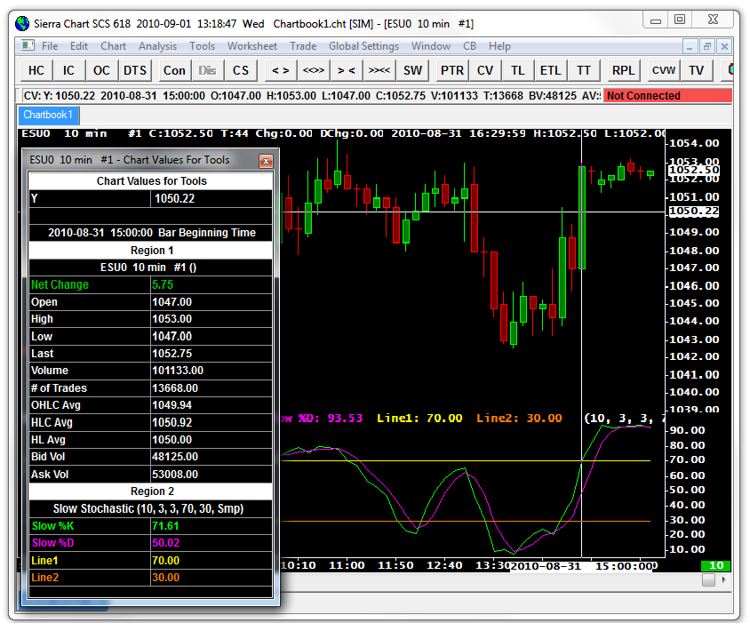{kind=link}
Description
The Chart Values tool displays the values for each graph in the chart at the chart column that you are pointing to. These values are displayed in the Window >> Tool Values Window.
Tool Usage
To use or activate the Chart Values tool, select Tools >> Chart Values/Crosshair on the menu. On the chart, click your Pointer left button once to activate the tool and display the chart values for the column that you are pointing to with your Pointer.
To deactivate the tool, left click your Pointer.
The chart values are displayed in the Tool Values Window. If this window is not already displayed, select Window >> Tool Values Window on the menu.
If you see a checkmark by Window >> Tool Values Window, but the window is not visible, then select Window >> Reset Windows and reselect this command to display the Tool Values Window.
The values are also displayed in the Compact Tool Values Window. For more information about both of these windows, refer to the Viewing Tool and Chart Data When Using Tools section on this page.
Chart Values Tool Configuration
The following Chart Values tool settings are located on the Chart Values tab in the Global Settings >> Tool Settings window.
To control color and other appearance settings for the Chart Values tool, refer to Chart Values Tool Colors.
Show Y Value and Time Boxes (Tool Settings >> Chart Values >> Chart Values
When this setting is set to Yes, boxes that show the Time and Price information are displayed in the respective scales area for the location of the Crosshairs.
Hide Chart Values Tool when Pointer not Over Chart (Tool Settings >> Chart Values >> Chart Values)
When this setting is set to Yes, the Crosshairs for the Chart Values Tool will not be shown on the Chart when the Pointer is moved outside of the Chart window.
Show Crosshair Horizontal Line (Tool Settings >> Chart Values >> Chart Values)
This setting enables and disables the display of the horizontal crosshair line which intersects the Pointer location.
Show Crosshair Vertical Line (Tool Settings >> Chart Values >> Chart Values)
This setting enables and disables the display of the vertical crosshair line which intersects the Pointer location.
Keep Compact Tool Values Window Always Visible with Tool (Tool Settings >> Chart Values >> Chart Values)
When this setting is set to Yes, the Compact Tool Values Window will always be visible when the Chart Values tool is the selected active tool in the Tools menu.
It will also be visible when another drawing tool is active and the Chart Values option Always On When Using Other Tools is selected.
Compact Tool Values Window Shows Chart Region 1 Values Only (Tool Settings >> Chart Values >> Chart Values)
When this setting is set to Yes, the Compact Tool Values Window will only show values for the first Chart Region.
Show/Hide Tool Values Window When Tool Activated/Deactivated (Tool Settings >> Chart Values >> Chart Values)
When this option is set to Yes, the Tool Values Window (Window >> Tool Values Window) will be displayed when you activate the Chart Values tool and will be hidden when you deactivate the Chart Values tool.
Jump to End of All Charts When Global Cursor is on and Tool is Deactivated (Tool Settings >> Chart Values >> Chart Values)
When this option is set to Yes, then when using the Chart Values tool with the Tools >> Global Cursor On and Tools >> Synchronize Charts options enabled, all the charts will move to their last bar when you deactivate the Chart Values tool and the controlling chart is already showing the last bar.
Refer to Global Cursor and Synchronize Charts for more information on these options.
Note: for this to work properly the chart on which the Chart Values tool is on when the tool is deactivated, must have the last bar in view.
Center Bars to Global Cursor Crosshair (Tool Settings >> Chart Values >> Chart Values)
When this option is set to Yes, and when using the Global Cursor option with the Chart Values Tool, the other charts that do not have the active pointer, will have the chart bar that the crosshair is over be centered to the chart. This allows you to look to the left and to the right of that bar and see all of the bars on either side of it.
Note that due to differences in the time scales for different charts, that as the crosshair approaches the far left (beginning of time for the chart) or far right (end of time for the chart) of a particular chart, the crosshair will then move off center and approach the left or right side to align with the proper time in that window.
Always On When Chart Values Tool Selected (Tool Settings >> Chart Values >> Chart Values)
When this option is set to Yes, the Chart Values tool will always be active when Tools >> Chart Values is enabled/checked.
As you move your Pointer around the chart window, the Tool Values windows will update. Refer to Viewing Tool and Chart Data When Using Tools for information about these windows.
Action When Other Tools Selected (Global Settings >> Tool Settings >> Chart Values >> Chart Values)
The following options are available:
- None: When this option is selected, neither of the below two options are active.
- Always On When Using Other Tools: When this option is selected, the Chart Values tool is always on when any of the Drawing Tools is selected from the Tools menu. The crosshairs stay on the screen and the Tool Value windows update as the Pointer is moved.
- Always Enabled When Using Other Tools: When this option is selected, the Chart Values tool is always enabled when any of the Drawing Tools is selected from the Tools menu. The crosshairs display and the Tool Value windows update as the left button is clicked. Note that for most tools, the action of selecting the left button will perform the action of both the selected tool and the Chart Values tool.
The difference between this option and Always On When Using Other Tools is that the Chart Values tool does not actually become active until the selected Tool becomes active when you left click the Pointer and initiate the selected tool.
If you notice the Chart Values tool is out of sync with the Drawing Tool and it disables when you activate the Drawing Tool, then reselect the Drawing Tool from the Tools menu.
Day of Week (Tool Settings >> Chart Values >> Date-Time Label Options for Intraday Charts)
When this option is set to Yes, then when the Chart Values tool is active and the Time Box is displayed, then the Day of the Week will be displayed in the Time Box.
Year (Tool Settings >> Chart Values >> Date-Time Label Options for Intraday Charts)
When this option is set to Yes, then when the Chart Values tool is active and the Time Box is displayed, then the year will be displayed in the Time Box.
Month (Tool Settings >> Chart Values >> Date-Time Label Options for Intraday Charts)
When this option is set to Yes, then when the Chart Values tool is active and the Time Box is displayed, then the month will be displayed in the Time Box.
Day (Tool Settings >> Chart Values >> Date-Time Label Options for Intraday Charts)
When this option is set to Yes, then when the Chart Values tool is active and the Time Box is displayed, then the day of the week will be displayed in the Time Box.
Hour (Tool Settings >> Chart Values >> Date-Time Label Options for Intraday Charts)
When this option is set to Yes, then when the Chart Values tool is active and the Time Box is displayed, then the hour will be displayed in the Time Box.
Minute (Tool Settings >> Chart Values >> Date-Time Label Options for Intraday Charts)
When this option is set to Yes, then when the Chart Values tool is active and the Time Box is displayed, then the Minute will be displayed in the Time Box.
Second (Tool Settings >> Chart Values >> Date-Time Label Options for Intraday Charts)
When this option is set to Yes, then when the Chart Values tool is active and the Time Box is displayed, then the Seconds will be displayed in the Time Box.
Millisecond (Tool Settings >> Chart Values >> Date-Time Label Options for Intraday Charts)
When this option is set to Yes, then when the Chart Values tool is active and the Time Box is displayed, then the Milliseconds will be displayed in the Time Box.
Global Cursor (Tools >> Global Cursor On)
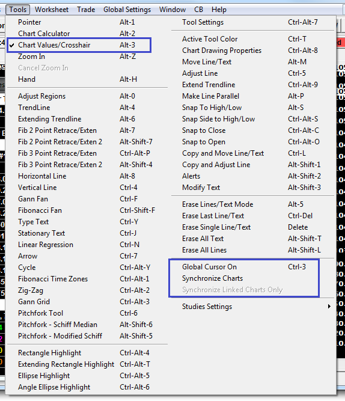{kind=link}
When using the Chart Values Tool, the Crosshair can be displayed on multiple charts within the same Chartbook at the same time to show the bars and price levels on other charts which correspond to the bar and price level the Crosshair is over on the active chart.
To use this feature, enable the Tools >> Global Cursor On option on the menu. This is a global setting and applies to all charts.
Place the charts side-by-side so they are visible.
Select Tools >> Chart Value/Crosshair on the menu to select the Chart Values tool.
Left click on a chart to activate the tool. The Chart Values Crosshair will appear on all charts. On the other charts it will be on a corresponding bar according to the Date-Time of the bar it is over on the chart it is being used on.
In order to synchronize your charts by bringing into view the corresponding time on the other charts, enable the option Tools >> Synchronize Charts on the menu. Refer to Synchronize Charts for more information.
If you want to synchronize only the charts which have the same Link Number, then enable the option Tools >> Synchronize Linked Charts Only. This option can only be enabled when Tools >> Synchronize Chartsis also enabled.
To change the Link Number of a chart, select Chart >> Chart Settings >> Linking from the menu. Select a number in the Link Number box in the Chart Linking frame. Refer to Synchronize Linked Charts Only for more information.
Keep in mind that charts from other Chartbooks that are currently visible because they have Window >> Window Always Visible enabled, will not display the crosshair if they are in another Chartbook. This is not supported.
If the crosshair is not showing or not showing in the expected location on charts other than the source chart which you are using the Chart Values tool on, then make sure the horizontal scroll position for those other charts is including the same Date-Time and the vertical scale is including the same price as the source chart which you are using the Chart Values tool on.
Global Cursor Not Active on All Charts
When using the Global Cursor and it is not active on all of the charts in the current Chartbook, then this will be because for the charts where it is not appearing, Tools >> Chart Values is not selected.
The easiest solution in this case is to enable Global Settings >> Tool Settings >> Use Common Drawing Tool for Charts.
Otherwise if that option is not enabled you need to select the Tools >> Chart Values tool for each chart.
Symbol Cursor (Tools >> Symbol Cursor)
It is supported to use the Global Cursor only on charts that have the same symbol. This is known as the Symbol Cursor.
The Symbol Cursor works identically to the Global Cursor except that the Symbol Cursor only displays on charts that have the same symbol as the chart where the Chart Values tool is being used.
To enable the Symbol Cursor, select Tools >> Symbol Cursor.
Synchronize Charts (Tools >> Synchronize Charts)
Selecting this option along with the Global Cursor adjusts all charts being viewed to show the same time on the screen as the location of the Chart Value tool in whichever window it is active within. This allows the timelines of multiple charts to be kept within view as the cursor is moved.
Turn this option on by selecting Tools >> Synchronize Charts.
This option can be used with charts with different timeframes.
Synchronize Linked Charts Only (Tools >> Synchronize Linked Charts Only)
Enabling this option in addition to enabling Synchronize Charts will cause charts to scroll to the matching Date-Time location when using the Global Cursor to keep the same time displayed for the charts, except that with this option enabled only charts that are linked together through the Chart Linking option will adjust their Date-Time location.
Enable this option by first enabling Tools >> Synchronize Charts and then enable Tools >> Synchronize Linked Charts Only.
Chart Values Tool Colors
The color, style, and width of the Crosshair lines and Price and Time boxes is controlled on the Global Settings / Chart >> Graphics Settings windows. Refer to the following Color and Width items within Colors and Widths tab of the Graphics Settings window.
- Chart Values: Color of the Price and Time Boxes
- Chart Values: Crosshair
Refer to the image below for the specific location of these.
The vertical and horizontal lines drawn by the Chart Values tool are combined with the existing graphics on the chart using an exclusive or operation with the existing graphics. This allows, the prior lines to be removed as you move the Chart Values Tool around the chart, very efficiently. This means that the color of them, can be different than the color you selected.
{kind=link}
Adjust Regions
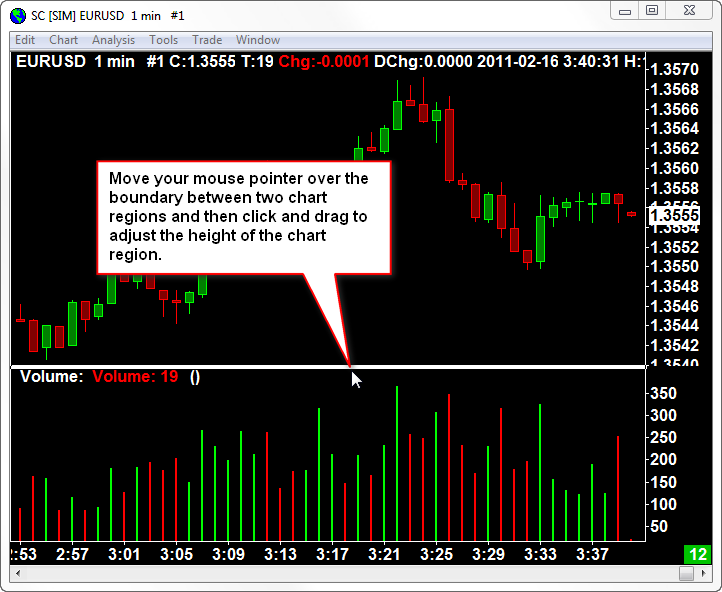{kind=link}
Description
The Adjust Regions special chart tool adjusts the height of Chart Regions.
You can make the regions larger or smaller.
In recent Sierra Chart versions it is possible to adjust the height of the regions in the chart by hovering your pointer over the boundary between the regions in the Values Scale on the right side of the chart. This eliminates the need to use the Adjust Regions tool. Refer to the image below. As you hover over the boundary between Chart Regions, you will see a horizontal line displayed. Left click this line with your Pointer and drag to adjust to the new height and then release the left Pointer button.

Tool Usage
To select this tool, select Tools >> Adjust Regions on the main menu, press the corresponding Control Bar button (AR), or access it from the right-click chart shortcut menu.
Move your pointer over a chart region boundary. A horizontal dividing line will be displayed.
Left click with your pointer and hold. Move the pointer to adjust the height of the region to the desired height and release the left button.
You do not have to be very precise and move your Pointer to within one pixel of the boundary. There is about a 4 pixel region above and below where you can left click your Pointer and drag to adjust the Chart Region height.
After you a change the heights of the Chart Regions, you may want to save your Chartbook by selecting File >> Save on the menu.
Also, if the studies on the chart are from a study collection on the Analysis menu, then you will need to save the Study Collection again in order to have the region heights saved with the Study Collection so they will be restored next time you apply the Study Collection. To do this select Analysis >> Studies. Select the Study Collection name in the Study Collections list and press the Save All button.
Tool Configuration
Maintaining Always Active State
To always have the Adjust Regions tool active select Global Settings >> Tool Settings. Select the General tab and enable Adjust Regions Tool Always Active with Current Tool.
Hand
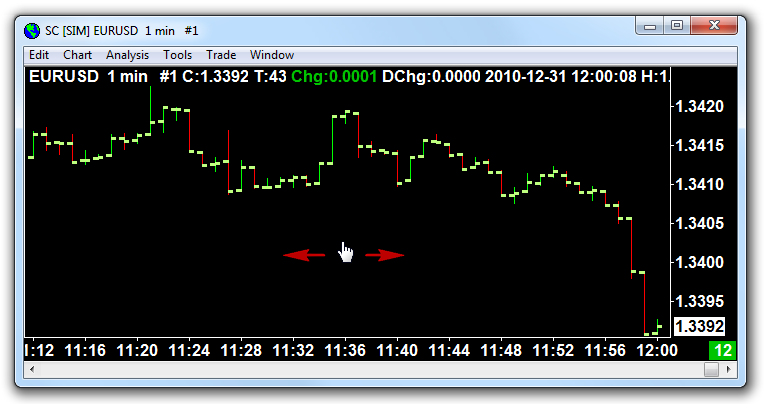{kind=link}
Description
The Hand tool is a tool that is used to drag the chart left and right by simply clicking and dragging anywhere on the chart. This is an alternative to using the scrollbar at the bottom of the chart. Vertical movement as well is optionally supported.
You may be more comfortable using this method of scrolling the chart rather than using the scrollbar.
Vertical scrolling/movement is also optionally supported with the Hand tool.
For additional information and methods of selecting this tool, refer to Selecting Drawing Tools.
Tool Usage
To use the Hand tool select Tools >> Hand on the menu. Left click with your Pointer on the chart window and then drag left to move the chart towards the left and drag right to move the chart towards the right. Release the left Pointer button when you are done moving.
Tool Configuration
Vertical Movement and Scaling
The Hand tool can be used for vertical movement and scale changes. To enable this, select Global Settings >> Tool Settings >> General on the menu. Enable Support Vertical Movement/Scaling with Hand Tool.
When the Hand tool is active and you drag up and down over the main chart, the chart will be moved up and down. This is the very same action that occurs when you drag up and down in the Values Scale area on the right side of the chart and Interactive Scale Move is selected for the scale.
If there is no vertical scale change, then right-click on the Values Scale on the right side of the chart and make sure Interactive Scale Locked is not selected. If it is, select Interactive Scale Move/Range instead.
When the option for Vertical Movement with the Hand tool is enabled, it is then possible to press and hold the Control (Ctrl) key on your keyboard and cause the chart scale to be compressed and expanded when you left click with your Pointer and drag up and down over the chart when using the Hand tool.
If you have any problems moving the chart with the Hand tool, then it is possible the scale has become out of expected alignment and you will need to reset the scale by selecting Chart >> Reset Scale. Or you can double-click in the Values Scale area on the right side of the chart. It is not that something has gone wrong with the scale, rather it just needs to be reset to give you a default point from which to work from so you have an expected result.
You are also able move the chart up and down, and expand and compress the scale by using the Interactive Scaling feature which involves clicking and dragging on the right side Values Scale of the chart.
Chart Values Tool Always on When Using Hand Tool
It is supported to have the Chart Values Tool always on when using the Hand tool.
To do this, go to Global Settings >> Tool Settings >> Chart Values >> Action When Other Tools Selected and set it to Always On When Using Other Tools.
For more information, refer to Chart Values Tool Settings.
Changing Hand Cursor
To change the cursor for the Hand tool, go into the operating system Control Panel >> Mouse Properties and then change the "Pointer >> Link Select" cursor.
Line, Ray, Extended Line
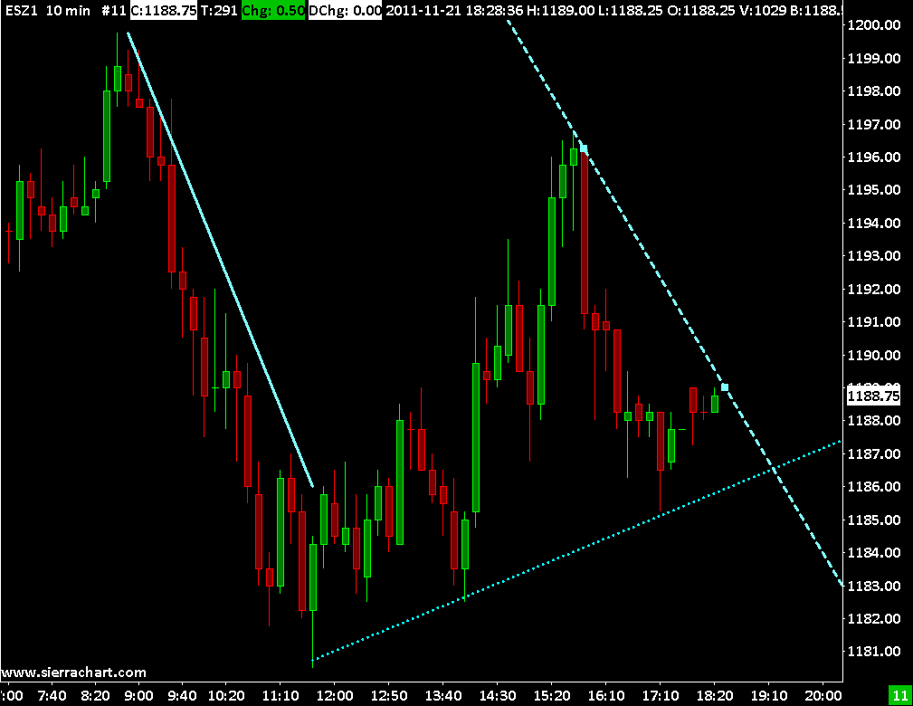{kind=link}
Description
The Line tool is for drawing a line that has 2 points and does not extend in either direction.
The Ray tool is for drawing a line that has 2 points and where the second point extends to the edge of the chart window.
The Extended Line tool is for drawing a line that has 2 points and where both points extend to the edges of the chart window.
All of these Drawing Tools can be used to draw vertical, horizontal, or any kind of lines you require on a chart.
A Line can be drawn on a Logarithmic Scale. When drawing the line either on a Linear or Logarithmic scale the Date-Time and vertical Value for each point is remembered according to the actual displayed values on the chart.
On a Logarithmic scale, each point is drawn exactly at the original Date-Time and vertical Value that it was originally drawn to when using the Tool. There is correct display of a Line on a Logarithmic scale. If you want the Line to be curved so that the imaginary points along the line are drawn to their true correct values, then enable Global Settings >> Tool Settings >> Other >> Support Curved Lines on Logarithmic Scale.
In the case of a Ray drawing, when it is extended on a Logarithmic scale it goes to the correct transformations. First the vertical scale values go through a base 10 logarithmic conversion. After this, an extension is done on the Ray drawing using these logarithmic values. After the extension is complete, these vertical scale base 10 logarithmic values, are converted back to the actual values by raising the number 10, to the power of these logarithmic values. These points are then drawn on the chart.
When changing between a Linear or Logarithmic scale, there is a correct transformation of the Line or Ray drawing anchor points, between these types of scales.
Tool Usage
To use any of these tools, select Tools >> Line | Ray | Extended Line on the menu. For additional methods of selecting this tool, refer to the Selecting Drawing Tools section.
Select the active Drawing Tool Configuration that you want to use by selecting Tools >> Current Tool Config >> Config # on the menu. For more information about Drawing Tool Configurations, refer to Using Multiple Drawing Tool Configurations.
Position your Pointer at the point where you want the first point to be and left click the Pointer. To complete the line, position the Pointer at the point where you want the second point to be and left click the Pointer again.
Cutting Lines
Rays, Extended Lines, and many other Chart Drawings can be cut by right-clicking on the Chart Drawing with your Pointer at the location that you want to cut it and selecting the Cut Drawing Here command on the Chart Drawing Shortcut menu. If this command does not exist on the Chart Drawing Shortcut menu, it can be added. Refer to Customizing Chart Drawing Shortcut Menu for instructions.
Extending Lines
A Line or Ray can be extended by right clicking on the side you wish to extend and selecting Extend Drawing on the menu.
Making a Line Either Vertical or Horizontal
When drawing line, it is possible to make it horizontal or vertical. As you are drawing the line, press the Control key on your keyboard. As you move your Pointer around, the line will become either horizontal or vertical. Continue to hold the Control key until you set the second point of the line. This method can also be used when you are Adjusting the Line.
Setting a Line or Ray to a Specific Angle
In order to create a Line or Ray that has a specific angle, set the desired angle in the Use Fixed Angle box on the Chart Drawing Properties / Chart Drawing Configuration window.
Tool Configuration
To configure the Line | Ray | Extended Line Drawing Tools, refer to the Drawing Tool Configuration section.
Erasing
To erase a line Chart Drawing, refer to the Erasing Chart Drawings section.
Parallel Lines
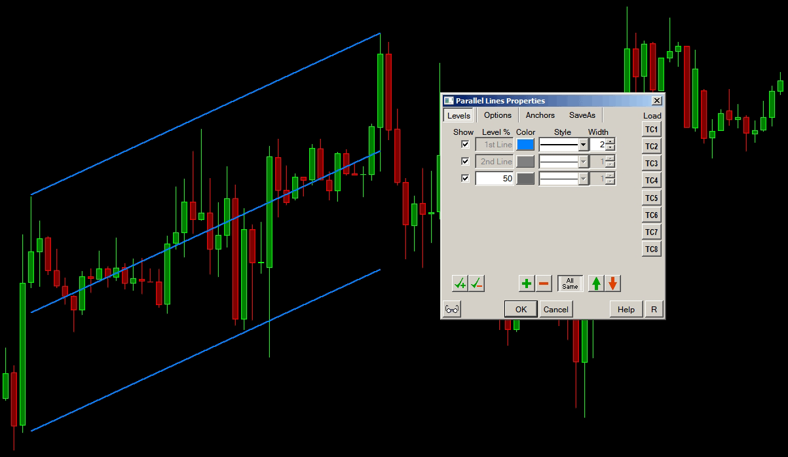{kind=link}
Description
The Parallel Lines drawing tool is for drawing 2 or more parallel lines.
By default, 2 lines will be displayed. Additional lines are automatically drawn based upon the specified Levels in the Parallel Lines Configuration window. Refer to Tool Configuration below.
Tool Usage
To use this tool, select Tools >> Parallel Lines on the menu. For additional methods of selecting this tool, refer to the Selecting Drawing Tools section.
Select the active Drawing Tool Configuration that you want to use by selecting Tools >> Current Tool Config >> Config # on the menu. For more information about Drawing Tool Configurations, refer to Using Multiple Drawing Tool Configurations.
Position your Pointer where you want to start the first Parallel Line and left click the Pointer. Move the Pointer where you want the line to end and left click again.
Move the Pointer above or below the first Parallel Line to set the position of the second Parallel Line and left click the Pointer to complete the drawing. Any additional Levels that have been specified in the Parallel Lines Configuration window will be drawn.
Cutting Parallel Lines
Parallel Lines, and many other Chart Drawings, can be cut by right-clicking on the Chart Drawing with your Pointer at the location that you want to cut it and selecting the Cut Drawing Here command on the Chart Drawing Shortcut menu. If this command does not exist on the Chart Drawing Shortcut menu, it can be added. Refer to Customizing Chart Drawing Shortcut Menu for instructions.
Tool Configuration
Additional lines are specified through the Levels >> Level % setting in the Parallel Lines Configuration window. The percentage is a percentage of the distance between the first and second drawn parallel lines.
A positive percentage draws lines which originate from the first line towards the second line. For example a 50% percentage will draw line between the first and second parallel line. A negative percentage draws lines which originate from the first line and are placed away from the second line.
Using a percentage of -100 will draw a parallel line opposite of the second line on the other side of the first line. Using a percentage of 100, will draw a line directly at the same position as the second line. Using a percentage of 50 will draw a parallel line in the middle of the first and second lines. For more information refer to the Drawing Tool Configuration section.
Erasing
To erase a Parallel Lines drawing, refer to the Erasing Chart Drawings section.
Parallel Rays
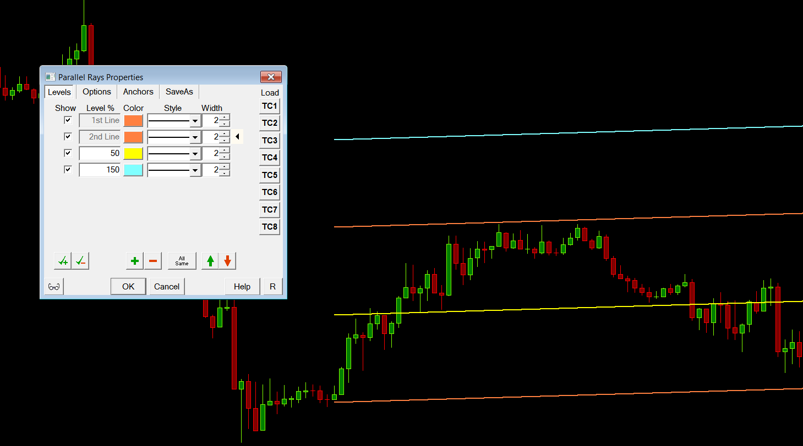{kind=link}
Description
The Parallel Rays drawing tool is for drawing 2 or more parallel lines which extend beyond the second point. These extending lines are known as Rays.
By default, 2 lines are displayed. Additional lines are automatically drawn based upon the specified Levels in the Parallel Rays Configuration window. Refer to Tool Configuration below.
Tool Usage
To use this tool, select Tools >> Parallel Rays on the menu. For additional methods of selecting this tool, refer to the Selecting Drawing Tools section.
Select the active Drawing Tool Configuration that you want to use by selecting Tools >> Current Tool Config >> Config # on the menu. For more information about Drawing Tool Configurations, refer to Using Multiple Drawing Tool Configurations.
Position your Pointer where you want to start the first Parallel Ray and left click the Pointer. Move the Pointer where you want the line to end and left click again.
Move the Pointer above or below the first Parallel Ray to set the position of the second Parallel Ray and left click the Pointer to complete the drawing. Any additional Levels that have been specified in the Parallel Rays Configuration window will be drawn.
Cutting Parallel Rays
Parallel Rays, and many other Chart Drawings, can be cut by right-clicking on the Chart Drawing with your Pointer at the location that you want to cut it and selecting the Cut Drawing Here command on the Chart Drawing Shortcut menu. If this command does not exist on the Chart Drawing Shortcut menu, it can be added. Refer to Customizing Chart Drawing Shortcut Menu for instructions.
Tool Configuration
Additional lines are specified through the Levels >> Level % setting in the Parallel Rays Configuration window. The percentage is a percentage of the distance between the first and second drawn parallel lines.
A positive percentage draws lines which originate from the first line towards the second line. For example a 50% value will draw line in the middle of the first and second parallel lines. A negative percentage draws lines which originate from the first line and are placed away from the second line.
Using a percentage of -100 will draw a parallel line opposite of the second line on the other side of the first line. Using a percentage of 100, will draw a line directly at the same position as the second line. Using a percentage of 50 will draw a parallel line in the middle of the first and second lines. For more information refer to the Drawing Tool Configuration section.
Erasing
To erase a Parallel Rays drawing, refer to the Erasing Chart Drawings section.
Chart Calculator
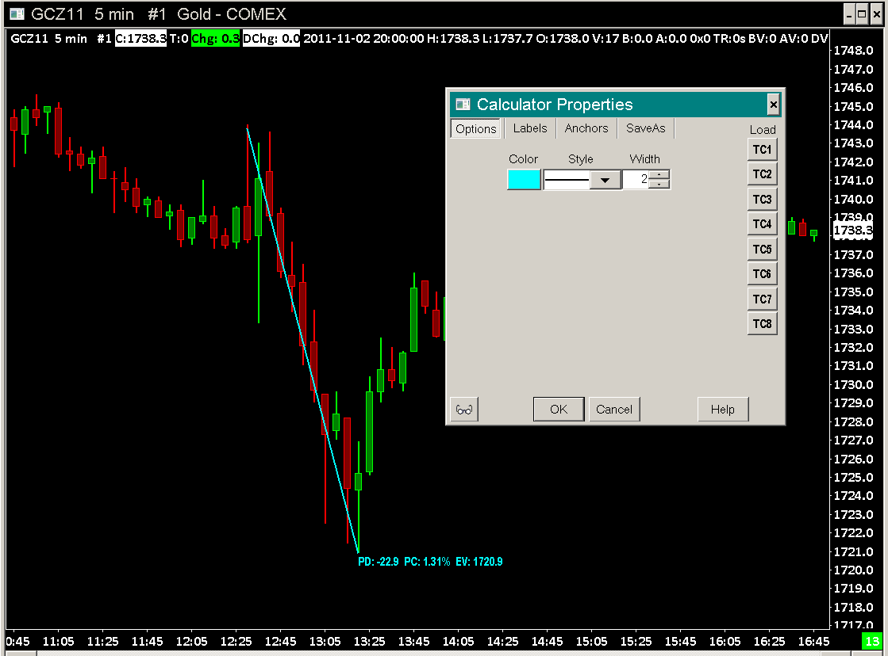 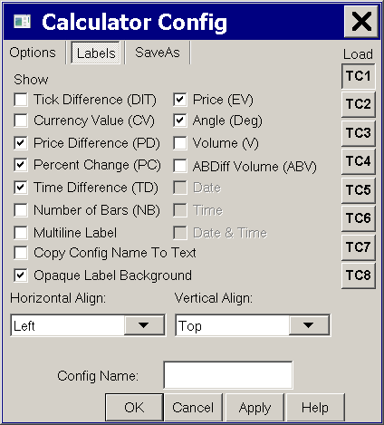{kind=link}
{kind=link}
Description
The Chart Calculator drawing will perform the specified calculations between two points on the chart and display the results.
Refer to the Drawing Tool Configuration section to configure this drawing tool and specify what calculations to calculate and display.
Tool Usage
To select this tool, select Tools >> Chart Calculator on the menu. For additional methods of selecting this tool, refer to the Selecting Drawing Tools section.
Select the active Drawing Tool Configuration that you want to use by selecting Tools >> Current Tool Config >> Config # on the menu. For more information about Drawing Tool Configurations, refer to Using Multiple Drawing Tool Configurations.
To use this tool, left click with the pointer on the chart to set the beginning point. Move your pointer to where you want to end the line and left click again to set the end point.
Making a Line Either Vertical or Horizontal
When drawing a Chart Calculator line, it is possible to make it horizontal or vertical. As you are drawing the line, press the Control key on the keyboard. As you move your Pointer around, the line will become either horizontal or vertical. Continue to hold the Control key until you set the end point of the line. This method can also be used when you are Adjusting the line.
Tool Configuration
Refer to the Drawing Tool Configuration section to configure the drawing tool.
For angle readings to be correct, you must set the Value Increment per Bar in Ticks (Price Unit per Bar in Ticks) setting in Chart >> Chart Settings >> Chart Drawings.
Erasing
To erase a Chart Calculator drawing, refer to the Erasing Chart Drawings section.
Horizontal Line | Horizontal Ray | Horizonal Line Non-Extended | Vertical Line
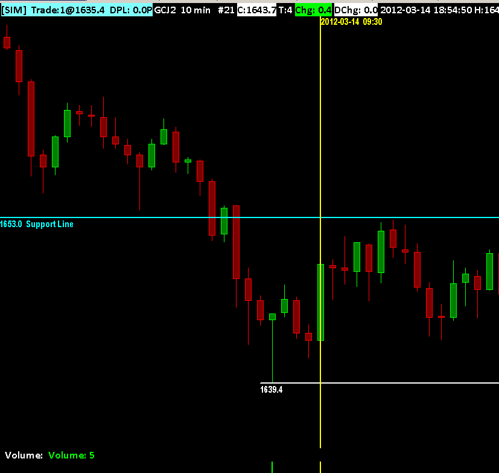{kind=link}
Description
The Horizontal Line tool is for drawing a horizontal line on the chart that extends across the entire chart. As an alternative to using this drawing tool you could use the Line or Horizontal Lines studies instead.
The Horizontal Ray tool is for drawing a horizontal line that extends from the first point set for the line and extends either to the left or right of the chart window.
The Horizonal Line Non-Extended tool is for drawing a horizontal line that does not extend beyond the two points used to set the line.
The Vertical Line tool is for drawing a vertical line on the chart.
Tool Usage
To use any of these tools, select Tools >> Horizontal Line | Horizontal Ray | Horizonal Line Non-Extended | Vertical Line on the menu. For additional methods of selecting these tools, refer to the Selecting Drawing Tools section.
Select the active Drawing Tool Configuration that you want to use by selecting Tools >> Current Tool Config >> Config # on the menu. For more information about Drawing Tool Configurations, refer to Using Multiple Drawing Tool Configurations.
For the Horizonal Line and Vertical Line, position your Pointer where you want the horizontal or vertical line to be and left click with your Pointer. Move the Pointer until you find the line is positioned exactly where you want it, then left click again with your Pointer.
In the case of the Horizontal Ray drawing, the line will extend in one direction from the point you have left clicked at or subsequently moved the Pointer to. The direction of the extension is to the left or right based upon the Drawing Tool Configuration or the Chart Drawing Properties.
For the Horizonal Line Non-Extended, position your pointer where you want the horizontal line to start and left click with your Pointer. Move the Pointer to where you want the horizontal line to end, then left click again with your Pointer.
Tool Configuration
The direction of the Horizonal Ray is based upon the Drawing Tool Configuration or the Chart Drawing Properties.
Refer to the Drawing Tool Configuration section to configure the drawing tool.
Adding Text to a Horizontal Line
- To add text to an existing horizontal line on the chart, right-click with your Pointer on this horizontal line and select Modify Text on the displayed menu. The Modify Text command will need to be added to the Chart Drawing Shortcut menu if it is not already listed. For instructions to add this command, refer to Customizing Chart Drawing Shortcut Menu.
- Enter the text in the displayed window and press OK.
- You will then see this text displayed under the horizontal line.
- You can change the alignment of the text through the Chart Drawing Properties.
Erasing
To erase a Vertical Line, Horizontal Line or Horizontal Ray drawing, refer to the Erasing Chart Drawings section.
Type Text | Stationary Text
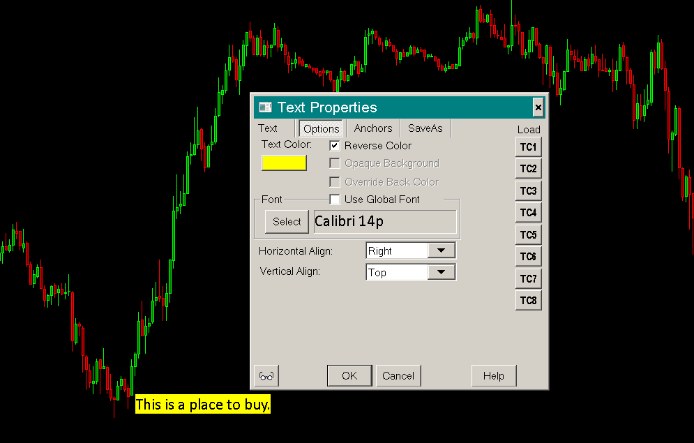{kind=link}
Description
The Type Text and the Stationary Text drawing tools are used to place text directly on a chart.
When using the Type Text tool, the text you enter is linked to a specific Date and Time and value in the Chart Region it was typed in. Therefore, as you scroll the chart, the text will move.
When using the Stationary Text tool, the text you enter is positioned relative to the top left of the chart window. Therefore as you scroll the chart, it always remains stationary.
It is supported to configure a Control Bar button that uses the Type Text tool and draws on the chart specific predefined text with predefined Properties. Refer to Custom Text Drawing Control Bar Buttons.
Tool Usage
To use this tool, select Tools >> Type Text | Stationary Text on the menu. For additional methods of selecting this tool, refer to the Selecting Drawing Tools section.
Select the active Drawing Tool Configuration that you want to use by selecting Tools >> Current Tool Config >> Config # on the menu. For more information about Drawing Tool Configurations, refer to Using Multiple Drawing Tool Configurations.
Position your Pointer where you want enter the text and left click the pointer. Enter the text in the displayed text box and press OK.
When you have preset text for the Text or Stationary Text Tools on the Text tab of the Drawing Tool Configuration for these Tools, then when left clicking on the chart, there will not be a prompt to enter the text.
Rather, the preset text will be displayed automatically. If you do not want this behavior, then remove the preset text in the Drawing Tool Configuration window for these tools.
To display multiple lines of text, enter the text that you want on a separate line. Separate lines just by pressing the Entry key in the text box which displays when you left click on the chart when using the Type Text Tool.
Tool Configuration
Refer to the Drawing Tool Configuration section to configure the drawing tool.
Modifying Existing Text Drawings
To modify an existing Text drawing on the chart, refer to the Chart Drawing Properties section.
Erasing
To erase a Text drawing, refer to the Erasing Chart Drawings section.
Price Retracement (2 point) | Price Expansion (2 point) | Price Projection (3 point) Tools
This section documents the Price Retracement (2 point), Price Expansion (2 point), and Price Projection (3 point) tools.
Description
Price Retracement
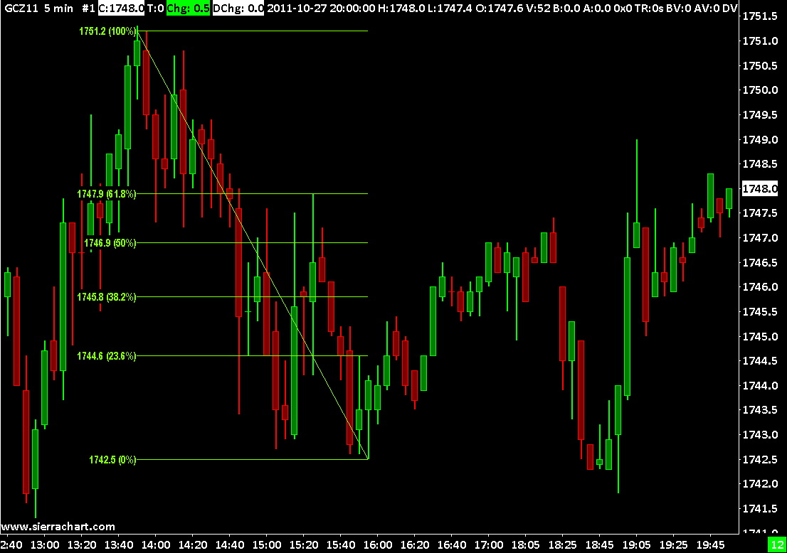{kind=link}
This tool is used to draw Retracement levels as horizontal lines which are based on 2 points. To select this tool, select Tools >> Price Retracement on the menu. For additional methods of selecting this tool, refer to the Selecting Drawing Tools section.
Select the active Drawing Tool Configuration that you want to use by selecting Tools >> Current Tool Config >> Config # on the menu. For more information about Drawing Tool Configurations, refer to Using Multiple Drawing Tool Configurations.
Using this tool involves drawing a line. To do this, left click with your Pointer on the chart to mark point A, move the Pointer and left click again to mark point B. The line A-B represents the length of price move.
The retracement levels are calculated from these 2 points. If the line is down sloping, then the retracement lines will move upward starting from 0% at the bottommost point and the percentages will increase from this bottommost point. If the line is up sloping, then the retracement lines will move downward starting from 0% at the topmost point and the percentages will increase from this topmost point.
Price Expansion
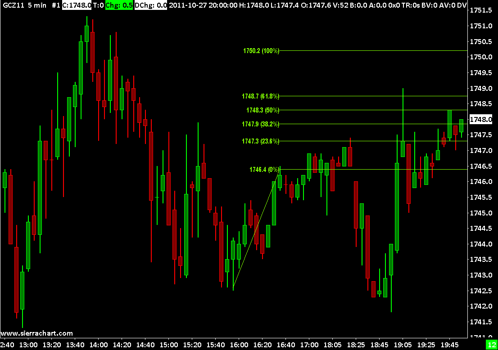{kind=link}
This tool is used to draw Expansion/Extension levels as horizontal lines which are based on 2 points. To select this tool, select Tools >> Price Expansion on the menu. For additional methods of selecting this tool, refer to the Selecting Drawing Tools section.
Select the active Drawing Tool Configuration that you want to use by selecting Tools >> Current Tool Config >> Config # on the menu. For more information about Drawing Tool Configurations, refer to Using Multiple Drawing Tool Configurations.
Using this tool involves drawing a line. To do this, left click on the chart with your Pointer to mark point A, move the Pointer and left click again to mark point B. The line A-B represents the length of price move.
The expansion/extension levels are calculated from these 2 points. If the line is down sloping, then the expansion lines will move downward starting from 0% at the bottommost point and the percentages will increase from this bottommost point. If the line is up sloping, then the retracement lines will move upwards starting from 0% at the topmost point and the percentages will increase from this topmost point.
Price Projection
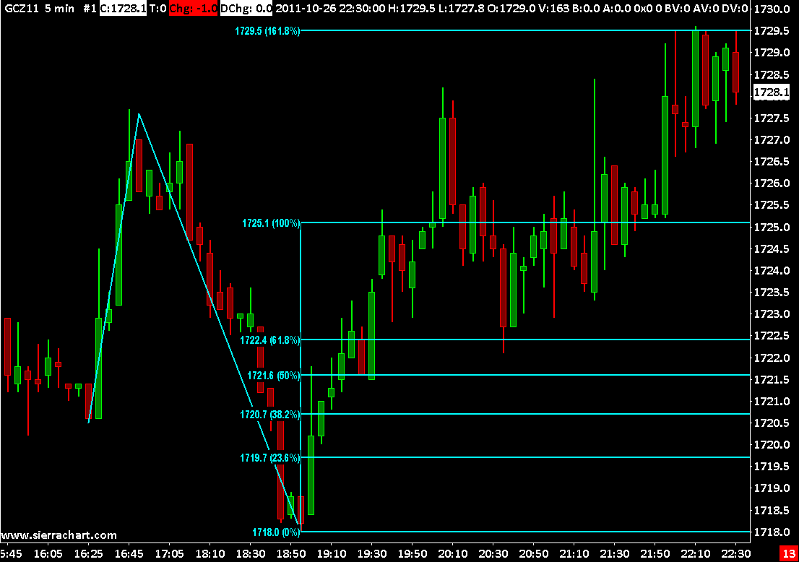{kind=link}
This tool is used to draw expansion/extension levels as horizontal lines which are based upon 3 points. To select this tool, select Tools >> Price Projection on the menu. For additional methods of selecting this tool, refer to the Selecting Drawing Tools section.
Select the active Drawing Tool Configuration that you want to use by selecting Tools >> Current Tool Config >> Config # on the menu. For more information about Drawing Tool Configurations, refer to Using Multiple Drawing Tool Configurations.
Using this tool involves drawing 2 lines that identify 3 points (A-B-C). To do this, left click with your Pointer on the chart to mark point A, move the Pointer, and left click again to mark B. The line A-B represents the length of price move.
Move the Pointer again and left click to mark point C. Point C is the point at which expansion/extension horizontal lines are drawn from. These expansions/extension lines are calculated using the length of line A-B and they are drawn from point C.
If the A-B line is down sloping, then the expansion lines will move downward starting at point C and the percentages will increase as they go downward from this point. If the A-B line is up sloping, then the expansion lines will move upward starting at point C and the percentages will increase as they go upward from this point.
Tool Configuration
Refer to the Drawing Tool Configuration section to configure the drawing tool.
Modifying Retracement/Expansion Levels for Retracement/Expansion/Projection Drawings
To modify retracement/expansion levels on an existing drawing, you will need to open the Chart Drawing Properties window and simply modify the percentages on the Levels tab.
Hiding Retracement/Expansion Levels for Retracement/Expansion/Projection Drawings
To hide a retracement/expansion level on an existing drawing, follow either of these steps:
- Open the Chart Drawing Properties window for the drawing and uncheck the Levels >> Show option for the level that you wish to hide.
- Right-click on a level line on the drawing and select Hide Level. The level can be displayed again by opening the Chart Drawing Properties window and enabling the Levels >> Show option for that level.
Erasing the Drawing
To erase a Retracement/Expansion/Projection drawing, refer to the Erasing Chart Drawings section.
Moving the Drawing
To move an existing Retracement/Expansion/Projection Chart Drawing, refer to the Move Chart Drawing section.
Adjusting the Drawing
You have the ability to adjust the A or B points of a Price Retracement or Price Expansion drawing. Or the A, B, or C points of a Price Projection drawing. Refer to the Adjust Chart Drawing section. To adjust one of the A, B, or C points, you need to select one of these points.
Gann Fan
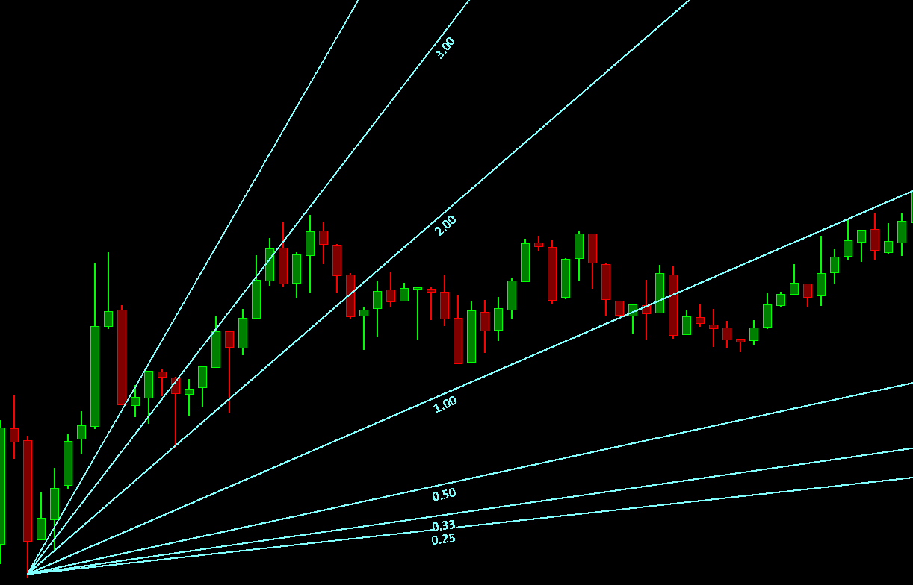{kind=link}
Description
The Gann Fan tool draws multiple angled lines at the angles set in the configuration for the Gann Fan Drawing Tool, beginning from the first point selected.
The angles are specified as slope values instead of degrees.
Tool Usage
To select this tool, select Tools >> Gann Fan on the menu.
For additional methods of selecting this tool, refer to the Selecting Drawing Tools section.
Select the active Drawing Tool Configuration that you want to use by selecting Tools >> Current Tool Config >> Config # on the menu. For more information about Drawing Tool Configurations, refer to Using Multiple Drawing Tool Configurations.
To use this tool, left click with your Pointer on the chart to start the lines at a significant point. The angled fan lines are drawn from this point.
Depending upon whether the line drawn is sloping up or down determines whether the fan lines are going to be sloping up or down, respectively. The exact ending bar is not relevant to this.
The direction and number of bars from the first point to the second point only establishes the direction of the fan lines, whether the lines are sloping up or down, and the internal ending point of the extending fan lines. In addition, the angle value that is displayed in the Tool Values Windows when creating or modifying the Gann Fan is determined by the position of a virtual line from the first point to the second point relative to the horizontal. Otherwise, it is not used in the calculations.
The fan lines are calculated using one of three methods based on how the Value Increment Per Bar Set From setting is configured in the Drawing Tool Configuration window for the Gann Grid tool.
Refer to the Common Tool Configuration Settings and Chart Drawing Properties for Gann Grid and Gann Fan section for the possible choices.
Tool Configuration
Refer to the Drawing Tool Configuration section to configure the drawing tool.
The Levels tab of the Tool/Drawing Configuration for the Gann Fan controls the individual drawn lines. You can control how many lines are visible, the slope of those lines and the color, style, and width of those lines. The slope is simply calculated as rise over run. One unit of price by one unit of time (1x) will be a slope of 1. One unit of price by two units of time (1x2) will be a slope of .5.
The option for Extend on the Tools >> Tool Configs >> Gann Fan Config window under the Options tab controls whether the lines for the Gann Fan are extended beyond the location of the second point when being drawn. When this option is disabled, it is important to understand that the size of the Gann Fan drawing should be at least 10 bars beyond the first point. This is necessary in order to be able to visualize the Gann Fan when the Chart timeframe is changed.
Drawing One or More Lines at Specific Angles
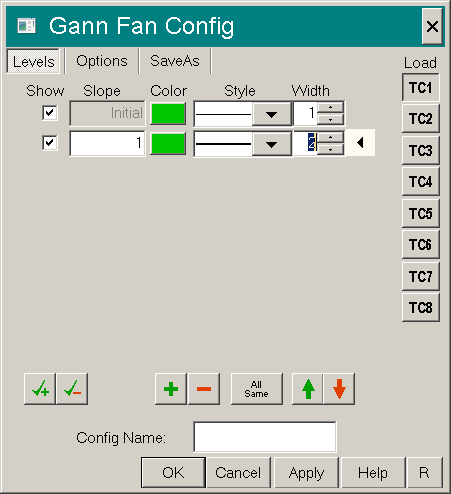{kind=link}
The Gann Fan tool can be used to draw one or more lines at certain angles specified by the Slope value for each fan line. For example, if you want to draw a 45 degree angle precisely every time, then configure one of the available Tool Configurations for the Gann Fan tool with a single line in addition to the Initial line and set the Slope to 1 (See image). When you draw a line with this Gann Fan tool configuration, it will be converted to a precise 45 degree angle line. The formula for slope is: Rise divided by Run. A 1 point rise in value and a change in time by 1 time period (equivalent to 1 chart bar), is a slope of 1 or a 45 degree angle.
Note that the angle is determined from the data in the chart, not from the visual display. Since the slope is determined by the difference in the number of ticks (Y) divided by the difference in the number of bars (X), a line that is defined as a 45 degree angle (slope of 1), will most likely not visually appear to be at 45 degrees due to the geometry of the chart.
Erasing
To erase a Gann Fan drawing, refer to the Erasing Chart Drawings section.
Fibonacci Fan / Percentage Fan / Speed Resistance Lines
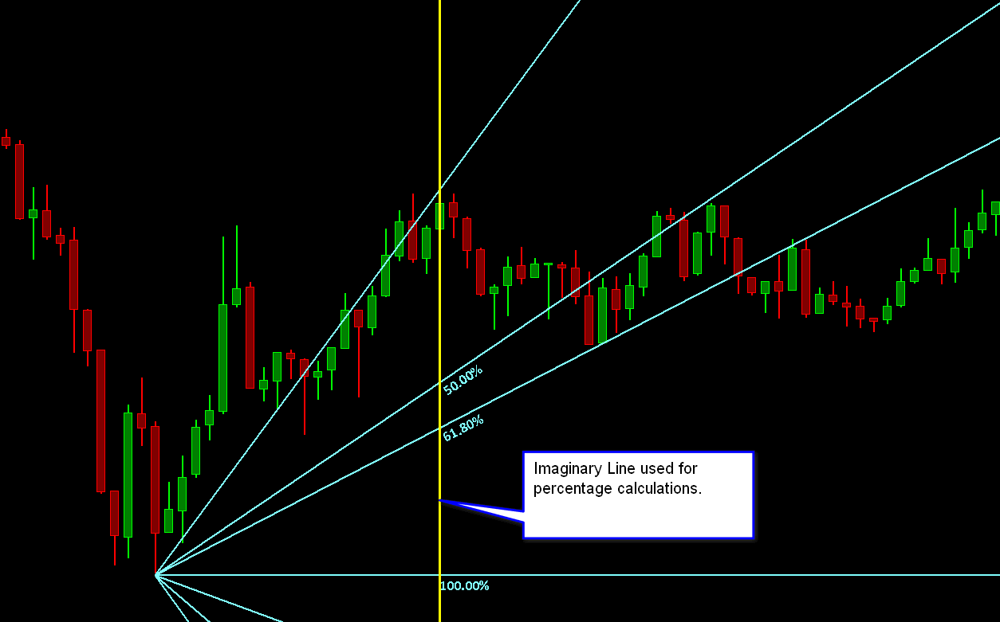{kind=link}
Description
The Fibonacci Fan tool draws multiple lines based upon the specified percentages. These percentage lines are relative to an imaginary vertical line from the end point of the drawn line down to the price level of the first point of the drawn line.
By default the Fibonacci Fan percentages are based on Fibonacci numbers. You are able to specify any percentages that you require. For example, specifying the percentages 66 and 33 will draw Speed Resistance lines.
Tool Usage
To select this tool, select Tools >> Fibonacci Fan on the menu. For additional methods of selecting this tool, refer to the Selecting Drawing Tools section.
Select the active Drawing Tool Configuration that you want to use by selecting Tools >> Current Tool Config >> Config # on the menu. For more information about Drawing Tool Configurations, refer to Using Multiple Drawing Tool Configurations.
To use this tool, left click with the pointer on the chart to start a line at a significant point. Move your pointer to where you want to end the line and left click again to set the endpoint. As you are drawing it, you will see the fan lines drawn at the same time.
Tool Configuration
The option for Extend on the Tools >> Tool Configs >> Fibonacci Fan Config window under the Options tab controls whether the lines for the Fibonacci Fan are extended beyond the location of the second point when being drawn. When this option is disabled, it is important to understand that the size of the Fibonacci Fan drawing should be at least 10 bars beyond the first point. This is necessary in order to be able to visualize the Fibonacci Fan when the Chart timeframe is changed.
Refer to the Drawing Tool Configuration section to configure the drawing tool.
Erasing
To erase a Fibonacci Fan drawing, refer to the Erasing Chart Drawings section.
Linear Regression
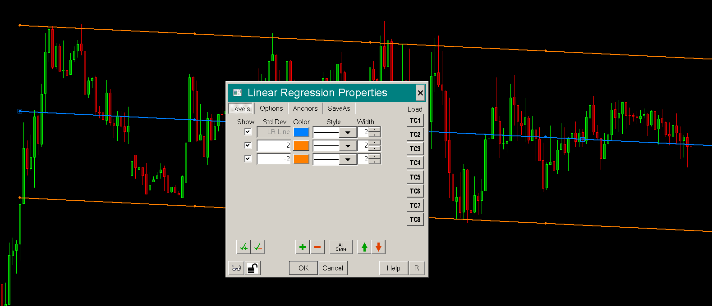{kind=link}
Description
The Linear Regression tool is used to draw a linear regression line across the specified bars with two parallel lines above and below it. The distance between these parallel lines and the linear regression line is two standard deviations, by default, from the linear regression line.
The lines of a Linear Regression Chart Drawing can be extended beyond the endpoints of the lines by enabling the Options >> Extend Forward option in the Tool Configuration window for the Linear Regression tool.
Tool Usage
To use this tool, select Tools >> Linear Regression on the menu. For additional methods of selecting this tool, refer to the Selecting Drawing Tools section.
Select the active Drawing Tool Configuration that you want to use by selecting Tools >> Current Tool Config >> Config # on the menu. For more information about Drawing Tool Configurations, refer to Using Multiple Drawing Tool Configurations.
Position your Pointer on the bar where you want to start the linear regression line and left click the Pointer. Move the Pointer to the last bar you want the line to end at and left click again.
Tool Configuration
Refer to the Drawing Tool Configuration section.
Erasing
To erase a Linear Regression drawing, refer to the Erasing Chart Drawings section.
Raff Regression Channel
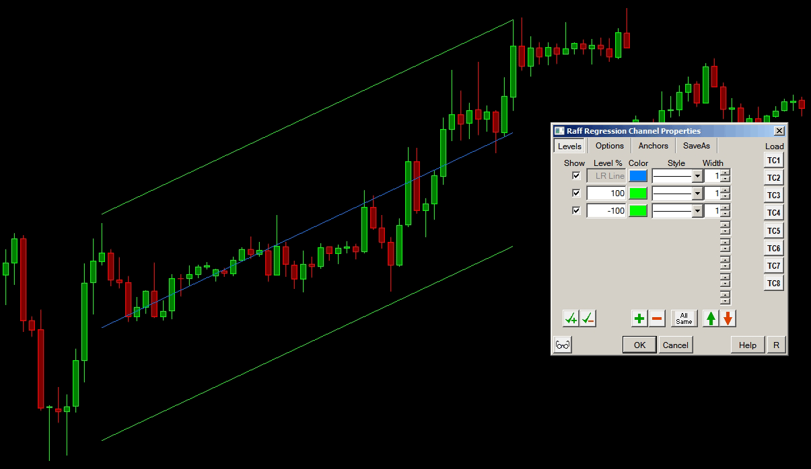{kind=link}
Description
The Raff Regression Channel tool is used to draw a linear regression line across the specified bars with two parallel lines above and below it. The distance between these parallel lines and the linear regression line is equal to the greatest distance of the highs and lows of the bars that the linear regression line is drawn across.
Tool Usage
To use this tool, select Tools >> Raff Regression Channel on the menu. For additional methods of selecting this tool, refer to the Selecting Drawing Tools section.
Select the active Drawing Tool Configuration that you want to use by selecting Tools >> Current Tool Config >> Config # on the menu. For more information about Drawing Tool Configurations, refer to Using Multiple Drawing Tool Configurations.
Position your Pointer on the bar where you want to start the Raff Regression Channel and press the left Pointer button. Move the Pointer to the last bar you want the channel to end at and left click again.
Tool Configuration
Refer to the Drawing Tool Configuration section.
Erasing
To erase a Raff Regression drawing, refer to the Erasing Chart Drawings section.
Arrow
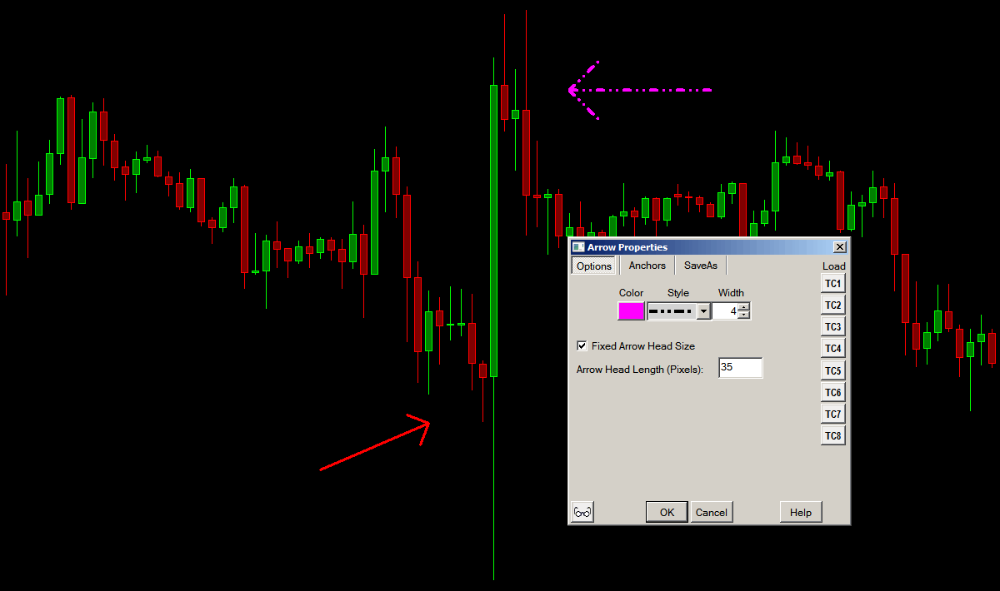{kind=link}
Description
The Arrow tool is for drawing an arrow on a chart. When drawing the arrow, the head of the arrow is always at the location of the Pointer.
Tool Usage
To use this tool, select Tools >> Arrow on the menu. For additional methods of selecting this tool, refer to the Selecting Drawing Tools section.
Select the active Drawing Tool Configuration that you want to use by selecting Tools >> Current Tool Config >> Config # on the menu. For more information about Drawing Tool Configurations, refer to Using Multiple Drawing Tool Configurations.
Position your Pointer where you want to start the arrow and left click the Pointer. Move the Pointer where you want the arrow to end and left click again.
Tool Configuration
Refer to the Drawing Tool Configuration section.
Erasing
To erase an Arrow drawing, refer to the Erasing Chart Drawings section.
Cycle
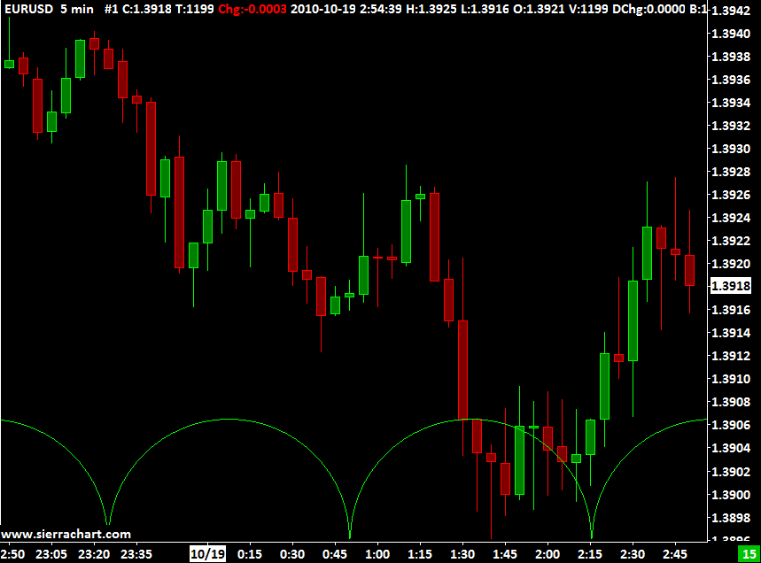{kind=link}
Description
The Cycle tool is used to draw repeated arcs that have a width set by the two points you select. These arcs repeat backward and forward from the two selected points. This is helpful to identify patterns that repeat regularly in time.
Each cycle is based on the bar count. Therefore, the cycle arcs may not repeat themselves at exactly the same time interval as originally drawn across. One solution to this is to enable Chart >> Chart Settings >> Bar Period >> Include Columns With No Data. This setting will insert bars where there is no data, and then the cycles will match up timewise. Alternatively, look at using the Time Expansion or Time Projection Drawing Tools, since these have an option to be time or bar based.
Tool Usage
To use this tool, select Tools >> Cycle on the menu. For additional methods of selecting this tool, refer to the Selecting Drawing Tools section.
Select the active Drawing Tool Configuration that you want to use by selecting Tools >> Current Tool Config >> Config # on the menu. For more information about Drawing Tool Configurations, refer to Using Multiple Drawing Tool Configurations.
Left click on the chart with your Pointer to set the first point. As you move the Pointer around, the distance in time (TD:) between the two points is displayed in the Window >> Tool Values Window and in the Window >> Compact Tool Values Window. This is useful to get a precise distance. For more information, refer to the Viewing Tool and Chart Data When Using Tools section.
Left click again to select the second point and complete the drawing.
To add or remove cycles from an existing Cycle drawing, right-click on the base of the cycle drawing (see image and description below) and select the Chart Drawing Properties command on the Chart Drawing Shortcut menu. If this command does not exist on the Chart Drawing Shortcut menu, it can be added - refer to Customizing Chart Drawing Shortcut Menu for instructions.
Change the number of cycles drawn using the Options >> Number of Cycles property. As they are added/removed, you can see the Cycle drawing update on the chart.
Tool Configuration
Refer to the Drawing Tool Configuration section to configure the drawing tool.
Selecting a Cycle Drawing for Moving, Adjusting or Erasing
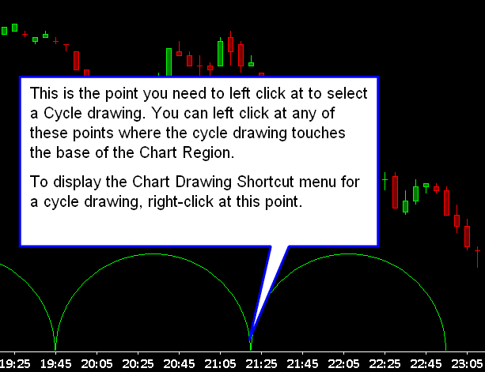{kind=link}
When you need to select a Cycle drawing to Move it, Adjust it, or Erase it - such as when you have selected Tools >> Move Drawing - you will then need to select the drawing by left clicking with your Pointer at any point of the base of the Cycle drawing where the Cycle lines touch the bottom of the Chart Region. Refer to the image above for more information.
Displaying the Chart Drawing Shortcut Menu For Cycle Drawings
When you need to display the Chart Drawing Shortcut menu for a Cycle drawing, in order to select one of the commands, you need to right-click with your pointer at any point of the base of the Cycle drawing where the Cycle lines touch the bottom of the Chart Region. Refer to the image above for more information.
Erasing
To erase a Cycle drawing, refer to the Erasing Chart Drawings section. When you need to select a Cycle drawing to erase it, you need to left click with your pointer at any point of the base of the Cycle drawing where the Cycle lines touch the bottom of the Chart Region. Refer to the image above for more information.
Time Expansion
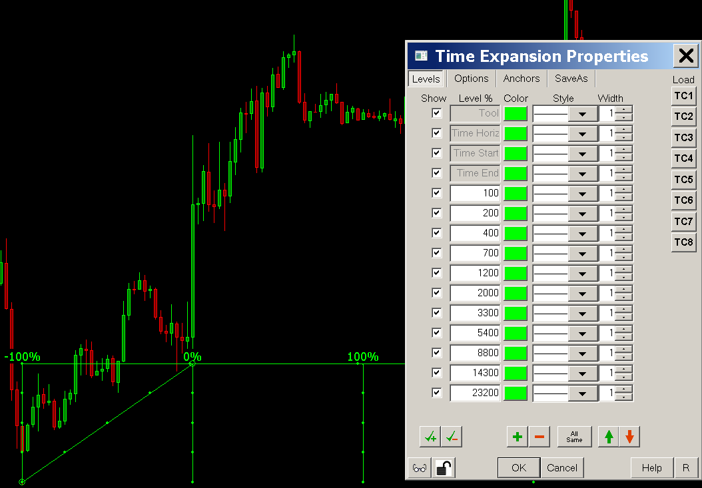{kind=link}
Description
The Time Expansion tool is used to draw vertical lines at time or bar counts forward from a point, based upon the time or bar span between two points.
This tool marks two points on the chart. There are vertical lines at point A and B. The distance between point A and B represents the time interval as an actual time or bar count.
The third vertical line is drawn relative to point B at the first specified percentage of the time or bar count span between points A and B. The remaining vertical lines are drawn in the same way.
By default the percentages are based on the Fibonacci number sequence. These percentages can be changed to any values you want through the tool's Configuration window.
Tool Usage
To use this tool, select Tools >> Time Expansion on the menu. For additional methods of selecting this tool, refer to the Selecting Drawing Tools section.
Select the active Drawing Tool Configuration that you want to use by selecting Tools >> Current Tool Config >> Config # on the menu. For more information about Drawing Tool Configurations, refer to Using Multiple Drawing Tool Configurations.
Position your pointer on the bar where you want to start the time interval and left click the pointer. Move the pointer to the last bar where you want to end the time interval and left click again.
Tool Configuration
Refer to the Drawing Tool Configuration section.
Erasing
To erase a Time Expansion drawing, refer to the Erasing Chart Drawings section.
Marking Bars Certain Bar Counts Forward
The Time Expansion tool can be used to mark bars which are the specified number of bars forward from a particular point.
{kind=link}
To use the tool in this way, follow these instructions:
- Select the Time Expansion Tool Configuration Window by selecting Global Settings >> Tool Configs >> Time Expansion.
- Select the appropriate Tool Configuration number that you want to configure. Each drawing tool has multiple tool configurations. Refer to Using Multiple Drawing Tool Configurations.
- Select the Options tab.
- Set the Top and Bottom Labels to Num Bars or None.
- Set Time Analysis Based On to Bars.
- Select the Levels tab.
- Set the Level % values to percentages which correspond to bar counts where you want the vertical lines drawn. Every 100% equals one bar forward from point B. Therefore, if you want vertical lines drawn at 2, 3, 5 and 10 bars forward from point B, then enter the following percentages: 200, 300, 500, 1000.
- Press OK to close the Time Expansion Tool Configuration window.
- Refer to the Tool Usage section above to use this drawing tool. To draw vertical lines at the specified bar counts forward from a particular point you need to position your Pointer one bar prior to where you want to start the bar count from, then left click the pointer to establish point A. Move the pointer one bar forward and left click again to establish point B.
- You will now see vertical bars on the chart numbered according to the bar count forward from point B.
Time Projection
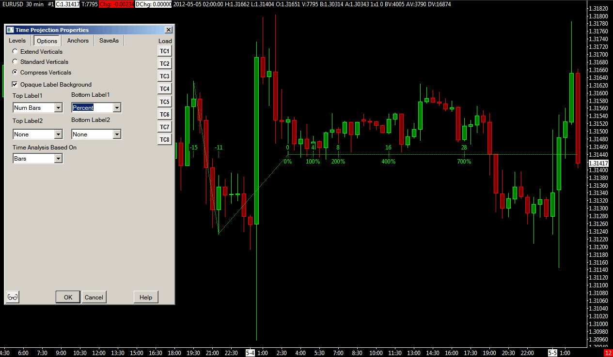{kind=link}
Description
The Time Projection tool is used to draw vertical time projection lines on a chart.
The drawing consists of three points. The distance between point A and B represents the time interval. From point C, vertical lines are drawn based upon a percentage of the distance from point A and B. By default the percentages are based on the Fibonacci number sequence. These percentages can be changed to any values you want through the tool's Configuration window.
Tool Usage
To use this tool, select Tools >> Time Projection on the menu. For additional methods of selecting this tool, refer to the Selecting Drawing Tools section.
Select the active Drawing Tool Configuration that you want to use by selecting Tools >> Current Tool Config >> Config # on the menu. For more information about Drawing Tool Configurations, refer to Using Multiple Drawing Tool Configurations.
Position your Pointer on the bar where you want to start the time interval and left click the pointer, move the pointer to the bar where you want to end the time interval and left click, then move the pointer to the third point to set where the projection lines begin and left click again to complete the drawing.
Tool Configuration
Refer to the Drawing Tool Configuration section.
Erasing
To erase a Time Projection drawing, refer to the Erasing Chart Drawings section.
Zig-Zag
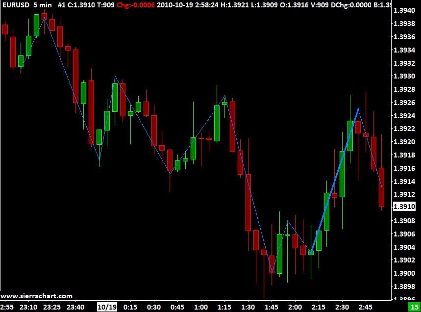{kind=link}
Description
The Zig-Zag tool is used to draw multiple lines that have connected endpoints.
Tool Usage
To use this tool, select Tools >> Zig-Zag on the menu. For additional methods of selecting this tool, refer to the Selecting Drawing Tools section.
Select the active Drawing Tool Configuration that you want to use by selecting Tools >> Current Tool Config >> Config # on the menu. For more information about Drawing Tool Configurations, refer to Using Multiple Drawing Tool Configurations.
Position your Pointer where you want to start the Zig-Zag line and left click the Pointer. Position the Pointer at the next point and left click the Pointer again to complete that segment. Repeat until you have drawn all required lines, then right click the Pointer to end the drawing.
Tool Configuration
Refer to the Drawing Tool Configuration section to configure the drawing tool.
Erasing
To erase a Zig-Zag drawing, refer to the Erasing Chart Drawings section.
Gann Grid
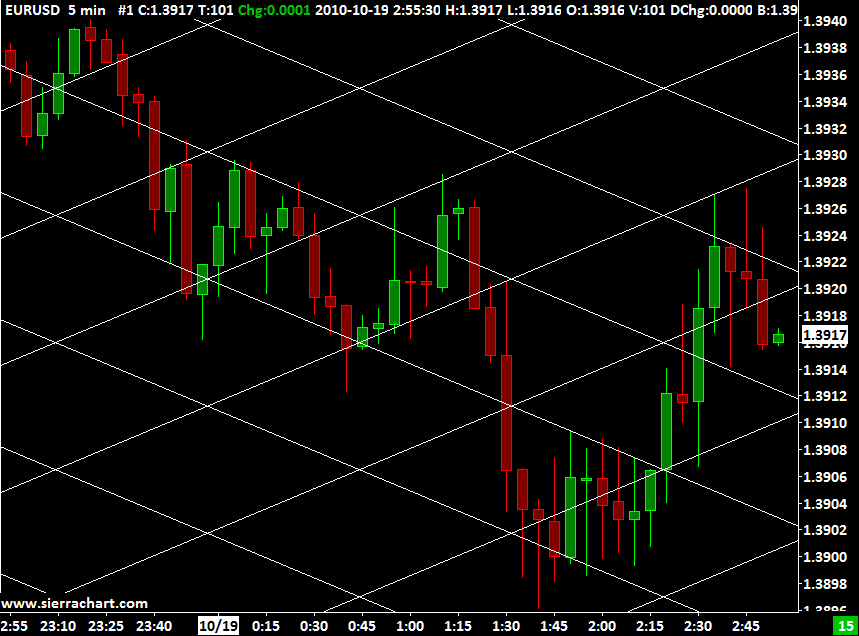{kind=link}
Description
The Gann Grid tool is used to draw a grid of lines that are at a specific angle. The distance between the lines is controlled as you draw the grid.
Tool Usage
To use this tool, select Tools >> Gann Grid on the menu. For additional methods of selecting this tool, refer to the Selecting Drawing Tools section.
Select the active Drawing Tool Configuration that you want to use by selecting Tools >> Current Tool Config >> Config # on the menu. For more information about Drawing Tool Configurations, refer to Using Multiple Drawing Tool Configurations.
To start the drawing, left click with your Pointer on the chart to initiate the Gann Grid drawing.
The Gann Grid operates in one of several methods based on how the Value Increment Per Bar Set From setting is configured in the Drawing Tool Configuration window for the Gann Grid tool. Refer to the Common Tool Configuration Settings and Chart Drawing Properties for Gann Grid and Gann Fan section for the possible choices.
Move your Pointer until you get the desired distance between the grid lines and the desired angle, then left click with your Pointer again to finish the Gann Grid. The second left click with your Pointer sets the width of the Gann Grid.
Tool Configuration
Refer to the Drawing Tool Configuration section to configure the drawing tool.
Erasing
To erase a Gann Grid drawing, refer to the Erasing Chart Drawings section.
Pitchfork (Median Line Tool) | Pitchfork - Schiff Median | Pitchfork - Modified Schiff
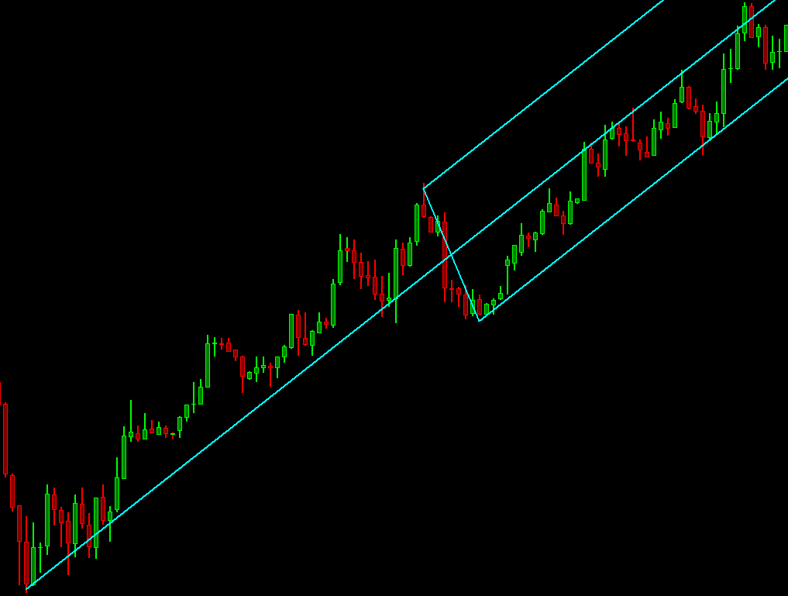{kind=link}
Description
There are 3 Pitchfork Tools: Pitchfork, Pitchfork - Schiff Median, and Pitchfork - Modified Schiff. These tools are used in order to draw a central trend line along with upper and lower boundary lines.
All Pitchfork drawings are drawn by selecting 3 points on a chart. The first point is a major peak or trough on the chart. The second and third points are at a major peak and trough to the right of the first point. These are points A, B, and C respectively.
Point A represents the starting point of the median line. This median line is drawn between the B and C points. This line is also known as the handle of the Pitchfork drawing. The differences in the three different pitchfork tools is how it calculates the handle's (or Median Line's) point of rotation.
The standard Pitchfork (sometimes referred to as a Median Line Tool or a Andrews Pitchfork) fixes the Handle point of rotation as the given point A that is entered with the initial Pointer click.
The Pitchfork - Schiff Median fixes the Handle point of rotation as the same X (time) position as Point A, but then uses the average of the Y (Price) values for Points A and B. Therefore, the Handle point of rotation X and Y coordinates are (Point A X-Value, (Point A Y-Value + Point B Y-Value)/2).
The Pitchfork - Modified Schiff fixes the Handle point of rotation as the average of points A and B in both X and Y. Therefore, the Handle point of rotation X and Y coordinates are ((Point A X-Value + Point B X-Value)/2, (Point A Y-Value + Point B Y-Value)/2).
Tool Usage
To use any of these pitchfork tools, select Tools >> Pitchfork | Pitchfork - Schiff Median | Pitchfork - Modified Schiff on the menu.
Select the active Drawing Tool Configuration that you want to use by selecting Tools >> Current Tool Config >> Config # on the menu. For more information about Drawing Tool Configurations, refer to Using Multiple Drawing Tool Configurations.
Position your pointer to place Point A and left-click to place the point. Move the pointer to place Point B, and left-click a second time to place this point. Move the Pointer to place Point C and left-click a third time to finish the drawing.
Additional parallel lines can be drawn above and below the second and third lines which start at the B and C points. These are configured through the Levels tab on the Configuration/Properties window for the Pitchfork tools.
Adjusting the Points
You have the ability to adjust any of the three points (A, B, C) of a Pitchfork drawing. To do this, refer to the Adjust Drawing section.
Changing the Type of an Existing Pitchfork Drawing
You have the ability to change the type of an existing pitchfork drawing. For example, you can change from a normal Pitchfork drawing to a Pitchfork - Modified Schiff. To do this, follow these steps.
- Right-click on one of the lines of an existing Pitchfork drawing. This can be any type of Pitchfork drawing.
- Select Chart Drawing Properties on the displayed menu (if Chart Drawing Properties is not displayed, refer to Customizing Chart Drawing Shortcut Menu for instructions to have it added).
- On the Chart Drawing Properties window, select the Options tab.
- Choose the Pitchfork type.
- Press OK.
Erasing
To erase a Pitchfork drawing, refer to the Erasing Chart Drawings section.
Rectangle | Extending Rectangle | Ellipse | Triangle
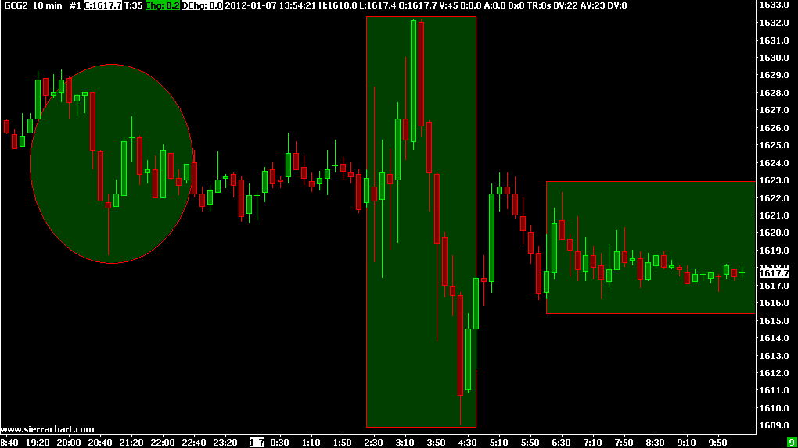{kind=link}
Description
These tools are used to draw a Rectangle, an Extending Rectangle, an Ellipse, or a Triangle on a chart.
An Extending Rectangle is a rectangle that extends either all the way to the right or left of the graph (depending on the direction in which it is drawn).
Tool Usage
To use use one of these tools, select Tools >> Rectangle | Extending Rectangle | Ellipse | Triangle on the menu. For additional methods of selecting this tool, refer to the Selecting Drawing Tools section.
Select the active Drawing Tool Configuration that you want to use by selecting Tools >> Current Tool Config >> Config # on the menu. For more information about Drawing Tool Configurations, refer to Using Multiple Drawing Tool Configurations.
Left click with your Pointer on the chart to set the first point, move your Pointer until you get the desired region and then left click again. For the Rectangle, Extending Rectangle and Ellipse, this will close the drawing.
In the case of the Triangle Drawing Tool, three points are required. Using the Pointer, left-click to set the first corner of the triangle. Move the Pointer to the desired location for the second corner of the triangle and left-click again. Move the Pointer to the desired location of the third corner and left-click again to finish the drawing.
Tool Configuration
Refer to the Drawing Tool Configuration section to configure the drawing tool.
Erasing
To erase a Rectangle, Extending Rectangle, Ellipse, or Triangle Chart Drawing, refer to the Erasing Chart Drawings section.
Additional Notes
When drawing an ellipse drawing and you draw it as a perfect circle, if you want it to maintain that same shape, it is necessary to use fixed timeframe chart bars, therefore not using Number of Trades, Volume, Range, Reversal, Renko, Delta Volume, Price Change, Point and Figure Bars, do not change the timeframe of the chart bars, or change the bar spacing.
Draw Volume Profile
For information on the Draw Volume Profile tool, see the Draw Volume Profile page.
Erase All Drawn Volume Profiles
Description
The Erase All Drawn Volume Profiles tool is used to remove all Volume Profiles from the graph that were created using the Draw Volume Profile tool. This does not remove any Volume by Price studies that were addded through the Analysis >> Studies window.
Tool Usage
Select the menu option Tools >> Erase All Drawn Volume Profiles to remove all drawn Volume Profiles.
Marker
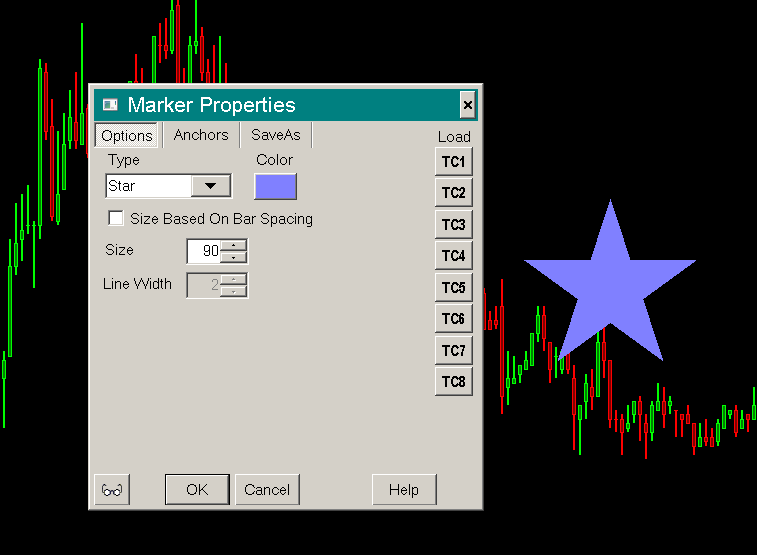{kind=link}
Description
The Marker tool is used to display a marker on the chart. Point, Dash, Square, Star, Plus, X, Arrow, Triangle, and Diamond Markers are supported.
In the case of a Point marker drawing, the Size setting in the Drawing tool configuration specifies the half-size of the ellipse. So the diameter will be twice the size. When Size Based on Bar Spacing is enabled, then the size will be based on the chart bar spacing.
Tool Usage
To use this tool, select Tools >> Marker on the menu. For additional methods of selecting this tool, refer to the Selecting Drawing Tools section.
Select the active Drawing Tool Configuration that you want to use by selecting Tools >> Current Tool Config >> Config # on the menu. For more information about Drawing Tool Configurations, refer to Using Multiple Drawing Tool Configurations.
Position your Pointer to where you want to put the marker and left-click the Pointer to place the marker.
Tool Configuration
Refer to the Drawing Tool Configuration section to configure the drawing tool.
Erasing
To erase a Marker drawing, refer to the Erasing Chart Drawings section.
Reward/Risk
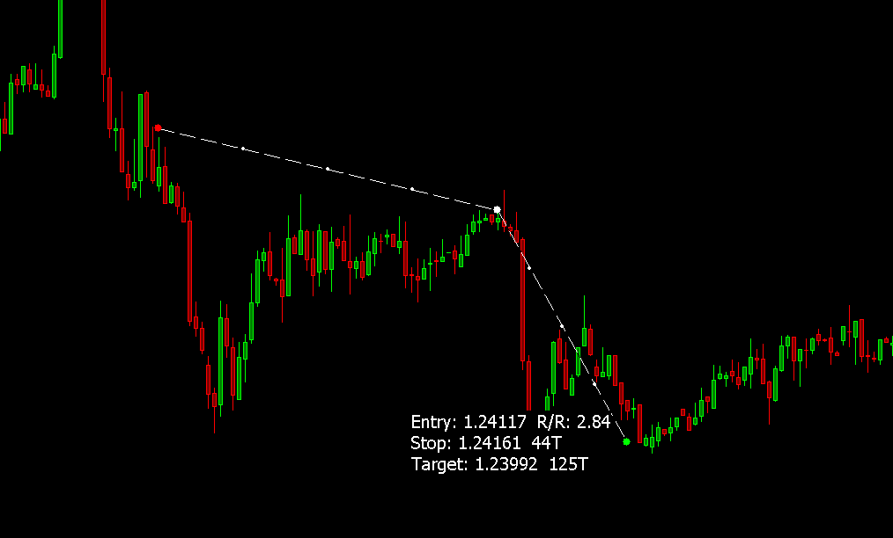{kind=link}
Description
The Reward/Risk tool, is designed to indicate the Reward and Risk based upon a Stop price, Entry price, and Target price. A Reward/Risk ratio of 1 means that based upon the selected prices, the potential loss will equal the potential profit. A Reward/Risk ratio of 3 means that based upon the selected prices, the potential profit will be 3 times the potential loss.
The calculation of the Currency Value for the Reward/Risk tool takes into account the current Quantity that is set for the chart. For more information, refer to the Reward/Risk Configuration.
Tool Usage
To use this tool, select Tools >> More Tools >> Reward/Risk on the menu. For additional methods of selecting this tool, refer to the Selecting Drawing Tools section.
Select the active Drawing Tool Configuration that you want to use by selecting Tools >> Current Tool Config >> Config # on the menu. For more information about Drawing Tool Configurations, refer to Using Multiple Drawing Tool Configurations.
Move the Pointer to the desired Stop price and left-click the Pointer. Move the Pointer to the desired Entry price and left-click. Move the Pointer to the desired Target price and left-click to complete the drawing.
The text displayed beside the Target price indicates the values for the Entry, Stop, and Target locations. The Reward/Risk ratio will be displayed after the Entry price text.
Tool Configuration
Refer to the Drawing Tool Configuration section to configure the drawing tool.
Erasing
To erase a Reward/Risk drawing, refer to the Erasing Chart Drawings section.
Swing Marker
Description
The Swing Marker tool allows you to place information about a bar and its relationship with the last selected bar on a graph. The tool can be used multiple times in one session, continually updating the inforamtion for the most recent bar with the previous bar that was selected. The available options to display include: Date, Time, Price, Price Difference, Tick Difference, Percent Change, and Number of Bars.
Tool Usage
To use this tool, select Tools >> More Tools >> Swing Marker on the menu. For additional methods of selecting this tool, refer to the Selecting Drawing Tools section.
Select the active Drawing Tool Configuration that you want to use by selecting Tools >> Current Tool Config >> Config # on the menu. For more information about Drawing Tool Configurations, refer to Using Multiple Drawing Tool Configurations.
Move the Pointer to the first bar for which you want information drawn, and left-click to have the information displayed on the graph (since this is the first point, information that is relative to another bar (such as Price Difference) is not displayed for this bar). Move the Pointer to another bar (the tool can be used in either direction from the first selected bar) and left-click to have the information displayed on the graph for the second bar.
Tool Configuration
Refer to the Drawing Tool Configuration section to configure the drawing tool.
Erasing
To erase a Swing Marker drawing, refer to the Erasing Chart Drawings section.
Date Marker
Description
The Date Marker tool allows you to place date information on the graph about a bar.
Tool Usage
To use this tool, select Tools >> More Tools >> Date Marker on the menu. For additional methods of selecting this tool, refer to the Selecting Drawing Tools section.
Select the active Drawing Tool Configuration that you want to use by selecting Tools >> Current Tool Config >> Config # on the menu. For more information about Drawing Tool Configurations, refer to Using Multiple Drawing Tool Configurations.
Move the Pointer to the bar for which you want the date information drawn on the graph, and left-click to have the information drawn on the graph.
Tool Configuration
Refer to the Drawing Tool Configuration section to configure the drawing tool.
Erasing
To erase a Date Marker drawing, refer to the Erasing Chart Drawings section.
OHLC Ray
Erasing
The OHLC Ray drawing tool allows you to draw a horizontal Ray line from the High, Low, Close, or Open of a bar to the right side of the graph.
The tool also draws information on the right side of the chart for the Price and Date/Time of the bar. The specific information that is displayed is configurable in the OHLC Ray Configuration window (see Tool Configuration below).
If two or more of the bar levels are at the same location (same price), then a selection is automatically made on which one to display based on the following hierarchy: High, Low, Close, then Open.
When Adjust Tool Values to Tick Size in Chart >> Chart Settings is enabled, then when using this drawing tool, the Open, High, Low or Last values of the chart bar are rounded to the chart Tick Size setting. Therefore, the values you see could be different than the actual values. The solution to this is to uncheck Adjust Tool Values to Tick Size in Chart >> Chart Settings.
Tool Usage
To use this tool, select Tools >> More Tools >> OHLC Ray on the menu. For additional methods of selecting this tool, refer to the Selecting Drawing Tools section.
Select the active Drawing Tool Configuration that you want to use by selecting Tools >> Current Tool Config >> Config # on the menu. For more information about Drawing Tool Configurations, refer to Using Multiple Drawing Tool Configurations.
Move the Pointer to the High, Low, Close, or Open of the bar for which you want to draw the ray and information, and left-click to draw the ray.
Tool Configuration
Refer to the Drawing Tool Configuration section to configure the drawing tool.
Erasing
To erase a Date Marker drawing, refer to the Erasing Chart Drawings section.
Custom Text Drawing Control Bar Buttons
Description
Control Bar buttons can be added which can place specific text on the chart when clicking the left Pointer button on the chart.
Tool Usage
To use one of these Control Bar buttons, press the Custom Text Drawing tool button on the Control Bar which has been configured and added to the Control Bar, then left-click with the Pointer on the Graph where you want to draw the text.
Configuration
This tool is configured through Global Settings >> Customize Control Bars >> Control Bar # >> Available Control Bar Commands >> Tools - Custom Text Drawing.
Add one or more of these Custom Text Drawing tool buttons to the Control Bar. Press the Set Custom Text button to configure the text that will be drawn.
There are various options which can be configured for each Custom Text Drawing tool button. These are found by selecting the Set Custom Text... button on the Customize Control Bar # window. They are as follows:
- Custom Text Tool: This displays the Custom Text Drawing tool being configured.
- Drawing Text: The text to be drawn on the chart when using the tool.
- Text Color: The color of the text to be drawn on the chart.
- Reverse Color: Uses the color defined in Text Color as the color of a box that surrounds the text which is then drawn in Black.
- Font: The font of the text to be drawn on the chart.
- Use Global Font: Uses the Global Font as the font to use for this Custom Text Tool.
- Next Text Tool: The next Custom Text Drawing tool to be selected after the one selected on the Control Bar has been used.
{kind=link}
Shortcuts for Custom Text Drawings
Keyboard shortcuts can be added for all Custom Text Drawing tool configurations on the Control Bar. Additionally there are keyboard shortcuts for Next/Previous Custom Text Drawing configurations.
To configure the keyboard shortcuts, select Global Settings >> Customize Keyboard Shortcuts.
The Next Custom Text Drawing command will go to the next set Custom Text Drawing tool configuration specified through Next Text Tool in the Custom Text Drawing Tool Settings window. Otherwise, it will follow a linear advancement through the defined Custom Text Drawing tool configurations.
The Previous Custom Text Drawing command will go to the previous set Custom Text Drawing tool configuration specified through Next Text Tool in the Custom Text Drawing Tool Settings window. If there are multiple Next Text Tool settings pointing to the current Custom Text Drawing tool configuration, the first found Next Text Tool is used as a reference. If no specified Next Text Tool configuration is found, then this command will move back through the Custom Text Drawing tool configurations in reverse order.
Erasing
To erase a Custom Text drawing, refer to the Erasing Chart Drawings section.
Definition of Chart Drawing
The definition of a Chart Drawing in Sierra Chart, is an object like a Line or Ray which is drawn on a chart with a Drawing Tool selected through the Tools menu.
Selecting Drawing Tools
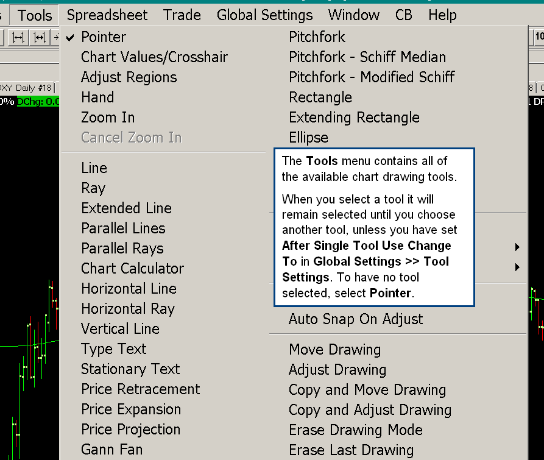{kind=link}
To select a Chart Drawing tool to use, select Tools on the menu and the specific Tool on the menu you would like to use. Additionally, there are several additional ways to select a tool:
- Right-click with your Pointer over the chart, and select the Tool on the chart shortcut menu. You will need to first add the Tools that you want to this chart shortcut menu if they are not already listed. To do this, select Global Settings >> Customize Chart Shortcut Menu.
- Use the keyboard shortcut. The keyboard shortcuts are shown on the Tools menu after the drawing tool commands.
- Use the corresponding Control Bar button. By default the Control Bar is displayed below the main Sierra Chart menu. You can detach it and move it anywhere. To add, hide or reorder the Control Bar buttons, select Global Settings >> Customize Control Bars >> Control Bar 1-8 on the menu. A Control Bar can be made visible by selecting Window >> Control Bars >> Control Bar 1-8.
A tool will remain selected until you select a different tool from the Tools menu, use one of the other methods to select a tool, or if you have the option Global Settings >> Tool Settings >> After Single Tool Use Change To set to something other than None.
To have no tool active, select Tools >> Pointer on the menu.
When a drawing tool is selected through the Tools menu, it will become active whenever you left click your Pointer on the chart. This may cause a problem any time you interact with the chart with a left click if you do not intend to actually use the tool.
There are two solutions to this. Select Tools >> Pointer to switch to the default pointer which is not an actual tool and does not perform a drawing function. Additionally, refer to Using a Tool One Time, and Switching to the Default Tool, to use the feature to use a drawing tool one time and switch to the default drawing tool which can be the Pointer.
Creating Control Bar Buttons which Select Drawing Tool and Drawing Tool Configuration in One Step
It is supported to configure a Control Bar button which consists of selecting a particular Drawing Tool and Drawing Tool Configuration in one step. Follow these steps to accomplish this:
- Select Global Settings >> Customize Control Bars >> Control Bar #.
- In the Available Control Bar Commands list expand Tools - Custom Drawing Tool.
- Select one of the Custom Drawing Tool # commands and press the Add button.
- Make sure the Custom Drawing Tool # command is highlighted in the Selected Control Bar Commands list and press the Set Custom Tool button.
- Set the Drawing Tool that you want to switch to when selecting the Control Bar button. Refer to the image below.
- Set the Drawing Config that you want to use for the particular Drawing Tool. Refer to the image below.
Each Drawing Tool supports 24 different configurations. Therefore, you can preset a configuration for a Drawing Tool and when selecting the particular Control Bar button being configured with these steps, that configuration will apply when using the drawing tool.
Refer to Drawing Tool Configuration to set a Drawing Tool configuration. If this is not already done, it can be done after completing these steps. - Press OK. Press OK.
- By default Custom Drawing Tool buttons have the caption CDT# where the # is the Custom Drawing Tool number. To customize the caption or the description that displays when you hover over the button with your Pointer, follow the instructions in the Control Bar Button Properties section.
- When you select the CDT# button on the Control Bar that you have just added, the Drawing Tool be will be selected and the Drawing Configuration for the Drawing Tool will be selected all at the same time.
{kind=link}
Note that when using a Control Bar button for a Custom Drawing Tool, the selected Drawing Tool Configuration number for that tool is always set to the Config # that was selected when the Control Bar Button was created.
This is different from how the selection of a Drawing Tool Configuration is performed when selecting only the Drawing Tool itself. In the case where only the Drawing Tool is selected, then the previously selected Drawing Tool Configuration number for that drawing tool will be automatically selected. For example, when using the Extending Rectangle tool with Tools >> Current Tool Config >> Config 9, and then switching to using the Line tool with Tools >> Current Tool Config >> Config 1, and then changing back to the Extending Rectangle tool, the selected Current Tool Config for the Extending Rectangle will be Config 9.
If, however, the Control Bar Button for a Custom Drawing Tool for an Extending Rectangle is selected in which Config 3 was configured as part of the button, then Config 3 will be selected for that Drawing Tool and for any selection of the Extending Rectangle going forward until specifically changed.
Keyboard Shortcuts for Custom Drawing Tool Buttons
To set a keyboard shortcut for a Custom Drawing Tool button, follow the instructions below.
- Select Global Settings >> Customize Keyboard Shortcuts.
- In the Commands list expand the Custom Drawing Tool Keyboard Shortcuts list.
- Select the particular Custom Drawing Tool number that you want to set a keyboard shortcut for.
- For further details refer to the Customize Keyboard Shortcuts documentation.
Drawing Tool Configuration
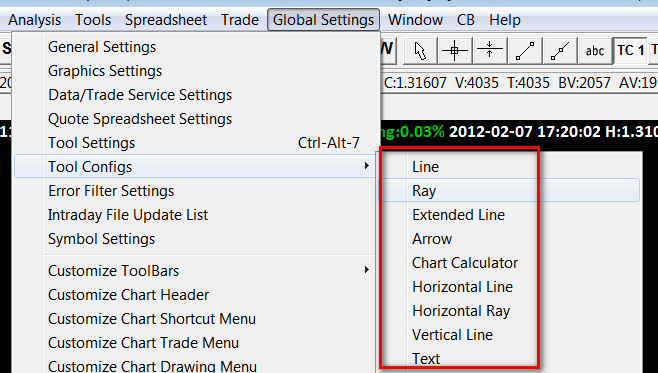{kind=link}
To configure the default settings for a Drawing Tool, select Global Settings >> Tool Configs >> [Tool Name] Config on the menu.
The Drawing Tool Configuration windows may be slightly different depending on whether you are setting the default configuration for the Drawing Tool or you are changing the Properties for an existing drawing on the chart.
When setting the default configuration for a Drawing Tool, there may be less settings available for the Drawing Tool as compared to when changing the Properties for an existing Chart Drawing. The same Tool Configuration window is used in each case other than possibly less settings in the case of when setting the default tool configuration.
If an item described below does not display when editing the default Drawing Tool Configuration, then the setting is one that will display when the Chart Drawing Properties is selected for that drawing.
Additionally, some items may not be available for modification when editing the Drawing Tool Configuration, but will become available when editing the Chart Drawing Properties.
Changes to the default Tool Configurations do not affect existing Chart Drawings you have drawn on a chart, it only affects drawings made after the change to the defaults.
To change the configuration for existing Chart Drawings already drawn, you need to right-click on a Chart Drawing and select Chart Drawing Properties on the Chart Shortcut Menu displayed. If you do not see the Chart Drawing Properties command listed on the Chart Shortcut Menu, then you need to add it to the Chart Shortcut Menu. To do this, refer to the Customizing Chart Drawing Shortcut Menu section.
Each drawing tool has 24 different configurations. For detailed instructions on how to set each of these different configurations, refer to Using Multiple Drawing Tool Configurations.
It is also supported to specify the default Alert settings for a particular Drawing Tool configuration number. To set these settings, press the Alert button on the Tool Configuration window.
The following are descriptions of the settings for each drawing tool. Many of the Drawing Tools share the same settings - these are described in the Common Tool Configuration areas.
When you are done updating a configuration, press the Save button on the Configuration/Properties window to save your changes.
Common Tool Configuration Settings and Chart Drawing Properties
- Levels >> Color: This displays and sets the color for the level line.
- Levels >> Style: This displays and sets the line style for the level line.
- Levels >> Width: This displays and sets the line width in pixels for the level line.
- Options >> Color: This displays and sets the color for the line.
- Options >> Style: This displays and sets the line style for the line.
- Options >> Width: This displays and sets the line width in pixels for the line.
- Options >> Outline >> Color: This displays and sets the color for the line.
- Options >> Outline >> Style: This displays and sets the line style for the line.
- Options >> Outline >> Width: This displays and sets the line width in pixels for the line.
- Levels >> Show All: This is the Show All Levels selection. When this option is selected, all the Levels are set to display. Conversely, if this is selected off, then all of the levels are set to not display.
- Levels >> : This is the Add level button. When this button is pressed, a new level will be added to the list. When you click on the right side of a level just after the Width setting, or in any of the level settings options, it is defined as the selected level. The new level will be added before the selected level.
- Levels >> : This is the Remove level button. When this button is pressed, the selected level will be removed from the list. When you click on the right side of a level just after the Width setting, or in any of the level settings options, it is defined as the selected level. This selected level will be removed.
- Levels >> : This is the Move Level Up button. When this button is pressed, the selected level will be moved up the list. When you click on the right side of a level just after the Width setting, or in any of the level settings options, it is defined as the selected level that moves up.
- Levels >> 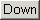: This is the Move Level Down button. When this button is pressed, the selected level will be moved down the list. When you click on the right side of a level just after the Width setting, or in any of the level settings options, it is defined as the selected level that moves down.
- Levels >> : When this button is pressed in, then all of the retracement/extension level lines will use the same Color and Width as the Tool (first level of the list) level.
- Levels >> : This is the reset button. When you press this button all of the levels will be set to the default settings. After resetting them you can use any percentages that you require.
- Labels >> Copy Config Name To Text: When this option is enabled, the configuration name (Config Name) given to the active Tool Configuration you are using for the Drawing Tool that supports this option, will be copied to the Text for that Chart Drawing and will be displayed with that Chart Drawing.
For more information about Config Name, refer to Using Multiple Drawing Tool Configurations.
This option can only be enabled through the Drawing Tool Configuration window through Global Settings >> Tool Configs>> [Tool Name]. It cannot be changed through the Chart Drawing Properties window for an existing Chart Drawing. Additionally, changing the Config Name of a Drawing Tool Configuration will not change the Text on existing Chart Drawings.
There are several Chart Drawings that support setting Text on them. For instructions to set the text on them, refer to Modify Text. - : This button hides the Chart Drawing when it is in a Show state.
- 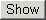: This button shows the Chart Drawing when it is in a Hide state.
- 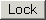: This button locks the Chart Drawing when it is in an Unlocked state. Locked drawings cannot be modified or directly deleted without additional intervention.
- : This button unlocks the Chart Drawing when it is in a Locked state. Unlocked drawings can be modified or deleted without additional intervention.
- : This button opens the Chart Drawing Alert window.
- Anchors >> Date-Time: In the case when when you have opened the Chart Drawing Properties for a Chart Drawing, then you will have an Anchors tab on the Chart Drawing Properties window. This displays the Date-Time individually for points A1-A2, A-B, or A-B-C of the Chart Drawing.
These are the anchor points of the Chart Drawing where you begin and end the Chart Drawing with your Pointer when drawing it. These Date-Times can be modified. - Anchors >> Value: In the case when when you have opened the Chart Drawing Properties for a Chart Drawing, then you will have an Anchors tab on the Chart Drawing Properties window. This displays the values individually for points A1-A2, A-B, or A-B-C of the Chart Drawing.
These are the anchor points of the Chart Drawing where you begin and end the Chart Drawing with your Pointer when drawing it. These Values can be modified. - Anchors >>
: Swaps the values of the anchor point Date-Time and Value coordinates.
- Anchors >>
: Flips drawing vertically. Supported drawings include pitchforks, lines, fans, and parallel lines.
- Anchors >>
: Flips drawing horizontally. Supported drawings include pitchforks, lines, fans, and parallel lines.
Common Tool Configuration Settings and Chart Drawing Properties for Gann Grid and Gann Fan
The following Tool Configuration Settings and Chart Drawing Properties apply to the Gann Grid and Gann Fan drawing tools.
- Options >> Value Increment Per Bar Set From >> Second Point: In this mode, the second left click with your Pointer which sets the second anchor point also sets the Value Increment Per Bar for this Chart Drawing and is then stored with this Chart Drawing. Modifications to the Chart Drawing will then use the Value Increment Per Bar that is stored with the Chart Drawing, and will not use the Chart >> Chart Settings >> Value Increment per Bar in Ticks (Price Unit per Bar in Ticks) setting.
- Options >> Value Increment Per Bar Set From >> From Tool: In this mode, you will be prompted for the Value Increment per Bar in Ticks when you first left-click the Pointer to begin the drawing. The initial value shown is set from the value in the Tool Configuration window for the drawing tool. Modifications to the Chart Drawing will then use the Value Increment Per Bar that is stored with the Chart Drawing, and will not use the Chart >> Chart Settings >> Value Increment per Bar in Ticks (Price Unit per Bar in Ticks) setting or the value on the Tool Configuration window.
- Options >> Value Increment Per Bar Set From >> From Chart Setting: In this mode, you will be prompted for the Value Increment per Bar in Ticks when you first left-click the Pointer to begin the drawing. The initial value shown is set from the value specified in Chart >> Chart Settings >> Chart Drawings >> Value Increment per Bar in Ticks (Price Unit per Bar in Ticks). The Chart Settings value is then updated and is used for the Chart Drawing.
For complete details about what value you should enter for Value Increment per Bar in Ticks (Price Unit per Bar in Ticks), refer to the Value Increment Per Bar section.
Line | Ray | Extended Line Configuration
This section lists Tool Configuration settings and Chart Drawing Properties settings specific to Line | Ray | Extended Line tools and drawings. To set the Tool Configuration or modify the Drawing Properties for an existing drawing, refer to Drawing Tool Configuration.
For the descriptions of settings that are common among all Drawing Tools, refer to Common Tool Configuration Settings and Chart Drawing Properties.
- Options >> Ext (First): This extends the first point of the line to the edge of the chart window.
When saving a Tool Configuration and the Ext option is enabled, the Line/Ray drawing is transformed into a Ray/Extended Line. So this setting is not applied to Line/Ray as it cannot be. It is always enabled with Ray/Extended Line. - Options >> Mark (First): This highlights with a small box the first point of the line.
- Options >> Mark (Second): This highlights with a small box the second point of the line.
- Options >> Ext (Second): This extends the second point of the line to the edge of the chart window.
When saving a Tool Configuration and the Ext option is enabled, the Line/Ray drawing is transformed into a Ray/Extended Line. So this setting is not applied to Line/Ray as it cannot be. It is always enabled with Ray/Extended Line. - Options >> Use Fixed Angle (checkbox): Enabling this option uses the value entered in the Use Fixed Angle value box for the angle of the Line or Ray that is drawn. This option is only available for Line and Ray drawings.
- Options >> Use Fixed angle (value): Entering a value in this field along with having the Use Fixed Angle checkbox enabled will set the angle of the line to the entered value. This option is only available for Line and Ray drawings.
- Options >> Draw Text at End: Enabling this option will place the text associated with this drawing at the location of the second point that was entered for this drawing. Otherwise, the text is drawn at the location of the first point that was entered for this drawing. This option is only available for Line drawings.
Documentation for Line, Ray, Extended Line
Parallel Lines Configuration
This section lists Tool Configuration settings and Chart Drawing Properties settings specific to the Parallel Lines tools and drawings. To set the Tool Configuration or modify the Drawing Properties for an existing drawing, refer to Drawing Tool Configuration.
For the descriptions of settings that are common among all Drawing Tools, refer to Common Tool Configuration Settings and Chart Drawing Properties.
- Levels >> Show: Enable this setting to display the line at the specified level. Uncheck this setting to hide a line. For the level that is labeled 1st Line, this is the original drawn line. For the level that is labeled 2nd line, this is the original drawn outer line.
- Levels >> Level %: The percentage for the parallel line which is drawn relative to the first and second lines. You can add as many parallel lines as you require and specify the relative position as a positive or negative percentage value for each. If you want to reset to the default lines, press the R button on the configuration window.
- Options >> Enable Vertical Lines: When this option is enabled, it connects the parallel lines on each side which creates a defined box style.
- Options >> Mark Anchors: When this option is enabled, it highlights the base line with its start and end point.
- Options >> Extend Forward: For Parallel Lines, this option is only available when modifying a current Chart Drawing. When enabled all of the lines are endlessly extended in the direction of the second point.
When saving a Tool Configuration and the Extend Forward option is enabled, the Parallel Lines drawing is transformed into Parallel Rays. So this setting is not applied to Parallel Lines, as it cannot be. It is always enabled with Parallel Rays only. - Options >> Extend Back: For Parallel Lines, this option is only available when modifying a current chart drawing. When enabled all of the lines are endlessly extended in the direction of the first point.
- Options >> Allow Horizontal Shift: When this is enabled, the third drawing point can shift the parallel lines left and right in addition to up and down. When this is enabled, the optional Vertical Lines become connecting lines since they are no longer vertical.
Documentation for Parallel Lines.
Parallel Rays Configuration
This section lists Tool Configuration settings and Chart Drawing Properties settings specific to Parallel Rays tools and drawings. To set the Tool Configuration or modify the Drawing Properties for an existing drawing, refer to Drawing Tool Configuration.
For the descriptions of settings that are common among all Drawing Tools, refer to Common Tool Configuration Settings and Chart Drawing Properties.
- Levels >> Show: Enable this setting to display the line at the specified level. Uncheck this setting to hide a line. For the level that is labeled 1st Line, this is the original drawn line. For the level that is labeled 2nd Line, this is the original drawn outer line.
- Levels >> Level %: The percentage for the Parallel Ray line which is drawn relative to the first and second lines. You can add as many Parallel Ray lines as you require and specify the relative position as a positive or negative percentage value for each. If you want to reset to the default lines, press the R button on the configuration window.
- Options >> Enable Vertical Lines: When this option is enabled, it connects the parallel lines on each side which creates a defined box style.
- Options >> Mark Anchors: When this option is enabled, it highlights the base line with its start and end point.
- Options >> Extend Forward: For Parallel Rays, this option is always enabled. This means all of the lines are endlessly extended in the direction of the second point.
- Options >> Extend Back: When enabled all of the lines are endlessly extended in the direction of the first point.
- Options >> Allow Horizontal Shift: When this is enabled, the third drawing point can shift the parallel lines left and right in addition to up and down. When this is enabled, the optional Vertical Lines become connecting lines since they are no longer vertical.
Documentation for Parallel Rays.
Chart Calculator Configuration
This section lists Tool Configuration settings and Chart Drawing Properties settings specific to the Chart Calculator tool. To set the Tool Configuration or modify the Drawing Properties for an existing drawing, refer to Drawing Tool Configuration.
For the descriptions of settings that are common among all Drawing Tools, refer to Common Tool Configuration Settings and Chart Drawing Properties.
- Options >> Draw Text at End: Enabling this option will place the text associated with this drawing at the location of the second point that was entered for this drawing. Otherwise, the text is drawn at the location of the first point that was entered for this drawing.
- Labels >> Tick Difference: When this option is enabled, the difference in price ticks based upon the Tick Size setting in Chart >> Chart Settings is calculated between the two points of the Calculator line drawing and displayed. This is calculated as: Tick Difference = (Price at Second Entered Point - Price at First Entered Point) / Tick Size. This is prefixed with DIT: (Difference in Ticks) on the chart calculator drawing. For information on Tick Size see the Tick Size documentation.
- Labels >> Currency Value: When this option is enabled, the difference between the two points of the Calculator line drawing is calculated as a currency value, which considers the price value per tick, and is displayed on the calculator drawing.
The Currency Value is calculated as: Currency Value = Absolute Value(((Price at First Entered Point - Price at Second Entered Point) / Tick Size) * Currency Value per Tick). This is prefixed with CV: (Currency Value) on the Chart Calculator drawing.
When the chart is in Chart Trade Mode, then the Currency Value is multiplied by the Trade Window Order Quantity. This will affect the result displayed on the chart.
For correct calculations, you need to verify that the Tick Size and Currency Value Per Tick are set properly. Normally these are automatically set and do not have to be changed. These are set in Chart >> Chart Settings. - Labels >> Price Difference: When this option is enabled, the difference between the two points of the Calculator line drawing is calculated and displayed. The Price Difference is calculated as: Price Difference = Price at First Entered Point - Price at Second Entered Point. This is prefixed with PD: (Price Difference) on the Chart Calculator drawing.
- Labels >> Percent Change: When this option is enabled, the percentage difference between the two points of the Calculator line drawing is calculated and displayed.
The Percent Change calculation is dependent on the direction of the slope of the line. The following are the different calculations:- If the line has a positive slope (As determined by a increase in price over time for the line), then:
- Percent Change = Absolute Value(Value at First Entered Point - Value at Second Entered Point) / Value of Lower Price Point.
- If the line has a negative slope (As determined by a decrease in price over time for the line), then:
- Percent Change = Absolute Value(Value at First Entered Point - Value at Second Entered Point) / Value of Higher Price Point.
This option is prefixed with PC: (Percent Change) on the Chart Calculator drawing.
- If the line has a positive slope (As determined by a increase in price over time for the line), then:
- Labels >> Time Difference: When this option is enabled, the time difference between the two points of the Calculator line drawing is calculated and displayed. This is prefixed with TD: (Time Difference) on the Chart Calculator drawing.
- Labels >> Numbers of Bars: When this option is enabled, the number of bars the two points of the Calculator line drawing spans across is calculated and displayed. This is prefixed with NB: (Number [of] Bars) on the Chart Calculator drawing.
- Labels >> Multiline Label: When this option is enabled, then each of the enabled calculations will be displayed on a separate line instead of a single line.
- Labels >> Opaque Label Background: When this option is enabled, the text labels will be drawn with a nontransparent background. Therefore the chart bars will not be visible underneath the labels. Uncheck this option if you do not want the labels to cover the bars underneath. The Chart >> Chart Settings >> Chart Drawings >> Draw Non-Highlight Chart Drawings Underneath Main Graph and Studies option that can alternatively be used to prevent the labels from overlapping the bars.
- Labels >> Price: When this option is enabled, the price of the second point (A2) of the Calculator line drawing is displayed. This is prefixed with EV: (Ending Value) on the Chart Calculator drawing.
- Labels >> Angle: When this option is enabled, then the angle of the Calculator line drawing is displayed. It is critical to understand how this calculation is arrived at. For details, refer to the Value Increment Per Bar description. This is prefixed with Deg: on the Chart Calulator drawing.
- Labels >> Volume: When this option is enabled, then the total Volume of the chart bars the Chart Calculator line is drawn across is calculated and displayed. This is prefixed with V: on the Chart Calculator drawing.
- Labels >> ABDiff Volume: When this option is enabled, then the sum of the differences between the total Ask Volume and total Bid Volume of the chart bars the Chart Calculator line is drawn across is calculated and displayed. This can also be referred to as the Cumulative Delta Ask Bid Volume. This is prefixed with ABV: on the Chart Calculator drawing.
- Labels >> Horizontal Align: This controls the horizontal alignment of the text labels displayed at the end of the Calculator line.
- Labels >> Vertical Align: This controls the vertical alignment of the text labels displayed at the end of the Calculator line.
Documentation for Chart Calculator.
Horizontal Line | Horizontal Line Non-Extended Configuration
This section lists Tool Configuration settings and Chart Drawing Properties settings specific to Horizontal Line tools and drawings. To set the Tool Configuration or modify the Drawing Properties for an existing drawing, refer to Drawing Tool Configuration.
For the descriptions of settings that are common among all Drawing Tools, refer to Common Tool Configuration Settings and Chart Drawing Properties.
- Labels >> Price(EV): When this option is enabled, a price label will be displayed with the horizontal line.
- Labels >> Opaque Label Background: When this option is enabled, the text labels will be drawn with a nontransparent background. Therefore the chart bars will not be visible underneath the labels. Uncheck this option if you do not want the labels to cover the bars underneath. The Chart >> Chart Settings >> Chart Drawings >> Draw Non-Highlight Chart Drawings Underneath Main Graph and Studies option that can alternatively be used to prevent the labels from overlapping the bars.
- Labels >> Horizontal Align: This sets the horizontal alignment of the Price label. The choices are Left and Right.
- Labels >> Vertical Align: This sets the vertical alignment of the Price label. The choices are Top, Bottom, and Center.
Documentation for Horizontal Line | Horizontal Ray | Horizonal Line Non-Extended | Vertical Line.
Horizontal Ray Configuration
This section lists Tool Configuration settings and Chart Drawing Properties settings specific to the Horizontal Ray tools and drawings. To set the Tool Configuration or modify the Drawing Properties for an existing drawing, refer to Drawing Tool Configuration.
For the descriptions of settings that are common among all Drawing Tools, refer to Common Tool Configuration Settings and Chart Drawing Properties.
- Options >> Ext (Left): When this option is enabled, the Horizontal Ray will extend to the left of the chart window. A Horizontal Ray can only extend left or right but not both.
- Options >> Ext (Right): When this option is enabled the Horizontal Ray will extend to the right of the chart window. A Horizontal Ray can only extend left or right but not both.
- Options >> Extend Until Future Intersection: When this option is enabled and the Horizontal Ray is extended to the right, the ray will only extend until it intersects with a bar in the chart. If no bar is intersected, then the ray will extend to the far right as normal.
- Labels >> Price: When this option is enabled, a price label will be displayed with the horizontal ray.
- Labels >> Opaque Label Background: When this option is enabled, the text labels will be drawn with a nontransparent background. Therefore the chart bars will not be visible underneath the labels. Uncheck this option if you do not want the labels to cover the bars underneath. The Chart >> Chart Settings >> Chart Drawings >> Draw Non-Highlight Chart Drawings Underneath Main Graph and Studies option that can alternatively be used to prevent the labels from overlapping the bars.
- Labels >> Horizontal Align: This sets the horizontal alignment of the Price label. The choices are Left and Right.
- Labels >> Vertical Align: This sets the vertical alignment of the Price label. The choices are Top, Bottom, and Center.
Documentation for Horizontal Line | Horizontal Ray | Horizonal Line Non-Extended | Vertical Line.
Vertical Line Configuration
This section lists Tool Configuration settings and Chart Drawing Properties settings specific to Vertical Line tools and drawings. To set the Tool Configuration or modify the Drawing Properties for an existing drawing, refer to Drawing Tool Configuration.
For the descriptions of settings that are common among all Drawing Tools, refer to Common Tool Configuration Settings and Chart Drawing Properties.
- Options >> Draw Within Chart Region: When this option is enabled, the Vertical line is only drawn within the main Chart Region (Chart Region 1).
- Options >> Vertical Text: When this option is enabled, the text drawn with the Vertical line is drawn vertically, instead of the typical horizontal (the text is rotated 90° from the horizontal and aligns with the Vertical line).
- Labels >> Multiline Label: When this option is enabled, then each of the enabled text options will be displayed on a separate line instead of a single line.
- Labels >> Opaque Label Background: When this option is enabled, the text labels will be drawn with a nontransparent background. Therefore the chart bars will not be visible underneath the labels. Uncheck this option if you do not want the labels to cover the bars underneath. The Chart >> Chart Settings >> Chart Drawings >> Draw Non-Highlight Chart Drawings Underneath Main Graph and Studies option that can alternatively be used to prevent the labels from overlapping the bars.
- Labels >> Date: When this option is enabled, a Date label will be displayed with the Vertical line.
- Labels >> Time: When this option is enabled a Time label will be displayed with the Vertical line.
- Labels >> Date & Time: When this option is enabled, both a Date and Time label will be displayed with the Vertical line.
- Labels >> Horizontal Align: This sets the horizontal alignment of the displayed text. The choices are Left and Right
- Labels >> Vertical Align: This sets the vertical alignment of the Price label. The choices are Top and Bottom.
Documentation for Horizontal Line | Horizontal Ray | Horizonal Line Non-Extended | Vertical Line.
Type Text | Stationary Text Configuration
This section lists Tool Configuration settings and Chart Drawing Properties settings specific to the Text | Stationary Text tools. To set the Tool Configuration or modify the Drawing Properties for an existing drawing, refer to Drawing Tool Configuration.
For the descriptions of settings that are common among all Drawing Tools, refer to Common Tool Configuration Settings and Chart Drawing Properties.
- Text: This is the text that is displayed by the text drawing. In the case of when you are setting the configuration for the Text | Stationary Text tool, normally this should be left blank. If you specify text when configuring the tool, then whenever you use the Text | Stationary Text tool, then you will not be prompted for the text that should be displayed, and instead the text you specify here will be used. In the case where you are modifying the text of an existing text drawing on the chart through the Chart Drawing Properties window, then this shows the text of the specific drawing that you are modifying and allows you to edit it.
- Options >> Text Color: The color of the Text.
- Options >> Reverse Color: When this option is enabled, then the foreground and background colors of the Text are reversed.
- Options >> Opaque Background: When this option is enabled, then the background of the Text completely covers any graphics underneath it. When this option is disabled, then any graphics underneath the Text will appear, only the actual text itself will cover the graphics, and the surrounding background is not drawn.
- Options >> Override Back Color: When this option is enabled, then a color control will appear allowing setting of the background color of the Text. This option is only available when the option Opaque Background is enabled.
- Options >> Link to Vertical Axis Scale: When this is enabled, then the text is stationary along the horizontal axis but not stationary on the vertical axis. This only applies to Stationary Text drawings.
- Options >> Use Global Font: When this option is enabled, then the Text will be drawn using the global Chart Drawing font set in Global Settings >> Tool Settings. When this option is disabled, than the font used for the Text is specified within the Font frame on this window.
- Options >> Font >> Select: This button displays the Font Properties window for the font used for the Text.
- Options >> Horizontal Align: This sets the horizontal alignment for the Text. The choices are Left, Center, or Right.
- Options >> Vertical Align: This sets the vertical alignment for the Text. The choices are Top, Center, or Bottom.
Documentation for Type Text | Stationary Text.
Price Retracement | Price Expansion | Price Projection Configuration
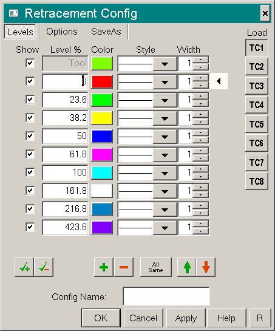 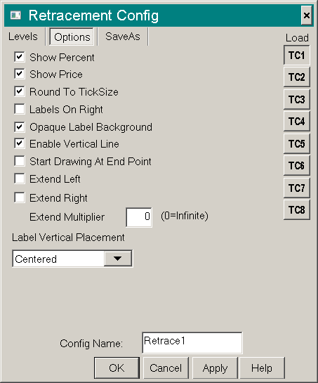 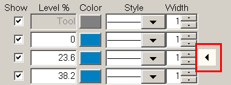{kind=link}
{kind=link}
{kind=link}
This section lists Tool Configuration settings and Chart Drawing Properties settings specific to Price Retracement | Price Expansion | Price Projection tools and drawings. To set the Tool Configuration or modify the Drawing Properties for an existing drawing, refer to Drawing Tool Configuration.
For the descriptions of settings that are common among all Drawing Tools, refer to Common Tool Configuration Settings and Chart Drawing Properties.
- Levels >> Show: Enable this setting to display a retracement or expansion/extension level. Uncheck this setting to hide the level. For the level that is labeled Tool, this is the sloping line(s) defined by the entered points for the Price Retracement/Expansion/Projection drawing. If Show is disabled for this level, then the sloping line(s) will not be displayed unless you are actively drawing the drawing.
- Levels >> Level %: This specifies the retracement or expansion/extension level as a percentage to draw in the tool drawing. You can add as many levels as you require and specify the percentages, where 1 = 1% and 100 = 100%. The default percentages are Fibonacci numbers. If you want to reset to the default percentages, press the R button on the configuration window. Use positive percentages for standard use. Use negative percentages when you want an opposite level. For example, with the Price Retracement tool a negative percentage will give you an extension line. With the Price Expansion tool, a negative percentage will give you a retracement level.
- Options >> Show Percent: When this option is enabled, the percentage of each retracement/extension level line will be displayed.
- Options >> Show Price: When this option is enabled, the price level of each retracement/extension level line is displayed.
- Options >> Round To Tick Size: When this option is enabled, the retracement/extension level lines will be rounded and adjusted to the nearest Tick Size set in Chart >> Chart Settings.
- Options >> Labels On Right: When this option is enabled, the Price and Percent labels are aligned to the right side of the retracement/extension horizontal lines.
- Options >> Opaque Label Background: When this option is enabled, the text labels will be drawn with a nontransparent background. Therefore the chart bars will not be visible underneath the labels. Uncheck this option if you do not want the labels to cover the bars underneath. The Chart >> Chart Settings >> Chart Drawings >> Draw Non-Highlight Chart Drawings Underneath Main Graph and Studies option can alternatively be used to prevent the labels from overlapping the bars.
- Options >> Start Drawing At End Point: When this option is enabled, the horizontal retracement/extension level lines will be drawn at the location of the last point entered for the tool (either the second or third point, depending on the tool being used).
- Options >> Enable Vertical Line: When this option is enabled, a vertical line will be drawn from the 0 to 100% retracement or extension levels at the last point entered for the drawing (either the second or third point, depending on the tool being used).
- Options >> Show Reward/Risk: When this option is enabled, the Reward/Risk value of each level line is displayed. The Reward/Risk is calculated as: Reward/Risk = Absolute Value((Price at Level - Price at Second Entered Point) / (Price at Second Entered Point - Price at First Entered Point)). This option is not available with the Price Projection tool.
- Options >> Show Currency Value: When this option is enabled, the monetary value of each level line is displayed. The currency value is calculated by taking the difference in the prices of the first two entered points divided by the Tick Size and multiplied by the Currency Value per Tick: Value = Absolute Value(Price at First Entered Point - Price at Second Entered Point) / Tick Size * Currency Value per Tick. For information on the Tick Size and Currency Value per Tick see the Chart Settings page.
- Options >> Show Ticks: When this option is enabled, the number of ticks is displayed for the level line. The ticks are displayed for each level line followed by the letter "T" (for example, "6T" would be displayed for a level line that is 6 ticks away from the 0 level line). For information on the Tick Size see the Chart Settings page.
- Options >> Show Points: When this option is enabled, the chart price difference is displayed for the level line. The price difference is calculated by taking the difference in the prices of the first two entered points and then multiplying by the level line percentage: Points = Absolute Value((Price at First Entered Point - Price at Second Entered Point) * Line Percentage). The Points are displayed for each level line followed by the letter "P" (for example "0.94P" is displayed for a level line that has a points difference from the 0 level line of 0.94).
- Options >> Extend Left: When this option is enabled, the horizontal retracement/extension level lines are extended to the left by an amount equal to the distance between the first two anchor points multiplied by the value set in Extend Multiplier. If Extend Multiplieris set to 0 then the line is extended to the left side of the chart window.
- Options >> Extend Right: When this option is enabled, the horizontal retracement/extension level lines are extended to the right by an amount equal to the distance between the first two anchor points multiplied by the value set in Extend Multiplier. If Extend Multiplieris set to 0 then the line is extended to the right side of the chart window.
- Options >> Extend Multiplier: This option sets the multiplier when using Extend Left or Extend Right options. 0 will extend the lines to the left or right edge of the chart window, respectively.
Setting this to 1 will extend the lines by the length of the distance between the beginning and ending anchor points of the Price Retracement | Price Expansion | Price Projection drawing. 2 will extend the lines by twice the distance as explained previously, and so on. Fractional values can be used. - Options >> Label Vertical Placement: This control sets the vertical placement of the Price and Percent labels for the horizontal retracement/extension level lines. The choices are Above, Centered, or Below. When Labels On Right is disabled and you have selected Centered, then the right side of the labels will be aligned to the left edge of the retracement/extension lines rather than the left side of the labels being aligned to the left edge of the retracement/extension level lines. Therefore, this allows the labels to be more to the left, so they do not overlap the price bars.
- Font Configuration: To configure the Font for the labels that can optionally be displayed by the drawings from all three of these Drawing Tools, select Global Settings >> Tool Settings on the menu. Modify the Global Chart Drawing Font by pressing the Select button in that frame.
Documentation for Price Retracement (2 point) | Price Expansion (2 point) | Price Projection (3 point) Tools.
Fibonacci Fan | Gann Fan Configuration
This section lists Tool Configuration settings and Chart Drawing Properties specific to the Fibonacci Fan and Gann Fan tools and drawings. To set the Tool Configuration or modify the Drawing Properties for an existing drawing, refer to Drawing Tool Configuration.
For the descriptions of settings that are common among all Drawing Tools, refer to Common Tool Configuration Settings and Chart Drawing Properties.
- Levels >> Show: Enable this setting to display the Fan line at the specified level. Uncheck this setting to hide the Fan line. For the level that is labeled Base, this is the original drawn line. For the level that is labeled Initial, this is the original drawn line and in the case of the Gann Fan, it cannot be shown.
- Levels >> Level %: This specifies percentage for the Fan line to draw in the Fibonacci Fan drawing. You can add as many fan lines as you require and specify the percentages for each. The default percentages are Fibonacci numbers. 1 = 1% and 100 = 100%. If you want to reset to the default percentages, press the R button on the configuration window.
- Levels >> Slope: This specifies the slope value for the Fan line to draw in the Gann Fan drawing. You can add as many fan lines as you require and specify the slopes for each of them. If you want to reset to the default slope values, press the R button on the configuration window.
- Options >> Show Labels: When this option is enabled, then labels on the Fan lines will be drawn indicating the Percentage (Fibonacci Fan) or Slope (Gann Fan) value.
- Options >> Opaque Label Background: When this option is enabled, the text labels will be drawn with a nontransparent background. Therefore the chart bars will not be visible underneath the labels. Uncheck this option if you do not want the labels to cover the bars underneath. The Chart >> Chart Settings >> Chart Drawings >> Draw Non-Highlight Chart Drawings Underneath Main Graph and Studies option that can alternatively be used to prevent the labels from overlapping the bars.
- Options >> Draw Labels At Line End: When this option is enabled, then the labels for the Fan lines will be drawn at the end of the Fan lines.
- Options >> Draw Fan from Second Point: This option only applies to the Fibonacci Fan tool. When this option is enabled, then the fan lines which are based upon the specified percentages, will be drawn from the second point that defined the line that was originally drawn with the Fibonacci Fan tool.
- Options >> Extend: When this option is enabled, the Fan lines are drawn to the edges of the Chart area. Otherwise, the fan lines are only drawn to where the second point is placed to set the Fan lines. This option is enabled by default.
Documentation for Fibonacci Fan / Percentage Fan / Speed Resistance Lines.
Documentation for Gann Fan.
Linear Regression Configuration
This section lists Tool Configuration settings and Chart Drawing Properties settings specific to the Linear Regression tool and drawings. To set the Tool Configuration or modify the Drawing Properties for an existing drawing, refer to Drawing Tool Configuration.
For the descriptions of settings that are common among all Drawing Tools, refer to Common Tool Configuration Settings and Chart Drawing Properties.
- Levels >> Show: Enable this setting to display the line at the specified level. Uncheck this setting to hide a line. For the level that is labelled LR Line, this is the Linear Regression Line that is fit to the data. For the levels that are labelled 2 and -2 (default values), these are the drawn outer lines at the specified distance from the Linear Regression Line.
- Levels >> Std Dev: This is the position for drawing the specific level line. The value is the number of standard deviations from the center linear regression line.
- Options >> Enable Vertical Lines: When this option is enabled, it connects the parallel lines on each side which creates a defined box style.
- Options >> Mark Anchors: When this option is enabled, it highlights the base line with the selected start and end points.
- Options >> Extend Forward: When this option is enabled, all lines are endlessly extended in the direction of the second point.
- Options >> Calc Based On: This sets which element of the chart bars the linear regression calculation uses. The linear regression can be set to use the Open, High, Low, Close, OHLC (Open, High, Low, Close), HLC (High, Low, Close), or HL (High, Low) values.
Documentation for Linear Regression.
Raff Regression Channel Configuration
This section lists Tool Configuration settings and Chart Drawing Properties settings specific to the Raff Regression Channel tool and drawings. To set the Tool Configuration or modify the Drawing Properties for an existing drawing, refer to Drawing Tool Configuration.
For the descriptions of settings that are common among all Drawing Tools, refer to Common Tool Configuration Settings and Chart Drawing Properties.
- Levels >> Show: Enable this setting to display the line at the specified level. Uncheck this setting to hide a line. For the level that is labeled LR Line, this is the Linear Regression Line that is fit to the data. For the levels that are labeled 100 and -100 (default values), these are the drawn outer lines at the specified distance from the Linear Regression Line.
- Levels >> Level %: This is the position for drawing the specific level line. The value is the percentage of the greatest difference between the highs and lows of the bars that the Linear Regression is drawn across and is drawn away from the center linear regression line. If you want to reset to the default lines, press the R button on the configuration window.
- Options >> Enable Vertical Lines: When this option is enabled, it connects the parallel lines on each side which creates a defined box style.
- Options >> Mark Anchors: When this option is enabled, it highlights the base line with the selected start and end points.
- Options >> Extend Forward: When this option is enabled, all lines are endlessly extended in the direction of the second point.
- Options >> Calc Based On: This sets which element of the chart bars the linear regression calculation uses. The linear regression can be set to use the Open, High, Low, Close, OHLC (Open, High, Low, Close), HLC (High, Low, Close), or HL (High, Low) values.
Documentation for Raff Regression Channel.
Arrow Configuration
This section lists Tool Configuration settings and Chart Drawing Properties settings specific to Arrow tools and drawings. To set the Tool Configuration or modify the Drawing Properties for an existing drawing, refer to Drawing Tool Configuration.
For the descriptions of settings that are common among all Drawing Tools, refer to Common Tool Configuration Settings and Chart Drawing Properties.
- Options >> Fixed Arrow Head Size: When enabled this fixes the head of the arrow at a specific size. When unchecked, this allows for the arrow head to be resized using the numeric value entry field Line to Arrow Head Ratio.
- Options >> Line To Arrow Head Ratio: This will set the size of the arrow if Fixed Arrow Head Size is unchecked.
- Options >> Draw Text at End: Enabling this option will place the text associated with this drawing at the location of the second point that was entered for this drawing. Otherwise, the text is drawn at the location of the first point that was entered for this drawing.
Documentation for Arrow.
Cycle Configuration
This section lists Tool Configuration settings and Chart Drawing Properties settings specific to the Cycle tool and drawings. To set the Tool Configuration or modify the Drawing Properties for an existing drawing, refer to Drawing Tool Configuration.
For the descriptions of settings that are common among all Drawing Tools, refer to Common Tool Configuration Settings and Chart Drawing Properties.
- Options >> Show >> Node Vertical: Enable this setting to display a vertical line located at the beginning and end of each arc an extending up to just below the bars on the chart.
- Options >> Show >> Mid Vertical: Enable this setting to display a vertical line located at the center of each arc and extending up to just below the bars on the chart.
- Options >> Show Verticals when Modifying: When this option is enabled, the Node Vertical and Mid Vertical lines are displayed when initially creating or modifying the Cycle Drawing. This option is enabled by default.
- Options >> Draw Cycles Forward Only: When this option is enabled, the arcs are only drawn forward in time from the Cycle drawing starting point.
- Options >> Number of Cycles: Specifies the number of arcs drawn on each side of a Cycle drawing starting point.
Documentation for Cycle.
Time Expansion Configuration
This section lists Tool Configuration settings and Chart Drawing Properties settings specific to Time Expansion tools and drawings. To set the Tool Configuration or modify the Drawing Properties for an existing drawing, refer to Drawing Tool Configuration.
For the descriptions of settings that are common among all Drawing Tools, refer to Common Tool Configuration Settings and Chart Drawing Properties.
- Levels >> Show: Enable this setting to display the line at the specified level. Uncheck this setting to hide a line. The levels that are labeled Tool, Time Horizon, Time Start and Time End are automatically drawn from the given points. For the levels that are labeled 100 and higher (default values), these are the original drawn time expansion lines.
- Levels >> Level %: The percentage for the time expansion line which is drawn relative to the Time Horizon line. You can add as many time expansion lines as you require and specify the relative position as a positive or negative percentage value for each. If you want to reset to the default lines, press the R button on the configuration window.
- Options >> Extend Verticals: When this option is enabled, it extends the vertical marker lines to full window height. This is a selection option in combination with Standard Verticals and Compress Verticals, in which only one of these can be selected at a time.
- Options >> Standard Verticals: When this option is enabled, it extends the vertical marker lines to the height distance of points A and B. This is a selection option in combination with Extend Verticals and Compress Verticals, in which only one of these can be selected at a time. This is the default selection for these items.
- Options >> Compress Verticals: When this option is enabled, it provides minimal vertical marker lines. This is a selection option in combination with Extend Verticals and Standard Verticals, in which only one of these can be selected at a time. This is the default selection for these items.
- Options >> Opaque Label Background: When this option is enabled, the text labels will be drawn with a nontransparent background. Therefore the chart bars will not be visible underneath the labels. Uncheck this option if you do not want the labels to cover the bars underneath. The Chart >> Chart Settings >> Chart Drawings >> Draw Non-Highlight Chart Drawings Underneath Main Graph and Studies option that can alternatively be used to prevent the labels from overlapping the bars.
- Options >> Top Label 1: This lets you specify a label value to be displayed on top of the marker lines. The options for the labels are:
- None: When selected no label is drawn.
- Percent: When selected, the percentage away from the Time End (0%) position for each level, as defined by the Level %, is displayed.
- Num Bars: When selected, the number of bars away from the Time End (0%) position for each shown level is displayed.
- % (Bar): When selected, the percentage and the number of bars (in parentheses) away from the Time End (0%) position for each shown level is displayed.
- Bars (%): When selected, the number of bars and the percentage (in parentheses) away from the Time End (0%) position for each shown level is displayed.
- Date: When selected, the date associated with the shown level is displayed. The date is displayed as MM-DD (for example, if the date is August 1, 2017, this will display as 8-1)
- Time: When selected, the Time associated with the shown level is displayed. The time is displayed as HH:MM:SS.
- Date Time: When selected, both the Date and the Time associated with the shown level is displayed.
- Options >> Bottom Label 1: This lets you specify a label value to be displayed on the bottom of the marker lines. See the Top Label 1 section above for the specific display options available.
- Options >> Top Label 2: This lets you specify an additional label value to be displayed on top of the marker lines. See the Top Label 1 section above for the specific display options available.
- Options >> Bottom Label 2: This lets you specify an additional label value to be displayed on the bottom of the marker lines. See the Top Label 1 section above for the specific display options available.
- Options >> Time Analysis Based On: This lets you specify if the time analysis is based on Bars (default) or Time.
Documentation for Time Expansion.
Time Projection Configuration
This section lists Tool Configuration settings and Chart Drawing Properties settings specific to Time Projection tools and drawings. To set the Tool Configuration or modify the Drawing Properties for an existing drawing, refer to Drawing Tool Configuration.
For the descriptions of settings that are common among all Drawing Tools, refer to Common Tool Configuration Settings and Chart Drawing Properties.
- Levels >> Show: Enable this setting to display the line at the specified level. Uncheck this setting to hide a line. The levels that are labeled Tool, Time Horizon, Time Start, Time End and Proj Start are automatically drawn from the given points. The levels that are labeled 100 and higher (default values), are the time projection lines.
- Levels >> Level %: The percentage for the time projection line which is drawn relative to the Proj Start line. You can add as many time projection lines as you require and specify the relative position as positive or negative percentages value for each. If you want to reset to the default lines, press the R button on the configuration window.
- Options >> Extend Verticals: When this option is enabled, it extends the vertical marker lines to full window height. This is a selection option in combination with Standard Verticals and Compress Verticals, in which only one of these can be selected at a time.
- Options >> Standard Verticals: When this option is enabled, it extends the vertical marker lines to the height distance of points A and B. This is a selection option in combination with Extend Verticals and Compress Verticals, in which only one of these can be selected at a time.
- Options >> Compress Verticals: When this option is enabled, it provides minimal vertical marker lines. This is a selection option in combination with Extend Verticals and Standard Verticals, in which only one of these can be selected at a time. This is the default selection for these items.
- Options >> Opaque Label Background: When this option is enabled, the text labels will be drawn with a nontransparent background. Therefore the chart bars will not be visible underneath the labels. Uncheck this option if you do not want the labels to cover the bars underneath. The Chart >> Chart Settings >> Chart Drawings >> Draw Non-Highlight Chart Drawings Underneath Main Graph and Studies option that can alternatively be used to prevent the labels from overlapping the bars.
- Options >> Top Label 1: This lets you specify a label value to be displayed on top of the marker lines. The options for the labels are:
- None: When selected no label is drawn.
- Percent: When selected, the percentage away from the Time End (0%) position for each level, as defined by the Level %, is displayed.
- Num Bars: When selected, the number of bars away from the Time End (0%) position for each shown level is displayed.
- % (Bar): When selected, the percentage and the number of bars (in parentheses) away from the Time End (0%) position for each shown level is displayed.
- Bars (%): When selected, the number of bars and the percentage (in parentheses) away from the Time End (0%) position for each shown level is displayed.
- Date: When selected, the date associated with the shown level is displayed. The date is displayed as MM-DD (for example, if the date is August 1, 2017, this will display as 8-1)
- Time: When selected, the Time associated with the shown level is displayed. The time is displayed as HH:MM:SS.
- Date Time: When selected, both the Date and the Time associated with the shown level is displayed.
- Options >> Bottom Label 1: This lets you specify a label value to be displayed on the bottom of the marker lines. See the Top Label 1 section above for the specific display options available.
- Options >> Top Label 2: This lets you specify an additional label value to be displayed on top of the marker lines. See the Top Label 1 section above for the specific display options available.
- Options >> Bottom Label 2: This lets you specify an additional label value to be displayed on the bottom of the marker lines. See the Top Label 1 section above for the specific display options available.
- Options >> Time Analysis Based On: This lets you specify if the time analysis is based on Bars (default) or Time.
Documentation for Time Projection.
Zig-Zag Configuration
Since the Zig-Zag tool creates individual lines that share a common ending and beginning point, the Tool Configuration settings and Chart Drawing Properties is set through the Line Configuration window. Refer to the Line | Ray | Extended Line Configuration documentation for more information.
Note that when selecting a Tool Configuration to use with the Zig-Zag tool, you are actually selecting a Line Configuration. As such, the Current Tool Config selections will show the configurations set for the Line Configuration, including any names that have been assigned to the different configuration options.
Documentation for Zig-Zag.
Gann Grid Configuration
This section lists Tool Configuration settings and Chart Drawing Properties settings specific to the Gann Grid tool and drawings. To set the Tool Configuration or modify the Drawing Properties for an existing drawing, refer to Drawing Tool Configuration.
for the descriptions of settings that are common between the Gann Grid and the Gann Fan, refer to Common Tool Configuration Settings and Chart Drawing Properties for Gann Grid and Gann Fan.
For the descriptions of settings that are common among all Drawing Tools, refer to Common Tool Configuration Settings and Chart Drawing Properties.
- Options >> Angle: This specifies a value in degrees for the angle of the Gann Grid lines.
Documentation for Gann Grid.
Pitchfork | Pitchfork - Schiff Median | Pitchfork - Modified Schiff Configuration
This section lists Tool Configuration settings and Chart Drawing Properties settings specific to the Pitchfork | Pitchfork - Schiff Median | Pitchfork - Modified Schiff tools and drawings. To set the Tool Configuration or modify the Drawing Properties for an existing drawing, refer to Drawing Tool Configuration.
For the descriptions of settings that are common among all Drawing Tools, refer to Common Tool Configuration Settings and Chart Drawing Properties.
- Levels >> Show: Enable this setting to display a pitchfork drawing level. Uncheck this setting to hide the level. For the level that is labeled Median , this is the centerline of the pitchfork drawing. For the level that is labeled BC, this is the connecting line for the B and C pitchfork lines. Any number of levels can be added or removed. There needs to be at least two levels added for a basic pitchfork drawing.
- Levels >> Level %: This specifies the level position as a percentage, where 1 = 1% and 100 = 100%. 100% is the percentage which represents the standard B and C pitchfork lines. If you want to reset to the default percentages, press the R button on the Configuration/Properties window. To have lines drawn automatically which are parallel to the B and C standard pitchfork parallel lines, then add the levels and enter a percentage for the parallel lines that you want drawn.
- Options >> Enable AB Connecting Line: When this option is enabled, a connecting line between anchor points A and B will be drawn. The color and other properties of this line is set on the Levels tab of the Pitchfork Configuration/Properties window. The level is labeled AB.
- Options >> Enable AC Connecting Line: When this option is enabled, a connecting line between anchor points A and C will be drawn. The color and other properties of this line is set on the Levels tab of the Pitchfork Configuration/Properties window. The level is labeled AC.
- Options >> Extend / Extend Multiplier: When the Extend option is enabled, the pitchfork lines extend to the edge of the chart window.
The Extend Multiplier setting controls the amount of the extension. Zero is infinite. Each integer value is a multiplier of 10 bars of extension. Therefore, a value of 1 will extend the lines by 10 bars, 2 will extend the lines by 20 bars, and so on. - Options >> Pitchfork Type: This option sets the pitchfork type. The choices are Andrews, Schiff and Modified Schiff.
Documentation for Pitchfork (Median Line Tool).
Rectangle | Extending Rectangle | Ellipse | Triangle Configuration
This section lists Tool Configuration settings and Chart Drawing Properties settings specific to Rectangle | Extending Rectangle | Ellipse | Triangle tools and drawings. To set the Tool Configuration or modify the Drawing Properties for an existing drawing, refer to Drawing Tool Configuration.
For the descriptions of settings that are common among all Drawing Tools, refer to Common Tool Configuration Settings and Chart Drawing Properties.
- Options >> Outline >> Color/Style/Width: The Color/Style/Width outline settings, display and set the color, style and draw width respectively for the outline around the Rectangle, Extending Rectangle, Ellipse, or Triangle drawing. The width can be set to 0 to not draw an outline.
- Options >> Fill: When this option is enabled, then the interior of the Rectangle, Ellipse, or Triangle is filled in.
- Options >> Fill Color: This displays and sets the interior fill color of the Rectangle, Ellipse, or Triangle.
- Options >> Fill Color >> Transparency %: The interior is drawn using a transparent drawing method. This setting displays and sets the level of transparency as a percentage. 0% means there is no transparency and the interior is drawn as solid. 100% means the interior is not drawn at all. 50% means there is 50% transparency and what is below the Rectangle, Ellipse, or Triangle is partially visible.
- Options >> Show Price Labels: When this option is enabled, then price labels are drawn on the Rectangle drawing representing the coordinate values. This does not apply to the Ellipse or Triangle Chart Drawings.
- Options >> Labels On Right: When this option is enabled, the price labels are aligned to the right side of the Chart Drawing.
- Options >> Opaque Label Background: When this option is enabled, the text labels will be drawn with a nontransparent background. Therefore the chart bars will not be visible underneath the labels. Uncheck this option if you do not want the labels to cover the bars underneath. The Chart >> Chart Settings >> Chart Drawings >> Draw Non-Highlight Chart Drawings Underneath Main Graph and Studies option that can alternatively be used to prevent the labels from overlapping the bars. This setting does not apply to the Ellipse or Triangle Chart Drawings
- Options >> Split Text Opposite Of Labels: When this option is enabled, the text is drawn on the opposite side of the price labels. This setting does not apply to the Ellipse or Triangle Chart Drawings.
- Options >> Use Start Time: When this option is enabled, the time of the first Anchor point can be specified. The specified start time is used along with the date of the current point, allowing the Chart Drawing to always start at a specified time regardless of where the Pointer is clicked (Example: always start at beginning of session). This does not apply to the Ellipse or Triangle Chart Drawings.
- Options >> Use End Time: When this option is enabled, the time of the second Anchor point can be specified. The specified end time is used along with the date of the current point, allowing the Chart Drawing to always end at a specified time regardless of where the Pointer is clicked (Example: always terminate at end of session). This does not apply to the Extending Rectangle, Ellipse or Triangle Chart Drawings.
- Options >> First Point Is Center: When this option is enabled, the first Anchor point specifies the center of the ellipse instead of the first corner of the bounding rectangle. This option only applies to the Ellipse Chart Drawing.
- Options >> Center Text Vertically: This applies only to Rectangle and Extending Rectangle drawings. When enabled, the text is split from the top label and centered vertically within the highlight. This option is also supported from ACSIL in the s_UseTool structure.
- Options >> Center Price Labels On Level: This applies only to Rectangle and Extending Rectangle drawings. When enabled, the price labels (and potentially the text) are centered on the upper/lower highlight level. This option is also supported from ACSIL in the s_UseTool structure.
- Options >> No Vertical Outline: This applies only to Rectangle and Extending Rectangle drawings. When enabled, the vertical lines of the outline will not be drawn.
- Options >> Draw Midline; This applies only to Rectangle, Extending Rectangle, and Ellipse drawings. When enabled, a horizontal line through the middle of the Rectangle/Ellipse is drawn.
- Options >> Double Extend: This applies only to Extending Rectangle drawings. When enabled, the drawing will be extended both to the left and right of the chart.
Documentation for Rectangle | Extending Rectangle | Ellipse | Triangle.
Draw Volume Profile Configuration
For configuration information for the Draw Volume Profile tool refer to the Step by Step Instructions to Configure the Draw Volume Profile Tool information which is part of the Volume Profile study documentation.
Marker Configuration
This section lists Tool Configuration settings and Chart Drawing Properties settings specific to the Marker tool and drawings. To set the Tool Configuration or modify the Drawing Properties for an existing drawing, refer to Drawing Tool Configuration.
For the descriptions of settings that are common among all Drawing Tools, refer to Common Tool Configuration Settings and Chart Drawing Properties.
- Options >> Type: This sets the type of Marker to draw. It can be one of the following:
- Point: Displays as ⚫
- Dash: Displays as ▬
- Square: Displays as ◼
- Star: Displays as ★
- Plus: Displays as ✚
- X: Dsiplays as ✖
- Arrow Up: Displays as ↑
- Arrow Down: Displays as ↓
- Arrow Right: Displays as →
- Arrow Left: Displays as ←
- Triangle Up: Displays as ▲
- Triangle Down: Displays as ▼
- Triangle Right: Displays as ▶
- Triangle Left: Displays as ◀
- Diamond: Displays as ◆
- Horiz Segment: Displays as an extended ▬
- Arc Up: Displays as ◠
- Arc Down: Displays as ◡
- Options >> Color: This sets the color of the Marker Chart Drawing.
- Options >> Draw Outline Only (Hollow): When this option is selected, the Marker Chart Drawing has the center of the drawing removed, such that the drawing is only the outline of the selected type. This only applies to Marker Chart Drawings of type Point, Square, Star, Triangle Up, Triangle Down, Triangle Right, Triangle Left, and Diamond.
- Options >> Size Based On Bar Spacing: When this option is enabled, then the size of the Marker Chart Drawing is based upon the spacing between the bars in the chart. Otherwise, the size of the Marker Chart Drawing is based on the setting in Size.
- Options >> Size: This sets the size of the Marker Chart Drawing in pixels for all marker types except Horiz Segment. In the case of the Horiz Segment this option sets the number of bars that the Horiz Segment is drawn across.
- Options >> Line Width: When the Marker Type is a Dash, Plus, X, Arrow Up, Arrow Down, Arrow Right, Arrow Left, Horiz Segment, Arc Up, or Arc Down then this sets the width of the lines for these types of drawings in pixels.
Documentation for Marker.
Reward/Risk Configuration
This section lists Tool Configuration settings and Chart Drawing Properties settings specific to the Reward/Risk tool and drawings. To set the Tool Configuration or modify the Drawing Properties for an existing drawing, refer to Drawing Tool Configuration.
For the descriptions of settings that are common among all Drawing Tools, refer to Common Tool Configuration Settings and Chart Drawing Properties.
- Options >> Line # >> Color: This displays and sets the color of the line.
- Options >> Line # >> Style: This displays and sets the line style for the line.
- Options >> Line # >> Line Width: This displays and sets the line width in pixels.
- Options >> Entry / Stop / Target >> Color: This displays and sets the color of the marker for the specified item.
- Options >> Entry / Stop / Target >> Marker Type: This displays and sets the marker type for the specified item. The type can be one of the following:
- Point: Displays as ⚫
- Dash: Displays as ▬
- Square: Displays as ◼
- Star: Displays as ★
- Plus: Displays as ✚
- X: Dsiplays as ✖
- Arrow Up: Displays as ↑
- Arrow Down: Displays as ↓
- Arrow Right: Displays as →
- Arrow Left: Displays as ←
- Triangle Up: Displays as ▲
- Triangle Down: Displays as ▼
- Triangle Right: Displays as ▶
- Triangle Left: Displays as ◀
- Diamond: Displays as ◆
- Horiz Segment: Displays as an extended ▬
- Arc Up: Displays as ◠
- Arc Down: Displays as ◡
- Options >> Entry / Stop / Target >> Size: This sets the size of the Marker Chart Drawing in pixels for all marker types except Horiz Segment. In the case of the Horiz Segment this option sets the number of bars that the Horiz Segment is drawn across.
- Options >> Entry / Stop / Target >> Line Width: When the Marker Type is a Dash, Plus, X, Arrow Up, Arrow Down, Arrow Right, Arrow Left, Horiz Segment, Arc Up, or Arc Down then this sets the width of the lines for these types of drawings in pixels.
- Options >> Text >> Color: This displays and sets the color of the text.
- Options >> Text >> Opaque Background: When this option is enabled, then the background of the Text completely covers any graphics underneath it. When this option is disabled, then any graphics underneath the Text will appear, only the actual text itself will cover the graphics, and the surrounding background is not drawn.
- Options >> Text >> Text On Left: When this option is enabled, the text alignment is to the left of the Target point.
- Options >> Text >> Use Global Font: When this option is enabled, the the global Chart Drawing font setting is used.
- Options >> Text >> Font: This displays and sets the font properties for the Chart Drawing text when the option Use Global Font is unchecked. Press the Select button to change the properties of the font.
- Options >> Show Ticks: When enabled, the number of ticks is displayed rounded to the nearest whole number. The number of ticks is determined by taking the absolute value of the difference in the prices at two points, dividing by the Tick Size, and then rounding the resulting value: Stop Ticks = Round(Absolute Value((Price at Entry - Price at Stop) / Tick Size)) and Target Ticks = Round(Absolute Value((Price at Stop - Price at Target) / Tick Size)). For information on the Tick Size see the Chart Settings page.
- Options >> Show Points: When enabled, the price difference between points is displayed. The price difference is determined from the number of ticks (defined above) by taking the number of Ticks and multiplying by the Tick Size: Stop Points = Stop Number of Ticks * Tick Size and Target Points = Target Number of Ticks * Tick Size. For information on the Tick Size see the Chart Settings documentation.
- Options >> Show Currency Value: When enabled, the monetary value at each point is displayed. The currency value is calculated using the following formula: Stop Value = Absolute Value(((Price at Entry - Price at Stop) / Tick Size) * Currency Value per Tick * Quantity), and Target Value = Absolute Value(((Price at Stop - Price at Target) / Tick Size) * Currency Value per Tick * Quantity).
Refer to the documentation for Tick Size and Currency Value per Tick in the Chart Settings. For information on how to change the Order Quantity, refer to Changing Order Quantity documentation. - Options >> No Auto Snap: If this option is enabled, and the Tools >> Auto Snap on Creation or Tools >> Auto Snap on Adjustment options are enabled, then auto snapping will not be applied when using this drawing tool.
Documentation for Reward/Risk.
Swing Marker Configuration
This section lists Tool Configuration settings and Chart Drawing Properties settings specific to the Reward/Risk tool and drawings. To set the Tool Configuration or modify the Drawing Properties for an existing drawing, refer to Drawing Tool Configuration.
For the descriptions of settings that are common among all Drawing Tools, refer to Common Tool Configuration Settings and Chart Drawing Properties.
- Options >> Arrow >> Color: This displays and sets the color of the Arrow.
- Options >> Arrow >> Style: This displays and sets the line style for the Arrow.
- Options >> Arrow >> Line Width: This displays and sets the line width of the Arrow in pixels.
- Options >> Arrow >> Arrow Size: This sets the size of the Arrow in pixels.
- Options >> Text >> Color: This displays and sets the color of the text.
- Options >> Text >> Opaque Background: When this option is enabled, then the background of the Text completely covers any graphics underneath it. When this option is disabled, then any graphics underneath the Text will appear, only the actual text itself will cover the graphics, and the surrounding background is not drawn.
- Options >> Text >> Use Global Font: When this option is enabled, the the global Chart Drawing font setting is used.
- Options >> Text >> Font: This displays and sets the font properties for the Chart Drawing text when the option Use Global Font is unchecked. Press the Select button to change the properties of the font.
- Options >> Date & Time: When this option is enabled, both the Date and Time will be displayed with the Swing Marker.
- Options >> Date: When this option is enabled, the Date will be displayed with the Swing Marker.
- Options >> Time: When this option is enabled the Time will be displayed with the Swing Marker.
- Options >> Price: When this option is enabled the Price will be displayed with the Swing Marker. The price that is shown depends on whether the marker is above or below the bar on the graph. If the Swing Marker is placed above the bar, then the price that is shown with the Swing Marker is the High of the bar. If the Swing Marker is placed below the bar, then the price that is shown with the Swing Marker is hte Low of the bar.
- Options >> Price Difference: When this option is enabled the Price Difference between the two Swing Markers is displayed with the second Swing Marker. This Price Difference is the difference between the two displayed prices for the pair of Swing Markers.
- Options >> Tick Difference: When this option is enabled the Tick Difference between the two Swing Markers is displayed with the second Swing Marker. The Tick Difference is determined by taking the Price Difference (see above) and dividing by the Tick Size: Tick Difference = Absolute Value(Price Difference) / Tick Size. For information on the Tick Size see the Chart Settings page.
- Options >> Percent Change: When this option is enabled the Percentage Change in the price between the two Swing Markers is displayed with the second Swing Marker. The Percentage Change is calculated as follows: Percent Change = Absolute Value(Price Difference) / Price at Second Marker.
- Options >> Number of Bars: When this option is enabled the number of bars between the two Swing Markers is displayed with the second Swing Marker. The number of bars is inclusive of the first bar, therefore this is not the difference in the number of bars between the two markers, but rather this is the total number of bars that the Swing Markers cover. For example, if the Swing Markers are placed on two neighboring bars, the Number of Bars will show a value of 2.
Documentation for Swing Marker.
Date Marker Configuration
This section lists Tool Configuration settings and Chart Drawing Properties settings specific to the Reward/Risk tool and drawings. To set the Tool Configuration or modify the Drawing Properties for an existing drawing, refer to Drawing Tool Configuration.
For the descriptions of settings that are common among all Drawing Tools, refer to Common Tool Configuration Settings and Chart Drawing Properties.
- Options >> Arrow >> Color: This displays and sets the color of the Arrow.
- Options >> Arrow >> Style: This displays and sets the line style for the Arrow.
- Options >> Arrow >> Line Width: This displays and sets the line width of the Arrow in pixels.
- Options >> Arrow >> Arrow Size: This sets the size of the Arrow in pixels.
- Options >> Text >> Color: This displays and sets the color of the text.
- Options >> Text >> Opaque Background: When this option is enabled, then the background of the Text completely covers any graphics underneath it. When this option is disabled, then any graphics underneath the Text will appear, only the actual text itself will cover the graphics, and the surrounding background is not drawn.
- Options >> Text >> Use Global Font: When this option is enabled, the the global Chart Drawing font setting is used.
- Options >> Text >> Font: This displays and sets the font properties for the Chart Drawing text when the option Use Global Font is unchecked. Press the Select button to change the properties of the font.
- Options >> Date & Time: When this option is enabled, both the Date and Time will be displayed with the Swing Marker.
- Options >> Date: When this option is enabled, the Date will be displayed with the Swing Marker.
- Options >> Time: When this option is enabled the Time will be displayed with the Swing Marker.
Documentation for Date Marker.
OHLC Ray Configuration
This section lists Tool Configuration settings and Chart Drawing Properties settings specific to the Reward/Risk tool and drawings. To set the Tool Configuration or modify the Drawing Properties for an existing drawing, refer to Drawing Tool Configuration.
For the descriptions of settings that are common among all Drawing Tools, refer to Common Tool Configuration Settings and Chart Drawing Properties.
- Options >> OHLC | Open >> Color: This displays and sets the color of the ray and associated text. When the option All Levels Same Color / Style (see below) is checked then this applies to all rays and their associated text, otherwise it only applies to rays that are placed at the Open of a bar.
- Options >> OHLC | Open >> Style: This displays and sets the line style for the ray. When the option All Levels Same Color / Style (see below) is checked then this applies to all rays, otherwise it only applies to rays that are placed at the Open of a bar.
- Options >> OHLC | Open >> Width: This displays and sets the line width for the ray. When the option All Levels Same Color / Style (see below) is checked then this applies to all rays, otherwise it only applies to rays that are placed at the Open of a bar.
- Options >> All Levels Same Color / Style: When this is option is checked, the Colors, Styles, and Widths of any drawn rays and their associated text is drawn in the Color, Style, and Width defined by the Options >> OHLC >> Color | Style | Width settings above. The Color, Style and Width options above are then denoted with OHLC. When this option is unchecked the Colors, Styles, and Widths of any drawn rays and their associated text is drawn in the Color, Style, and Width defined by the Options >> High | Low | Close >> Color | Style | Width defined below. The Color, Style and Width options above are then denoted with Open and only apply to rays that are placed at the Open of a bar.
- Options >> High >> Color: This displays and sets the color of the ray and associated text for rays that are placed at the High of a bar. This option is only available and applicable if the option All Levels Same Color / Style (see above) is unchecked.
- Options >> High >> Style: This displays and sets the line style for rays that are placed at the High of a bar. This option is only available and applicable if the option All Levels Same Color / Style (see above) is unchecked.
- Options >> High >> Width: This displays and sets the line width for rays that are placed at the High of a bar. This option is only available and applicable if the option All Levels Same Color / Style (see above) is unchecked.
- Options >> Low >> Color: This displays and sets the color of the ray and associated text for rays that are placed at the Low of a bar. This option is only available and applicable if the option All Levels Same Color / Style (see above) is unchecked.
- Options >> Low >> Style: This displays and sets the line style for rays that are placed at the Low of a bar. This option is only available and applicable if the option All Levels Same Color / Style (see above) is unchecked.
- Options >> Low >> Width: This displays and sets the line width for rays that are placed at the Low of a bar. This option is only available and applicable if the option All Levels Same Color / Style (see above) is unchecked.
- Options >> Close >> Color: This displays and sets the color of the ray and associated text for rays that are placed at the Close of a bar. This option is only available and applicable if the option All Levels Same Color / Style (see above) is unchecked.
- Options >> Close >> Style: This displays and sets the line style for rays that are placed at the Close of a bar. This option is only available and applicable if the option All Levels Same Color / Style (see above) is unchecked.
- Options >> Close >> Width: This displays and sets the line width for rays that are placed at the Close of a bar. This option is only available and applicable if the option All Levels Same Color / Style (see above) is unchecked.
- Options >> Extend Until Future Intersection: When this option is enabled, the OHLC Ray will only extend until it intersects a chart bar at the same level. If it does not encounter a chart bar, it will be drawn as normal to the right side of the graph.
- Labels >> Opaque Label Background: When this option is enabled, the text labels will be drawn with a nontransparent background. Therefore the chart bars will not be visible underneath the labels. Uncheck this option if you do not want the labels to cover the bars underneath. The Chart >> Chart Settings >> Chart Drawings >> Draw Non-Highlight Chart Drawings Underneath Main Graph and Studies option that can alternatively be used to prevent the labels from overlapping the bars.
- Labels >> Price: When this option is enabled, the price at which the ray is drawn, is displayed in the text associated with the ray.
- Labels >> Date: When this option is enabled, the Date of the bar at which the ray is drawn is displayed in the text associated with the ray.
- Labels >> Time: When this option is enabled, the Time of the bar at which the ray is drawn is displayed in the text associated with the ray.
- Labels >> Date & Time: When this option is enabled, the Date and Time of the bar at which the ray is drawn is displayed in the text associated with the ray.
- Labels >> Vertical Alignment: This sets the Vertical Alignment of the text associated with the ray. The choices are Top, Bottom, and Center.
Documentation for OHLC Ray.
Using Multiple Drawing Tool Configurations
Each Drawing Tool in Sierra Chart supports 24 individual configurations that can easily be selected before you use that Drawing Tool. This is controlled through the Tools >> Current Tool Config menu and the selection applies to the currently selected Drawing Tool.
You also have the ability to easily apply one of the 24 configurations to an already drawn Chart Drawing.
When switching between drawing tools, the previously selected configuration number for that drawing tool will be automatically selected. For example, when using the Extending Rectangle tool with Tools >> Current Tool Config >> Config 9, and then switching to using the Line tool with Current Tool Config >> Config 1, and then changing back to the Extending Rectangle tool, the selected Tools >> Current Tool Config for the Extending Rectangle will be Config 9.
Once a Drawing Tool Configuration has been defined by following the instructions below, there is the ability to select both the Drawing Tool and Tool Configuration with one Control Bar button. Refer to Creating Control Bar Buttons which Select Drawing Tool and Drawing Tool Configuration in One Step for instructions.
To setup multiple configuration options for a tool, follow these directions:
- Select Global Settings >> Tool Configs >> [Tool Name].
You will see a Tool Configuration window similar to the one that is shown below. You will see TC1 (Tool Configuration #) through TC8 buttons on the right side of this configuration window with the words Quick Load above them.
Along the bottom of the window is a list box with tool configuration numbers TC1 through TC24. This provides an alternative way other than the buttons (1-8) to select a different configuration number to configure. In order to make the selected configuration active, you need to select the Load button after selecting the configuration number in the list box. If the Load button is not selected, then the changes will be associated with the previously loaded configuration number.
All of the settings on this configuration window apply to the loaded configuration number represented by the pushed in TC# button or the configuration number selected from the list box and loaded. For example, if TC1 is pressed in, then all of the settings apply to the configuration for TC1, or if TC12 is selected from the list box and then Load is selected, then all of the settings apply to the configuration for TC12.
When you press a different TC# button or select a different configuration from the list box and select Load, all of the settings will update and correspond to the configuration for that specific number. When you press a different configuration button or select a different configuration from the list box and select Load, any changes you made for the current configuration are saved into the prior selected Tool Configuration number (TC#).
When the Tool Configuration window is opened, the selected Tool Configuration number corresponds to the configuration currently selected through Tools >> Current Tool Config >> Config # for the active tool.
- Set all of the settings on the Tool Configuration window for the Drawing Tool, as you require.
- You can optionally enter a name for the current Tool Configuration number by specifying that name in the Config Name box on the Tool Configuration window. This name will also be displayed in the hover text when hovering over the corresponding Tool Configuration button (TC#) on the Control Bar. The Config Name cannot be set through the Chart Drawing Properties window for an existing Chart Drawing.
- When you are done with the settings, press OK to save them.
- Select the Drawing Tool from the Tools menu that you set a Drawing Tool Configuration for with the above steps. You can also select the Tool by using the corresponding keyboard shortcut for that tool.
Or, press the corresponding Control Bar button for the tool that you want to use. - Optionally select Global Settings >> Customize Control Bar >> Control Bar [#]. Go to the Tools list on the left and select Config #(1-24).
Add as many Config # buttons to the Control Bar that correspond to the 24 Tool Configurations that you will be using. See image below for how these buttons look on the Control Bar after they have been added. They are the TC# buttons on the Control Bar.
- Press OK.
- Select Tools >> Current Tool Config>> Config # to select a specific configuration that you want to use for the active Drawing Tool. The Current Tool Configuration, applies to each individual Tool.
For example, if you are currently using the Line tool and you have Config 1 selected and you switch to the Price Retracement tool which had previously had Config 2 selected, then Config 2 will be selected for the Price Retracement tool.
Alternatively you can press one of the TC# buttons that you may have added to the Control Bar that corresponds to the particular configuration you want to use. These buttons will be disabled if you do not have a drawing tool selected.
So the previously used Drawing Tool configuration number for a particular Drawing Tool type, will be reselected, when you go back to that same drawing tool. - Use the Drawing Tool as you normally would, and the selected configuration number (Config #) will control the specific settings that are used for the Chart Drawing.
{kind=link}
{kind=link}
{kind=link}
{kind=link}
{kind=link}
Saving the Current Drawing Configuration to a Different Configuration Number
Each Drawing Tool can have up to 24 configurations. To save the current configuration into one of the other 23 configurations follow the instructions below:
- Open the configuration window for the drawing tool by selecting Global Settings >> Tool Configs >> [Drawing Tool Name].
- Configure the Tool as you require.
- Select a configuration number to save the current configuration as from the Config Num list.
- Optionally type a name into the Config Name text box.
- Select the Save button.
- Press OK to close the Tool Configuration or the Chart Drawing Properties window. The configuration selected with the Load >> TC# button on the first tab of the Tool Configuration window will also be saved when you press OK.
Chart Drawing Alerts
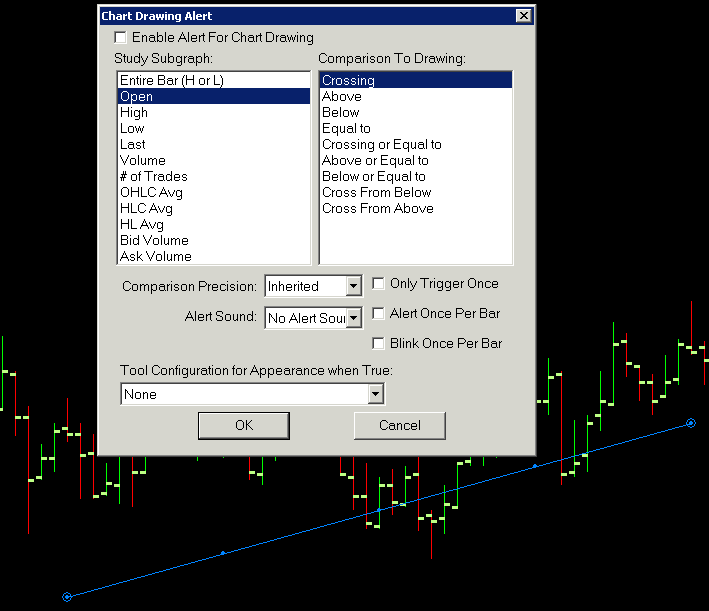{kind=link}
Sierra Chart supports specifying an Alert Condition on the following Chart Drawing types:
- Line
- Ray
- Chart Calculator
- Extended Line
- Horizontal Line
- Horizontal Ray
- Vertical Line (When a vertical line is drawn in the future past the last bar, when its time is encountered with a new bar, then an alert will be given)
- Rectangle (Both the Top and Bottom values of the rectangle are checked against the alert settings separately as if they are separate lines)
- Extending Rectangle (Both the Top and Bottom values of the rectangle are checked against the alert settings separately as if they are separate lines)
The Alert Conditions in copied Chart Drawings are not going to be evaluated. They are only evaluated in the source chart.
To set up an Alert Condition on a Chart Drawing follow these steps:
- Display the Chart Drawing Alert window for a Chart Drawing. To do this, you will need to right-click on the Chart Drawing and select Alerts on the menu, or open the Chart Drawing Properties and select the Alert button.
If you do not see these commands listed on the right-click options, then you need to add it to the Chart Drawing shortcut menu. To do this, refer to the Customizing Chart Drawing Shortcut Menu section. - Check the Enable Alert For Chart Drawing option.
- In the Study Subgraph list box, select the Subgraph of the main price graph or study to compare with the Chart Drawing. This setting does not apply to Vertical Lines.
The study Subgraphs that are listed are for the very first found graph in the Chart Region where the Chart Drawing is located. In the case of Chart Region 1, this is going to be the main price graph. In the case of another Chart Region, this will be the study graph which is listed first for that Chart Region in the list of studies in the Analysis >> Studies window. The order of the studies can be adjusted. Refer to Study Display Order. - In the Comparison To Drawing list box, select the type of comparison you want to use. This does not apply to Vertical lines.
- In the Comparison Precision drop-down list, select the precision used when comparing the values of a Chart Drawing to the values of the main graph in the Chart Region where the Chart Drawing is drawn. For example, if the precision is .1, then 100.11 will be considered equal to 100.1. This does not apply to Vertical Lines.
This is a critical setting to ensure that the evaluation of the Chart Drawing Alert Condition is correct. Otherwise, the Alert Condition can incorrectly be TRUE or FALSE. If the Chart Drawing is on the main price graph we recommend using the same setting as Chart >> Chart Settings >> Price Display Format. - Select an Alert Sound number to play when the alert condition is true.
- Enable Alert Once Per Bar to only have the alert sound once per chart bar even if the condition goes from false to true to false and back to true. It will sound the first time the alert condition goes to true, but not subsequent times for the same bar.
- Press OK.
- The Chart Drawing will be evaluated for the specific Alert Condition which has been configured as the chart is updated. The evaluation only occurs on the last bar in the chart.
A Chart Drawing alert will be evaluated only if the chart it was drawn on is currently open, and the original Symbol the Chart Drawing was drawn on matches the current Symbol of the chart, or if Chart >> Chart Settings >> Chart Drawings >> Show Chart Drawings for Different Symbols is enabled. - When the Alert Condition is true for the Chart Drawing, a sound will be played. You also have the option of receiving an e-mail message when the condition is true. To configure the specific sound to play for the selected Alert Sound number and enable an e-mail notification, select Global Settings >> General Settings >> Alerts >> Alert Settings tab and select the option Send E-Mail When This Alert is Triggered. For more information on the settings on this page, refer to Alert Sound Settings.
- When the Alert Condition is true for the Chart Drawing, a detailed message will be added to the Alerts Log. To display the Alerts Log, select Window >> Alerts Manager >> Alerts Log on the menu.
- To automatically have the Alerts Log open when an Alert Message from a Chart Drawing or Study is added, enable Global Settings >> General Settings >> Alerts >> Additional Settings >> Show Alerts Log on Study Alert.
- If you do not get an Alert Sound when expected and the Chart Drawing Alert condition is getting triggered, then refer to Troubleshooting for Alert Sounds That Do Not Play.
Chart Drawing Alert Options
- Enable Alert For Chart Drawing: This option must be enabled for the Chart Drawing Alert condition settings to be active on the Chart Drawing. Otherwise, there will be no alert generation possible.
- Only Trigger Once: When this option is enabled and a Chart Drawing Alert condition has been met, the Enable Alert For Chart Drawing option will be disabled automatically.
- Alert Once Per Bar: When this option is enabled, a Chart Drawing Alert will only be generated once per bar even if the state goes to FALSE and then TRUE within the same bar.
- Blink Once Per Bar: When a Chart Drawing Alert is triggered on a Chart Drawing, the Chart Drawing will change color at each chart update to indicate the Alert has been triggered.
When the option Blink Once Per Bar is enabled, the Chart Drawing will only blink (change color) once for each new bar after the Alert is triggered. - Tool Configuration for Appearance When True: When this is set to a configuration number other than None, then the Chart Drawing appearance Properties set for the selected Tool Configuration number will be applied to the Chart Drawing when its Alert condition is true.
- Comparison Precision: This sets the precision of the numbers that are used to make the comparison for the alert. Refer to Chart Drawing Alert Condition Being Incorrectly True or False Due to Incorrect Comparison Precision.
- Alert Sound: This sets the Alert that is used when the Alert is triggered.
Chart Drawing Alert Comparison Options
- Crossing: This comparison becomes True when the selected Study Subgraph crosses through the drawing. The crossing can be either from above or from below. Crossing in this context means that a virtual line is drawn from the previous bar's Study Subgraph value to the current bar's Study Subgraph value, and it is this virtual line that is taken into consideration for the purposes of crossing through the drawing. Since this comparison can be either Crossing from Above or Crossing from Below, the specific action that causes the alert to become true is listed in the Alerts Log.
- Above: This comparison becomes True when the selected Study Subgraph is above and within the same timeframe as the drawing. This does not require a crossing to be valid.
- Below: This comparison becomes True when the selected Study Subgraph is below and within the same timeframe as the drawing. This does not require a crossing to be valid.
- Equal To: This comparison becomes True when the selected Study Subgraph is equal to the drawing and within the same timeframe as the drawing.
- Crossing or Equal To: This comparison becomes True when the selected Study Subgraph either crosses through the drawing, or is equal to the drawing and is within the same timeframe as the drawing. Crossing in this context means that a virtual line is drawn from the previous bar's Study Subgraph value to the current bar's Study Subgraph value, and it is this virtual line that is taken into consideration for the purposes of crossing through the drawing. Since this comparison can be either Crossing from Above or Crossing from Below, the specific action that causes the alert to become true is listed in the Alerts Log.
- Above or Equal To: This comparison becomes True when the selected Study Subgraph is either above the drawing or equal to the drawing and within the same timeframe as the drawing.
- Below or Equal To: This comparison becomes True when the selected Study Subgraph is either below the drawing or equal to the drawing and within the same timeframe as the drawing.
- Cross From Below: This comparison becomes True when the selected Study Subgraph crosses through the drawing while moving from a lower value to a higher value (from underneath).
- Cross From Above: This comparison becomes True when the selected Study Subgraph crosses through the drawing while moving from a higher value to a lower value (from above).
Chart Drawing Alert Condition Being Incorrectly True or False Due to Incorrect Comparison Precision
In the Chart Drawing Alert settings window for a Chart Drawing, there is the Comparison Precision setting. This precision setting is used when comparing the values of a Chart Drawing to the values of the main graph in the Chart Region where the Chart Drawing is drawn.
This is a critical setting to ensure that the evaluation of the Chart Drawing Alert Condition is correct. Otherwise, the Alert Condition can be incorrectly True or False.
If the evaluation of the Chart Drawing is incorrect, it is either True or False when it should not be, and the Chart Drawing is on the main price graph, then the Comparison Precision needs to be set the same as Chart >> Chart Settings >> Price Display Format.
To open the Chart Drawing Alert settings window for a Chart Drawing, right-click on the Chart Drawing with your Pointer and select Alerts on the menu.
{kind=link}
Configuring a Default Chart Drawing Alert Condition
To configure a default Alert Condition for Chart Drawings which will be applied when you draw a new Chart Drawing, follow these steps:
- Select Global Settings >> Tool Configs >> [Drawing Tool Name]. You must set the default Alert Condition through these Tool Configuration windows and not through the Chart Drawing Properties on an existing Chart Drawing.
- Press the Alert button in lower right to open the Drawing Alert Configuration window.
- Set the Drawing Alert Configuration controls as you require.
- Set the Alert Sound setting to the particular Alert Number configuration that you want. This particular Alert Number can be configured to optionally play a sound, send an email message, or an SMS message. For detailed instructions, refer to Configuring Alert Number Instructions.
- Press OK.
- To save the default Alert Condition configuration for other than the currently selected Tool Configuration Number selected on the Tool Configuration window (Load >> TC#), press the button corresponding to the configuration number you want to save this configuration as, or select the particular Tool Configuration Number from the list box and press the Save button. For more information refer to Saving the Current Drawing Configuration to a Different Configuration Number.
- Press OK.
- Use the Drawing Tool and draw the Chart Drawing. The default Alert Condition settings will be applied to that drawing.
- You can also set up a Custom Drawing Tool Control Bar button which includes a particular drawing tool and a drawing configuration that includes the Alert Condition you have defined above. Refer to Creating Control Bar Buttons. This allows for very easy selection of a drawing tool and the configuration including the Alert configuration.
{kind=link}
Chart Drawing Alert Not Triggering When Expected
For reasons of efficiency Chart Drawing Alerts are only evaluated at the Chart Update Interval.
Therefore, it is possible that a Chart Drawing Alert as it is configured, may get skipped. This can happen if the condition occurs in between chart updates.
An example would be as follows: Study Subgraph >> Last, Comparison to Drawing >> Crossing.
If the last trade price from the prior bar and the current bar were to cross a Line drawing, but this event occurs in between chart updates, then the alert is just not going to trigger. This can happen with more volatile price activity.
The solution to this is to lower the Chart Update Interval for the chart. Although this creates more of a CPU load. Therefore, you may want to put the chart with the Chart Drawing alerts and the lower Chart Update Interval on a sub instance of Sierra Chart.
Customizing Chart Drawing Shortcut Menu
The menu which displays when you right-click on a Chart Drawing can be customized. This menu is known as the Chart Drawing shortcut menu.
To customize it, select Global Settings >> Customize Chart Drawing Menu on the menu. Add the commands that you require and press OK.
Throughout this documentation, when it is documented to right-click on a Chart Drawing and then select a command, and you do not see the command listed on that menu, then you need to add it to this menu through the Customize Chart Drawing Menu window.
{kind=link}
Viewing Tool and Chart Data When Using Tools
When using a Drawing Tool or the Tools >> Chart Values tool, drawing tool data (including y-axis value), main price graph values, and chart study values are displayed in two different Values Windows:
Tool Values Window
The first way to view the drawing tool and chart data is with the Tool Values Window. To open the Tool Values Window, select Window >> Tool Values Window on the menu.
To customize what is displayed in the Tool Values Window, refer to help topic 67.
Compact Tool Values Window
The second way to view drawing tool and chart data is with the Compact Tool Values Window. This window displays less information and is more compact. It displays the chart values for the first graph in a chart region at the column being pointed to with one of the Tools.
To enable this window make sure there is a checkmark by Window >> Show Compact Tool Values Window on the menu. If that command is unchecked, then this compact data window will not become visible when using a Chart Drawing Tool or the Chart Values tool.
By default the Compact Tool Values Window only displays when you are actively using a Chart Drawing Tool or the Chart Values tool, unless Global Settings >> Tool Settings >> Chart Values >> Keep Compact Tool Values Window Always Visible With Tool is enabled and the Chart Values tool is active.
{kind=link}
The data for the first graph in the specific Chart Region you are pointing to with one of the Tools, is displayed in Compact Tool Values Window, unless Global Settings >> Tool Settings >> Chart Values >> Compact Tool Values Window Shows Chart Region 1 Values Only is enabled.
The position of the Compact Tool Values window, is remembered for each individual chart. By default it will be located at the top left of the chart. As a chart window is moved, the Compact Tool Values Window will move with it. Although when maximizing or restoring a chart window, the Compact Tool Values Window will not move.
To not save the Compact Tool Values Window for each chart and have one constant location for it no matter which chart is being used, then disable the option Global Settings >> Tool Settings >> Save Compact Tool Values Window Position for Each Chart.
The Compact Tool Values window can be easily dragged anywhere on the desktop simply by left clicking anywhere on it with your pointer and dragging it. The window automatically resizes to fit the contents.
If you cannot see the Compact Tool Values Window, refer to Cannot See Values Windows.
{kind=link}
The Compact Tool Values Window does not display the bar average values which may be enabled in Chart >> Chart Settings >> Display >> Display Main Price Graph Values in Values Windows >> Settings. You will instead need to use the Tool Values Window for these values.
Horizontal Compact Tool Values Window
The Compact Tool Values Window can be displayed in a horizontal format as shown in the image below. To use this, enable Global Settings >> Tool Settings >> General >> Use Horizontal Compact Tool Values Window Layout.
{kind=link}
Instructions to Use Compact Tool Values Window Equivalent to Old Status Bar
To use the Compact Tool Values Window in a way which is equivalent to the old Status Bar, refer to this Support Board Posting.
Changing the Font And Font Size for Values Windows
You are able to change the Font for the Tool Values Window and the Compact Tool Values Window. For example, you may want to make the font smaller to display more text in less space. To Adjust the Font:
- Select Global Settings >> Graphics Settings on the menu.
- Select the Font tab.
- To change the Tool Values Window font, select the line in the list for the Text Windows Font. To change the Compact Tool Values Window font, select the line in the list for the Compact Tool Values Window.
- Press the Select button to open the font properties window for the selected list item.
- Change the font properties as you require.
- Press OK.
- Press the OK button to save the changes.
Cannot See Values Windows?
If you cannot see the Tool Values Window after enabling it from the Window menu, then select Window >> Reset Windows.
Compact Tool Values Window Not Visible
The Compact Tool Values Window will always display when the Chart Values Tool is selected and activated (left click once on the chart). Whether the Chart Values Tool is displayed with other tools is controlled by the Action When Other Tools Selected setting.
If you cannot see the Compact Tool Values Window when using the Chart Values tool, then do the following:
- Make sure there is a checkmark by Window >> Show Compact Tool Values Window.
- Select Chart >> Reset Child Windows.
- Select Window >> Reset Windows.
- Select Global Settings >> Tool Settings.
- Set Save Compact Tool Values (CTV) Window Position for Each Chart as you require.
- Set Use Horizontal Compact Tool Values Window Layout as you require.
- Select the Chart Values tab. Set Keep Compact Tool Values Window Always Visible with Tool as you require. When this is enabled, the Compact Tool Values Window will always be visible when the Chart Values tool is selected whether it is active or not.
- Press OK.
As long as you have the Chart Values Tool active and you are moving your Pointer around a chart window, you will see the Compact Tool Values Window displayed. You can left click with your Pointer directly on that window and drag it anywhere on your desktop.
Remembering the Position of the Compact Tool Values Window for Each Chart
- Enable Global Settings >> Tool Settings >> Save Compact Tool Values Window Position for Each Chart.
- Enable Window >> Show Compact Tool Values Window.
- Go to a chart and activate it by left clicking on its title bar or anywhere on the chart window.
- Select Tools >> Chart Values.
- Left click on the chart to activate the Chart Values tool.
- The Compact Tool Values Window will display. Left click on it with your Pointer and drag it to the position you want relative to the chart window.
- Go to another chart and activate it by left clicking on its title bar or anywhere on the chart window.
- While the Chart Values tool is still active, position the Compact Tool Values Window on that chart as required.
- Repeat the appropriate steps above for each chart.
- Select File >> Save to save the Chartbook and the position of the Compact Tool Values Window for each chart.
Remembering the Size and Position of the Tool Values Window for Each Chart
The Tool Values window opened with Window >> Tool Values Window can have both its size and position remembered for each chart window.
To enable this feature, select Global Settings >> Tool Settings >> General from the menu and enable the option Save Tool Values Window Position for Each Chart.
Whenever you activate a different chart, the Tool Values window size and position will be restored to the prior state when last using it with that chart window.
The Tool Values window is a very useful window to use with the Chart Values tool to view detailed data for each chart column.
If the Tool Values window is not visible, you will need to open it with Window >> Tool Values Window. If you still do not see it, you may need to reset its position with Window >> Reset Windows and then try opening it again.
Customizing What Is Displayed in the Tool Values Window and the Compact Tool Values Window
The contents of the Tool Values Window and the Compact Tool Values Window can be customized. You can hide fields that you do not want to display. Refer to the following sections in Help Topic 67:
{kind=link}
- Hiding Main Price Graph Values from the Values Windows
- Hiding Study Names and Values from the Values Windows and Region Data Line
The image to the right displays a Compact Tool Values Window that only contains the OHLC values.
Color Settings for Tool Values Window and Compact Tool Values Window
The background color of the Chart Values, Tool Values and Compact Tool Values Windows is the same as the Chart Background color of the active chart. This is set through the Graphics Settings window.
The color of the names and values for the chart bars for the Main Price Graph in the Chart Values, Tool Values and Compact Tool Values Windows are the same as the Chart Text color which is set through the Graphics Settings window.
The color of the study Subgraph names and values for a study displayed in the Chart Values, Tool Values and Compact Tool Values Windows are based upon the Subgraphs color settings for the study, which are set on the Subgraphs tab of the Study Settings window for the study.
General Tool Settings
To open the Tool Settings window, select Global Settings >> Tool Settings on the menu and select the General tab. This window has various general settings related to Drawing Tools.
Refer to the Chart Values Tool section, for information about the Chart Values tab settings on this window.
General (Global Settings >> Tool Settings)
{kind=link}
Tool Options (Global Settings >> Tool Settings >> General)
This sub-section contains settings related to the interaction with all drawing tools.
After Single Tool Use Change To (Global Settings >> Tool Settings >> General >> Tool Options)
This setting allows you to automatically change to a specified default tool after using any other drawing Tool a single time. Choose the tool you want to automatically change to from the list. The option of None will not change the tool after use, and will leave the selected drawing tool active after it is used.
When this option is set to other than None, when a drawing tool has been selected but not yet used, when right clicking on the chart, this will change the active tool to the specified tool and the right-click shortcut menu will not display.
Support Left Click to Select Chart Drawings (Global Settings >> Tool Settings >> General >> Tool Options)
When this option is set to Yes, then when one of the following tools is selected from the Tools menu: Pointer, Chart Values, Adjust Regions, or Hand; you are then able to left click on a Chart Drawing on the chart, to select it. When you left click again on that drawing, you are then able to Move or Adjust the drawing. For more information, refer to the Move Drawing and Adjust Drawing sections.
Support Drag For Chart Drawing Creation/Modification (Global Settings >> Tool Settings >> General >> Tool Options)
When this option is set to Yes and a new Chart Drawing is being created on the chart with one of the Tools, then the method of interaction is by using the left Pointer button to set the first point of the Chart Drawing at the current location of the Pointer on the chart, continuing to hold the left button down, and move the Pointer to the location of the second point and then release the left Pointer button to finish the drawing.
To modify a Chart Drawing when this option is set to Yes, use the left Pointer button on the Chart Drawing at the location where you want to modify it, continue to hold the left Pointer button down, and move the Chart Drawing as required and then release the left Pointer button.
When this option is set to No, then to initiate a Chart Drawing, left click the Pointer and release, move the Pointer to the second point and left click the pointer again.
This option is supported with touchscreens as well.
Drawing Selection Margin in Pixels (Global Settings >> Tool Settings >> General >> Tool Options)
When selecting a Chart Drawing, along its line or its edges, this setting controls the margin in pixels on either side of the line or edge which will be considered a selection of that line or edge.
Double Click On Drawing Brings Up Drawing Properties (Global Settings >> Tool Settings >> General >> Tool Options)
When this option is set to Yes and the Global Settings >> Tool Settings >> Support Left Click To Select Chart Drawings option is also set to Yes, then double-clicking on a Chart Drawing with the Pointer will display the Chart Drawing Properties window for the drawing.
Keep Chart Drawing Selected After Modification (Global Settings >> Tool Settings >> General >> Tool Options)
When this option is set to Yes, then after you modify a drawing using Move, Adjust or changing the Properties, it will continue to be selected as noted by having handles drawn along the drawing.
Enable Delete Selected Drawing With Right Click (Global Settings >> Tool Settings >> General >> Tool Options)
When this option is set to Yes and when a Chart Drawing is currently selected, a right-click operation with the pointer will cause the Chart Drawing to be deleted. For more information, refer to Erasing By Selecting and Right Clicking.
Right Click Exits Current Drawing Tool To (Global Settings >> Tool Settings >> General >> Tool Options)
When this option is set to a value other than None, then when right clicking over the chart, the active Drawing Tool is changed to the specified tool. If you are actively drawing a Chart Drawing, then this action is not performed.
When using this setting, it is necessary to understand that the chart context menu will not display until a second right click after the active Drawing Tool has been changed to the specified tool.
Support Interior Rectangle Selection (Global Settings >> Tool Settings >> General >> Tool Options)
When this option is set to Yes, then a rectangle drawing can be selected by left clicking in its interior instead of just the edges. And you can also right-click in the interior to display the Chart Drawing shortcut menu for the rectangle drawing.
Otherwise, it is not possible to select a rectangle drawing in any way when left or right clicking in its interior. You will need to select through its edges only.
Use Common Drawing Tool for Charts (Global Settings >> Tool Settings >> General >> Tool Options)
By default each chart uses its own current selection for the active Drawing Tool selected on the Tools menu.
When Use Common Drawing Tool for Charts is set to Yes, then when changing the active drawing tool through the Tools menu, this also is applied to all other open charts.
Adjust Regions Tool Always Active With Current Tool (Global Settings >> Tool Settings >> General >> Tool Options)
When this option is set to Yes, then the Adjust Regions Tool is always active no matter what other drawing Tool is currently selected. For instructions to use the Adjust Regions tool, refer to Adjust Regions.
Support Vertical Scaling/Movement With Hand Tool (Global Settings >> Tool Settings >> General >> Tool Options)
When this option is set to Yes, then when actively using the Hand Tool, vertical movement of the chart is possible when you left click and drag your pointer vertically on the chart.
If you press and hold the Control key on your keyboard when dragging vertically on the chart, then the scale for the Chart Region you are dragging will compress and expand instead of being moved up and down.
Snapping (Global Settings >> Tool Settings >> General)
This sub-section contains tool settings related to snapping to the Open/High/Low/Close of bars.
Drawing Tool AutoSnap Sensitivity Percentage (Global Settings >> Tool Settings >> General >> Snapping)
When you have Tools >> Auto Snap on Creation or Tools >> Auto Snap on Adjust enabled, then this controls the sensitivity for automatically snapping to the Open, High, Low or Close values. Enter a percentage value as a whole number (enter 1 for 1%, 2.5 for 2.5%, etc.). The higher the number entered, the more sensitive the snapping will be - that is that you can be further away from the bar and still have it snap to the Open/High/Low/Close.
Include Open/Close In AutoSnap (Global Settings >> Tool Settings >> General >> Snapping)
When you have Tools >> Auto Snap on Creation or Tools >> Auto Snap on Adjust enabled, and this option is enabled, then the Open and Close of a bar will be included in the auto-snapping locations in addition to the High and Low.
Minimum Pixels for Chart Drawing Adjustment (Global Settings >> Tool Settings >> General >> Snapping)
Anchors (Global Settings >> Tool Settings >> General)
This sub-section contains tool settings for anchor points.
Square Drawing Anchors (Global Settings >> Tool Settings >> General >> Anchors)
When this option is set to Yes, the anchor or end points of the Chart Drawing are highlighted with squares rather than circles, when drawing a new drawing or moving or adjusting a drawing.
Anchor Uses Drawing Color (Global Settings >> Tool Settings >> General >> Anchors)
When this option is set to Yes, the anchor boxes or circles at the endpoints of the drawing, when displayed, will be the same color as the Chart Drawing itself.
Anchor Color: (Global Settings >> Tool Settings >> General >> Anchors)
This sets the display color of the anchor boxes or circles that define the endpoints of a drawing. This color will only be used if the option Anchor Uses Drawing Color is set to No.
Volume Profiles (Global Settings >> Tool Settings >> General)
This sub-section contains tools settings related to the Drawn Volume Profiles.
Select Drawn Volume Profile by Outline Only (Global Settings >> Tool Settings >> General >> Volume Profiles)
When this option is set to Yes, then a drawn Volume Profile in a chart can only be selected by the boundary near its outline rectangle. For complete documentation, refer to Draw Volume Profile.
Enable Drawn Volume Profile Selection (Global Settings >> Tool Settings >> General >> Volume Profiles)
When this option is set to Yes, then this allows Volume Profiles which have been drawn with the Tools >> Draw Volume Profile drawing tool to be selected on the chart in the same way as any other Chart Drawing. This allows the Volume Profiles to be erased, adjusted, or moved. For complete documentation, refer to Draw Volume Profile.
Drawing Font (Global Settings >> Tool Settings >> General)
This sub-section contains settings for the tool font.
Global Chart Drawing Font (Global Settings >> Tool Settings >> General >> Drawing Font)
This specifies the font properties for the text that is drawn with Drawing Tools that use text. Press the Select button to change the font properties.
This font can be overridden and will not be used when Use Global Font is enabled in the Drawing Tool Configuration or Chart Drawing Properties if that setting is available.
Other (Global Settings >> Tool Settings >> General)
This sub-section contains miscellaneous tool settings.
Switch to Pencil Cursor in Draw Mode (Global Settings >> Tool Settings >> General >> Other)
When this option is set to Yes and when a drawing tool is currently selected on the Tools menu, you will see a pencil style pointer rather than the standard pointer you have configured through the Windows Control Panel.
Use Compact Date Format For Drawings (Global Settings >> Tool Settings >> General >> Other)
This option only applies to the Horizontal Line and Swing Marker Drawing Tools. When this option is enabled, the date format when a date is set to be displayed with the drawing is in the format: DDMMMYY.
Prompt When Deleting All Chart Drawings (Global Settings >> Tool Settings >> General >> Other)
When this option is set to Yes, then when Tools >> Erase All Non-Text Drawings or Tools >> Erase All Text is selected, there will be a prompt to confirm. Otherwise, there will not be a prompt and the drawings will be immediately erased.
Support Curved Lines On Logarithmic Scale (Global Settings >> Tool Settings >> General >> Other)
When this option is set to Yes then Drawing Tools that involve line positions across all the bars (such as Line, Ray, Pitchfork, and Parallel Lines) will be drawn in the Logarithmic scale meaning that these items will be curved or may not appear parallel.
Otherwise, all the drawing tools are drawn in a Linear Scale and ignore the logarithmic setting. This means that lines will be straight and appear parallel.
When Mapping Chart Drawings to Bars, Use Nearest Match Instead of Containing Match (Global Settings >> Tool Settings >> General >> Other)
For the documentation for this, refer to the Chart Drawing Date and Time Mapping section.
Allow Copy to Other Charts for New Drawings (Global Settings >> Tool Settings >> General >> Other)
When this option is set to Yes then when a drawing is first drawn it will have the setting for Allow Copy to Other Charts enabled. Otherwise, if this option is set to No, then new drawings will have their setting for Allow Copy to Other Charts disabled.
Chart Values (Global Settings >> Tool Settings >> General)
This sub-section contains settings related to the chart values windows.
Save Tool Values Window Position for Each Chart (Global Settings >> Tool Settings >> General >> Chart Values)
When this option is set to Yes, then the Tool Values window position is saved for each individual chart. Therefore, when the Tool Values window is open, and you change the focus to another chart, the Tool Values window will be moved to the position and size it last had when using that chart.
Or, if the Tool Values window is not visible you will see it moved to the same position and size when you display the Tool Values window when using a specific chart. This data is saved in Chartbook files. Therefore, you need to save your charts as part of a Chartbook for this information to be saved and restored when you reopen your charts.
Use Horizontal Compact Tool Values Window Layout (Global Settings >> Tool Settings >> General >> Chart Values)
When this option is set to Yes, the Compact Tool Values Window will be displayed horizontally rather than the default of vertically.
Save Compact Tool Values Window Position for Each Chart (Global Settings >> Tool Settings >> General >> Chart Values)
When this option is set to Yes, then the Compact Tool Values Window position is saved for each individual chart. When changing to another chart, the Compact Tool Values window will display at the last position it was at when using a Drawing Tool. Set this option to No to use one common location for the Compact Tool Values window.
When this option is set to Yes and the Compact Tool Values Window is displayed within the rectangle of a chart window, and the chart window is moved, the Compact Tool Values Window will be repositioned so that it maintains the same relative position to the top left of the chart that it had before. This only works when the chart window is active and it is moved. If a chart window is moved as part of a Window >> Tile operation, the Compact Tool Values Window will not move.
The Compact Tool Values Window top left corner must be contained within the coordinates of the chart window itself, for the Compact Tool Values Window to move with the chart window it is associated with. Otherwise, it will not. It is designed this way because there are problems with moving it under certain conditions when it is not within the bounds of the chart window it is associated with.
Changing the Font Size For Text Displayed with Tool Drawings (Global Chart Drawing Font)
To adjust the size and other properties of Text that is displayed with Tool drawings, select Global Settings >> Tool Settings on the menu. Modify the Global Chart Drawing Font by pressing the Select button within that frame.
The Global Chart Drawing Font applies to Chart Drawings that display text whether as part of the drawing type like with the Type Text, Stationary Text drawing types, or optionally display text like with the Price Retracement drawings.
Some Chart Drawings will have the setting Use Global Font in their Chart Drawing Properties. When this is enabled, then those Chart Drawings will use the Global Chart Drawing Font. Otherwise, they will use the fonts specified within the Properties for the Chart Drawing.
Automatic Snapping of Chart Drawing Ends to Open, High, Low or Close Bar Values
Automatic Snapping on Creation
A Chart Drawing being drawn can have the ends of the drawing automatically adjusted to the nearest Open, High, Low or Close value of a bar. This is called snapping.
To automatically snap the ends of the drawing you will be actively drawing to the nearest Open, High, Low or Close value of a bar, make certain there is a checkmark by Tools >> Auto Snap on Creation.
There is also a corresponding Control Bar button for this command. The Control Bar is below the main menu. The buttons on the Control Bar can be added, reordered and removed through Global Settings >> Customize Control Bars >> Control Bar 1-8.
As you are drawing a Chart Drawing with a Drawing Tool, the point of the Chart Drawing that you are currently setting, will automatically snap to the nearest Open, High, Low or Close value of the bar which is nearest to the point, if there is one of these values nearby.
To set the Auto Snap Sensitivity, select Global Settings >> Tool Settings >> General and set the Auto Snap Sensitivity. If you want to include the Open and Close values in auto snapping, then enable Include Open/Close in Auto Snap as well.
Snapping is always done to the defined Tick Size in the Chart Settings. So the Chart Drawing point may not snap exactly to the Open, High, Low, or Close values. This is particularly noticeable in Forex markets and in any type of market where there is not a well-defined tick size. If you find that the snapping is not occurring to the price levels that you want, then try reducing the Tick Size in the Chart Settings.
Automatic Snapping on Chart Drawing Adjustment
A Chart Drawing being adjusted can have the anchor point being adjusted automatically adjust to the nearest Open, High, Low or Close value of a bar. This is called snapping.
To automatically adjust the anchor point of a Chart Drawing being adjusted to the nearest Open, High, Low or Close value of a bar, make certain there is a checkmark by Tools >> Auto Snap on Adjust.
There is also a corresponding Control Bar button for this command. The Control Bar is below the main menu. The buttons on the Control Bar can be added, reordered and removed through Global Settings >> Customize Control Bars >> Control Bar 1-8.
As you are adjusting one of the anchor points of a Chart Drawing with a Chart Drawing Modification Function, the point of the Chart Drawing that you are currently adjusting, will automatically snap to the nearest Open, High, Low or Close value of the bar which is nearest to the point, if there is one of these values nearby.
To set the Auto Snap Sensitivity, select Global Settings >> Tool Settings >> General and set the Auto Snap Sensitivity. If you want to include the Open and Close values in auto snapping, then enable Include Open/Close in Auto Snap as well.
Snapping is always done to the defined Tick Size in the Chart Settings. So the Chart Drawing point may not snap exactly to the Open, High, Low, or Close values. This is particularly noticeable in Forex markets and in any type of market where there is not a well-defined tick size. If you find that the snapping is not occurring to the price levels that you want, then try reducing the Tick Size in the Chart Settings.
Automatic Snapping to Nearest Chart Bar
When using a Drawing Tool, there is always automatic snapping of an anchor point to the nearest chart bar when moving the Pointer around the chart and when left clicking with the Pointer. There is no way to disable this.
Controlling Display Order of Chart Drawings Relative to Graphs
Chart Drawings can be displayed above or below (beneath) the main price graph and study graphs in a chart (Z-Order). There are 2 options which control this, both of which are on the Chart Settings page. Select Chart >> Chart Settings >> Chart Drawings.
These options are as follows: Draw Non-Highlight Chart Drawings Under Main Graph and Studies and Draw Highlight Drawings Under Main Graph and Studies. Highlight drawings are Rectangle, Extending Rectangle, Ellipse, and Triangle.
When Highlight drawings are drawn above the chart bars, you may need to increase the transparency of them if necessary so that you can see the chart bars underneath them. Refer to Chart Drawing Properties for instructions to change the transparency of existing Highlight drawings.
Drawing Related Problems
This section contains information and links to known issues that are related to the drawing tools.
Draw Styles Other Than Solid Line
When a drawing uses any Draw Style other than the Solid Line and has a width other than 1, then this will cause performance issues related to the CPU of the computer.
For more information refer to Help Topic 30.33 - Dotted or Dashed Lines >= 2 Pixels in Width.
Undoing and Redoing Chart Drawing Operations
Chart Drawing operations include:
- Inserting a Chart Drawing by drawing with one of the Drawing Tools.
- Modifying a Chart Drawing by Moving or Adjusting it.
- Modifying a Chart Drawing by changing any of its Properties.
- Erasing a Chart Drawing.
You are able to undo or redo any of these operations. To undo one of these operations, select Edit >> Undo Chart Drawing. To redo one of these operations select Edit >> Redo Chart Drawing.
To the right of these menu commands you will see a shortcut key that can also be used for these commands. There are also corresponding Control Bar buttons for these commands. To add these buttons to the Control Bars, select Global Settings >> Customize Control Bars >> Control Bar #.
Using a Tool One Time, and Switching to the Default Tool
The Drawing Tool you use most often can be set as the default tool. Setting the default tool means that after one use of another Tool, the default Tool will be reselected automatically. To set the default Tool, select the Global Settings >> Tool Settings >> General tab. The default Tool is set with the After Single Tool Use Change To: drop down box.
If you want to use a drawing Tool just once, then you will want to select either Pointer or Chart Values. Otherwise, set it to None.
There is one special consideration when using this feature. When using a Drawing tool and you use the right Pointer button to cancel the drawing, then to switch back to the default tool you need to press the right Pointer button a second time.
Canceling a Tool Drawing During Drawing
When using one of the Drawing Tools and you want to stop the drawing and not complete it, right click with your pointer and the operation will be canceled.
Drawing a Line with a Specific Angle or Slope
Viewing Angle in Degrees, Related Settings, Understanding Angled Lines on Charts
When actively drawing a Chart Drawing, the angle of the drawing line is displayed in the Compact Tool Values Window (Window >> Show Compact Tool Values Window) and in the Tool Values Window (Window >> Tool Values Window) as degrees (Deg:).
Refer to Viewing Tool and Chart Data When Using Tools for more information about these windows. Using this angle information with the Line tool and other tools, you can draw lines with a specific angle or slope.
For correct angle readings, you need to specify the Value Increment per Bar in Ticks (Price Unit per Bar in Ticks) in Chart >> Chart Settings >> Chart Drawings.
This is used to determine the correct slope of the line. This setting is an integer and is specified as the number of price ticks. If the Tick Size specified in Chart >> Chart Settings for the chart is .25 and Value Increment per Bar in Ticks (Price Unit per Bar in Ticks) is set to 4, then the actual Value Increment per Bar would be 1.
Gann Drawing Tools can prompt you for an update to the value of this setting. The definition of Value Increment per Bar is the value of one unit price over one unit of time (bar). For example: With an actual Value Increment per Bar of 10, a rising 45 degree line will be one that rises 10 points for every bar.
A 45 degree line is a line with a slope of 1. The formula for slope is Rise divided by Run. A Line drawn across 2 bars is considered a span of 1 bar.
It must be understood that an angled Line generally will not match visually with the angle that you would expect relative to the sides of the monitor. The angle calculations are based upon units of prices and number of bars. This is completely independent of the pixel coordinate system of the monitor.
The general rule is that you will need a larger Value Increment per Bar if you have a large range of prices displayed or high values, and the opposite for a smaller range of prices and low values. You need to experiment and see what is best.
On Intraday charts using 1 as the Value Increment per Bar in Ticks (Price Unit per Bar in Ticks) may be best. However, this depends upon the range of prices displayed. You may even want to use 10 if you have a large range of prices.
For Point and Figure Charts, the general rule is you should use a Value Increment per Bar which would be equivalent to the Box Size setting.
In the case of an Historical Daily stock chart, you may want to use a Value Increment per Bar in Ticks of 50. You just have to experiment and see what is best.
Drawing a Line with a Specific Angle
It is also possible to draw a line with specific angle by using the Line or Ray drawing tool.
Before using the Line or Ray drawing tool for a specific angle, select Chart >> Chart Settings >> Chart Drawings and ensure that the Value Increment per Bar in Ticks is set as required. Usually it needs to be set to 1 which is equivalent to the chart Tick Size.
Before using the Line or Ray drawing tool, open the Drawing Tool Configuration window for that tool. To set the specific angle, check the box for Use Fixed Angle and enter the angle in the Use Fixed Angle field.
This can also be altered for an existing drawing through the Chart Drawing Properties.
For complete documentation about Chart Drawing Configurations, refer to Drawing Tool Configuration.
Forward Projection Area
Charts have a Forward Projection Area, this is also known as the Right Side Fill Space, to support drawing Chart Drawings that project forward in time.
To view the Forward Projection Area on the chart, you need to click the right arrow on the horizontal scroll bar at the bottom of the chart or press the right arrow key on your keyboard. Either way, make sure the chart is first scrolled to the end.
The Right Side Fill Space can be locked by selecting Chart >> Lock Fill Space. Make certain it is unlocked before you increase or decrease the space on the right side of the chart, otherwise you will not be able to do so.
Once you have space on the right side of the chart which is known as the Forward Projection Area, you can freely draw Chart Drawings into that area.
The time intervals in the Forward Projection Area are based on the chart bar timeframe/period settings in the Chart >> Chart Settings window.
For an Intraday Chart, when the bar period is set with the Days-Min-Secs setting, the time intervals in the Forward Projection Area are based on this setting.
For Number of Trades, Volume, Range, Reversal, Renko, Delta, and Price Change bars, the time intervals in the Forward Projection Area are based on the average time of the bars in the chart. The times in the Forward Projection Area do not include times outside of the Start Time and End Time settings in the Chart >> Chart Settings window.
For a Historical Daily Chart, the time intervals are based on the Days, Weekly, Monthly, Quarterly, or Yearly setting in the Chart >> Chart Settings window.
Increasing the Number of Forward Projection Columns in the Chart
The number of forward projection columns after the last bar in the chart can be increased or decreased. Go to the chart and select Chart >> Chart Settings >> Display . Adjust the Number of Forward Columns setting as required.
The default is 150. You may need to increase this as you require. Refer to Number of Forward Columns for further information.
Using the Maximum Amount of Space from Number of Forward Columns Setting
To take advantage of the maximum amount of space on the right side of a chart when using a higher Chart >> Chart Settings >> Display >> Number of Forward Columns setting, follow these instructions:
- Increase the Chart >> Chart Settings >> Display >> Number of Forward Columns setting to what you require.
- Unlock the fill space by removing the checkmark from Chart >> Lock Fill Space.
- Decrease the spacing in the chart by pressing the Down Arrow key on the keyboard or by using the "Large Decrease Bar Spacing" Control Bar button. Decrease it to an absolute minimum. You will see 0 at the lower right of the chart when it is at the minimum.
- Press the right arrow on the scrollbar at the bottom of the chart to scroll the chart bars towards the left, so only 1 bar appears on the left of the chart.
- Optionally increase the timeframe of the chart bars until you see the Date-Times in the right side fill space that you require.
- As you may already have observed, any of the above only needs to be done to the extent that you require to get the Date-Times in the right side fill space that you require. You can then draw Chart Drawings into that right side.
Having Tool Values Adjust to the Nearest Tick
When using a Drawing Tool on the main price graph and you want the points of the Chart Drawing to adjust to the nearest price based upon the chart Tick Size, then follow the instructions below.
This feature is only supported for the main price graph in the chart and not other graphs displayed in other Chart Regions on the chart.
Select Chart >> Chart Settings.
Check to be sure the Tick Size and Price Display Format are set correctly for the symbol. To set them from the Sierra Chart Global Symbol Settings, press the Apply Global Symbol Settings button on the Chart Settings window.
Select the Chart Drawings tab.
Enable the Adjust Tool Values to Tick Size setting. By default the setting is enabled.
This option also applies to the Chart Values/Crosshair tool.
Also refer to Automatic Snapping of Chart Drawing Ends to Open, High, Low or Close Bar Values.
Chart Bar Values, Chart Tick Size and Adjusting Tool Values to Tick Size
When Chart >> Chart Settings >> Adjust Tool Values to Tick Size is enabled, then Chart Drawing anchor points are always adjusted to the Tick Size set in Chart >> Chart Settings >> Tick Size.
If the actual prices of the chart bars do not correspond to the Tick Size, then the anchor points of a Chart Drawing are not going to match properly to the Open, High, Low and Close values of the chart bars.
This can be a problem with Forex symbols where a Tick Size of 0.00005 may be used and the actual values of the chart bars have detail down to 0.00001 or even lower. It is also important to be aware that by default the price data in a Forex symbol chart is the midpoint of the Bid and Ask prices. For additional information, refer to Forex/CFD Market Data and Data Recording Modes.
The basic solution is to either disable the Chart >> Chart Settings >> Adjust Tool Values to Tick Size option or set the Chart >> Chart Settings >> Tick Size for the chart you are using the drawing tools with to the Tick Size which corresponds to the price values of the chart bars. In general it will need to match the Price Display Format setting for the chart. In the example below, you will need to use a Tick Size of 0.00001.
{kind=link}
Locking Chart Drawings
Chart Drawings drawn with Drawing Tools can be locked. When a Chart Drawing is locked, this means that it will not be erased when selecting Tools >> Erase All Non-Text Drawings or Tools >> Erase All Text.
To lock a Chart Drawing follow these instructions:
- To add the Lock Drawing command to the Chart Drawing Shortcut Menu, refer to Customizing Chart Drawing Shortcut Menu for instructions.
- Right-click on the Chart Drawing and select Lock Drawing to lock it.
- To unlock the Chart Drawing right-click on the drawing and select Unlock Drawing.
- Chart Drawings can also be locked and unlocked through Tools >> Manage Chart Drawings Window or from the Chart Drawing Properties window.
Automatically Copying Chart Drawings to Another Chart
For complete documentation, refer to Copying Chart Drawings from Other Charts.
Preventing Chart Drawing from Being Copied to Other Chart
For complete documentation, refer to Preventing Chart Drawing from Being Copied to Other Chart.
Modifying and Deleting Drawing Copied to Other Charts
When using the Automatically Copying Chart Drawings to Another Chart functionality to copy Chart Drawings from one or more source charts onto a destination chart, it is fully supported to modify and delete those Chart Drawings on the destination chart. This is supported in version 1549 and higher.
All of the methods for modifying and deleting drawings documented on this page, can be used with copied Chart Drawings on a destination chart.
The Chart >> Chart Settings >> Chart Drawings >> Allow Modification of Chart Drawings from Other Charts option needs to be enabled on the destination chart to support modifying copied drawings. Disable this option on the destination chart to not allow the modification of Chart Drawings on the destination chart they are copied to.
The Chart Drawing modifications on the destination chart are mirrored on the source chart. Depending upon the Chart Update Interval, there may be a slight delay with the final changes appearing on the destination chart.
Undo and Redo functionality is supported for the modified Chart Drawing only on the source chart where the drawing originated from. Therefore, you can go back to the source chart and undo a modification or a deletion. Or redo it if it was undone. It is not possible to undo a modification or deletion on the destination chart of a copied Chart Drawing.
Showing or Hiding Drawings for Different Symbols
Since the symbol of the chart can be changed, the Chart Drawings from Tools that were drawn for other symbols can either be shown or hidden.
To show the Chart Drawings for other symbols, go to the chart and enable Chart >> Chart Settings >> Chart Drawings >> Show Chart Drawings for Different Symbols.
This option is specific to each individual chart and it is not global.
To hide the Chart Drawings and not show them disable/uncheck Show Chart Drawings for Different Symbols.
In the case of when the chart is set to a futures contract symbol, after rolling over to the next futures contract month in the chart, rather than enabling Show Chart Drawings for Different Symbols, instead select Chart >> Update Chart Drawings to Current Symbol.
For further details, refer to Update Chart Drawings to Current Symbol.
Chart Drawings can also be adjusted up or down in price after a futures contract rollover. For instructions, refer to Adjusting Chart Drawings to Match Futures Contract Rollover Difference
Performing Drawings that Span More than the Window Width
It is possible to draw a Chart Drawing that spans more columns in the chart than are currently visible. To do this left click on the chart at the point where you want the drawing to begin and release the left pointer button.
Scroll the chart to the position where you want to end the drawing and left click again with your pointer to end the drawing.
Chart Drawing Date and Time Mapping
Chart Drawings drawn with Drawing Tools have 1 to 4 points (may also be referred to as Anchors throughout this documentation). Each of these points are associated with a specific Date and Time and y-axis value.
There are two different mapping methods that Sierra Chart can use to map the Date and Time of a point to a particular bar. One is a Nearest Match and the other is a Containing Match. The default is a Containing Match.
To use a Nearest Match, select Global Settings >> Tool Settings on the menu and enable the option When Mapping Chart Drawings to Bars, Use Nearest Match Instead of Containing Match.
Nearest Match: The Date and Time of a Chart Drawing point is mapped to the bar with the nearest matching Date and Time. For example, if a Chart Drawing point has a time of 10:14, in a 5 min. chart this drawing point will be mapped to the 10:15, not the 10:10 bar since the 10:15 bar is the nearest match.
Containing Match: The Date and Time of a Chart Drawing point is mapped to the bar which contains this Date and Time. The time of each bar in a chart is its starting time. For example, if a Chart Drawing point has a time of 10:14, in a 5 minute per bar chart, this drawing point will be mapped to the 10:10 bar since it contains the times between 10:10:00 and 10:14:59.
Mapping of Chart Drawings Between Historical Daily and Intraday Charts: When a Chart Drawing like a Line is drawn on a Historical Daily or higher timeframe chart and then the chart bars are changed to an Intraday timeframe, the Date of a particular anchor point on the Historical Daily chart will map to the chart bar containing 12:00:00 on that same Date on the Intraday chart. The anchor points will not map to the chart bar containing 00:00:00 on the Intraday chart.
Procedure to Resolve Chart Drawings That Do Not Display
Follow the below procedure to resolve a problem where one or more Chart Drawings are not visible on a chart.
- Make sure Chart >> Hide Chart Drawings is unchecked.
- Open the Manage Chart Drawings Window. Make sure the Chart Drawing is listed there.
- Make sure the Chart Drawing is not hidden as show by the crossed out Glasses icon in the Chart Drawings Window. Refer to Hide/Show Chart Drawing for more information.
- In the Manage Chart Drawings Window, check the Date-Time of the anchor points to make sure they are valid and as expected. They can be modified by selecting the Chart Drawing in the list, pressing the Properties button, and then selecting the Anchors tab. Check the vertical coordinate values of the anchor points to make sure they are valid and within the current visible view of the chart.
Controlling the Type of Pointer Displayed When Using Drawing Tools
When one of the Drawing Tools is selected from the Tools menu, the standard Normal Select pointer/cursor set in Windows for the Mouse is displayed.
When the Chart Values tool is selected from the Tools menu, the standard Precision Select pointer set in Windows for the Mouse is displayed. However, if you have enabled Global Settings >> Tool Settings >> Chart Values >> Always On When Chart Values Tool Selected, then the standard Normal Select pointer will be used instead.
When a Trade DOM window is attached to the main Sierra Chart window, the standard Normal Select pointer will always be used. For information about attaching a Trade DOM window, refer to Detaching and Attaching Windows.
Windows 7: To use different pointers go to the Start menu on your Windows Taskbar. Select Control Panel >> Mouse. Select the Pointers tab. Change the Normal Select and the Precision Select pointer to the pointer style you want to use.
Windows 10: To use different pointers go to the Start menu on your Windows Taskbar. Select Settings. Select Devices. Select Mouse (this is located on the left side of the window). Select Additional Mouse Options (this is located on the right side of the window), this opens the Mouse Properties window. Select the Pointers tab. Change the Normal Select and the Precision Select pointer to the pointer style you want to use.
Chart Drawings and Chart Regions
Chart Drawing types except for Vertical Lines can only be drawn within a single Chart Region.
They cannot span more than one Chart region other than the Vertical Line tool.
Chart Drawing Modification Functions
This section discusses the various methods to modify an existing Chart Drawing.
Chart Drawing Properties
The Chart Drawing Properties command lets you modify all of the settings (Properties) of an existing Chart Drawing you have drawn on your chart with one of the Drawing Tools. To adjust the Properties of a Chart Drawing, follow the steps below:
- Right-click on the Chart Drawing and select Chart Drawing Properties. If you do not see this command listed, then you need to add it to the Chart Drawing shortcut menu. To do this, refer to the Customizing Chart Drawing Shortcut Menu section.
The Chart Drawing Properties command will be disabled for manually drawn Volume Profiles.
The Chart Drawing Properties window is the very similar to the Tool Configuration window that you open with Global Settings >> Tool Configs >> [Tool Name]. - Modify the Chart Drawing Properties as you require. You are also able to press one of the TC# (tool configuration) buttons to choose an existing defined configuration to apply to the Chart Drawing, or select the Tool Configuration Number from the list box on the bottom of the window and select Load. You will notice as you change the Properties of a Chart Drawing, that they are immediately applied to that Chart Drawing.
- Press OK to keep the changed Properties or press the Cancel button to discard them.
{kind=link}
Modifying Chart Drawing Properties by Double-Clicking
- Select Global Settings >> Tool Settings on the menu.
- Make sure the Double-Click on Drawing Brings up Drawing Properties option is enabled.
- Double-click on a Chart Drawing on the chart. This will then open the Chart Drawing properties window.
- Modify the Chart Drawing Properties as you require. You are also able to press one of the TC# (tool configuration) buttons to choose an existing defined configuration to apply to the Chart Drawing, or select the Tool Configuration Number from the list box below the buttons. You will notice as you change the Properties of a Chart Drawing, that they are immediately applied to that Chart Drawing.
- Press OK to keep the changed Properties or press the Cancel button to discard them.
Applying Predefined Tool Configuration to Existing Chart Drawing Using Chart Drawing Menu
As noted above, it is possible to apply a predefined Tool Configuration to an existing Chart Drawing by opening the Chart Drawing Properties window and selecting one of the Tool Configurations listed. This section shows how to apply a predefined Tool Configuration to an existing Chart Drawing by adding the Tool Configurations to the Chart Drawing Menu that is accessed when clicking with the right pointer on the drawing. To setup this capability, follow these steps:
- Select Global Settings >> Customize Chart Drawing Menu.
- Add any number of the Config 1-24 commands from the Available Menu Items list to the Selected Menu Items list. You only need to add the Config numbers that you want to apply to existing Chart Drawings. For example, if you only need to work with two configurations, then just add Config 1 and Config 2.
- Press OK.
- Right-click on a Chart Drawing on the chart and select Config 1-24 depending upon what Tool Configuration you want to apply to the Chart Drawing. If you right-click on a Line drawing, then the Tool Configurations for the Line drawings will apply.
- Alternatively, you can left click on existing Chart Drawing to select it. To enable this functionality, select Global Settings >> Tool Settings >> General and enable Support Left Click to Select Chart Drawings. Chart Drawing selection works only with the following Tools: Pointer, Chart Values, Hand, and Adjust Regions. When the Chart Drawing is selected, select Tools >> Current Tool Config >> Config 1-24, to apply the Tool Configuration to the drawing.
With either of the methods described above, the Chart Drawing Alert settings which may have been set with the Tool Configuration 1-24 for a Drawing Tool set with the Configuring a Default Chart Drawing Alert Condition instructions, will be applied to the existing Chart Drawing including the Tool Configuration for Appearance when True setting.
Applying Predefined Tool Configuration to Existing Chart Drawing Using Custom Control Bar Buttons
As noted above, it is possible to apply a predefined Tool Configuration to an existing Chart Drawing by opening the Chart Drawing Properties window and selecting one of the Tool Configurations listed, or by selecting a Tool Configuration from the Chart Drawing Menu.
This section shows how to apply a predefined Tool Configuration to an existing Chart Drawing by adding the Tool Configuration to a Control Bar. To setup this capability, follow these steps:
- Select Global Settings >> Customize Control Bar >> Control Bar #, where the # is the number of the Control Bar to which the Tool Configuration button will be added.
- Expand the Tools section of the Available Control Bar Commands and select the Tool Config # | TC# you want to add to the Control Bar, where # is the number of the Tool Configuration.
- Select the Add -> button to add this Tool Configuration to the Control Bar.
- To customize the button, refer to Control Bar Button Properties.
- Select OK.
- To display the control bar, refer to Window >> Control Bars >> Control Bar 1 - 8.
The desired Tool Configuration can be selected prior to starting the drawing or to change an existing drawing.
Prior to starting a drawing, select the Drawing Tool you desire and then select the appropriate Tool Configuration on the Control Bar. The drawing will use the settings from the selected Tool Configuration.
In order to change the settings for an existing Chart Drawing, select the drawing by left clicking on it with your Pointer when Pointer | Chart Values | Hand is selected on the Tools menu. Select the desired Tool Configuration on the Control Bar to change this selected drawing to the predefined configuration.
Move Drawing
{kind=link}
Use the Move Drawing modification function to move the location of any type of Chart Drawing on a chart drawn with a drawing Tool, including Text.
There are several methods to move a Chart Drawing. These are documented below.
It is also supported to copy a Chart Drawing first and then move the copy of the Chart Drawing. This is documented below in the section Copy and Move Drawing.
With any of the below methods, move the Chart Drawing as needed then left click with your Pointer at the desired new location to set the Chart Drawing or the copy of the Chart Drawing into place and complete the move operation.
It is possible to scroll the chart while in the Move Drawing mode to move the Chart Drawing to another area of the chart.
Move Drawing - Double Click Method
Double-click with your Pointer near the middle of a Chart Drawing to invoke movement of the Chart Drawing.
To be able to Move a Chart Drawing by double-clicking, General Settings >> Tool Settings >> Double-Click on Drawing Brings up Drawing Properties must be disabled.
You can press the Control key on your keyboard at the time you double-click on a Chart Drawing in order to first make a copy of the Chart Drawing. The Move will then be performed on the copy of the Chart Drawing.
Move Drawing - Left-Click Selection Method
To enable this functionality, select Global Settings >> Tool Settings >> General and enable Support Left Click to Select Chart Drawings.
Chart Drawing selection works only with the following Tools: Pointer, Chart Values, Hand, and Adjust Regions.
When one of the following tools is active: Pointer, Chart Values, Hand, or Adjust Regions, then do a single left click anywhere along a Chart Drawing. Handles will appear on that drawing. Click near the middle of the drawing to initiate the move of it. However, do not left click on one of the anchor points themselves. Otherwise, you will initiate an adjustment of the drawing for that particular anchor point.
You can press the Control key on your keyboard at the time you left-click on a Chart Drawing in order to first make a copy of the Chart Drawing. The Move will then be performed on the copy of the Chart Drawing.
{kind=link}
Converging Drawings
If there are multiple Chart Drawings converging at the point where you left click to select a drawing, then multiple drawings may be selected. These drawings will be drawn with numbers for identification.
Enter the drawing number from the keyboard, and the drawing move will start after pressing the Enter key on the keyboard.
Or you can click on the drawing you actually want to move, away from the point where the drawings are converging, and the drawing move will start.
If you decide that you do not want to select a drawing to move, then press the Escape key on the keyboard to deselect the drawings and remove the identification numbers.
Moving Rectangle Drawings
To move a Rectangle | Extending Rectangle | Ellipse | Triangle Chart Drawing, first requires that you left click on one of its edges. Once the Chart Drawing is selected, left click in the middle of the drawing to initiate the move.
Move Drawing - Right-Click Method
Right-click over a Chart Drawing that you want to move.
Select Move Drawing or Copy and Move Drawing on the shortcut menu to initiate the movement of the drawing.
If you do not see these commands listed, then you need to add them to the Chart Drawing shortcut menu. To do this, refer to the Customizing Chart Drawing Shortcut Menu section.
Move Drawing - Menu and Control Bar Button Method
Select Tools >> Move Drawing or Tools >> Copy and Move Drawing on the menu or use the Move Drawing Control Bar buttons.
Or you can right-click on the chart and select Move Drawing or Copy and Move Drawing on the shortcut menu. In this case you will first need to add these commands to the Chart Shortcut menu if they are not already listed. To do this, select Global Settings >> Customize Chart Shortcut Menu.
Once you have selected one of the Move Drawing commands as explained, all Chart Drawings that you have drawn on the chart will be numbered.
The font size of the numbers is controlled with the Global Chart Drawing Font. You can increase it or decrease it as required.
Type the number of the Chart Drawing that you want to Move and press Enter on the keyboard. Or you can left click on the Chart Drawing to initiate the move. No matter where you left click on the Chart Drawing, it will be moved.
Preventing Adjust of Rectangle Drawing When Intending Moving
With Rectangle | Extending Rectangle | Ellipse | Triangle type of drawings, when they have very little vertical height it may be difficult to initiate a Move of the drawing with the Left Click Selection method, and an Adjust is initiated instead of the top or bottom of the rectangle.
It should first be understood how it is that a Rectangle type of Chart Drawing is moved through the Left Click Selection method. Refer to Moving Rectangle Drawings.
Therefore, in this particular case to always ensure that you initiate a Move of the Rectangle Chart Drawing, use the Move Drawing - Right-Click Method which involves the Chart Drawing shortcut menu.
To reduce the possibility of initiating an adjustment of the top or bottom line of a rectangle when you intend to initiate a move when there is very little vertical height of the rectangle, reduce the Drawing Selection Margin in Pixels setting. This margin is necessary so you do not have to click directly on the exact pixel coordinate of the line of a rectangle.
Copy and Move Chart Drawing
This Chart Drawing modification function works identically to the Move Chart Drawing modification function described above.
The only difference is that a copy of the Chart Drawing is made first before you begin moving the copy of the Chart Drawing.
Adjust Drawing
{kind=link}
Use the Adjust Drawing modification function to adjust the beginning, middle (in the case of a drawing with 3 points) or ending point (anchors) of any type of existing Chart Drawing on a chart drawn with a drawing Tool.
There are several methods to adjust a Chart Drawing. These are documented below.
It is also supported to copy a Chart Drawing first and then adjust the copy of the Chart Drawing. This is documented below in the section Copy and Adjust Drawing.
With any of the below methods, Adjust the Chart Drawing as needed, then left click with your Pointer at the desired new point to set it into place.
It is possible to scroll the chart while in the Adjust Drawing mode to adjust the end of a Chart Drawing to another area of the chart which is not currently visible.
Adjust Drawing - Double Click Method
Double-click with your Pointer near the point of a Chart Drawing object for which you want to make adjustments.
To be able to Adjust a Chart Drawing by double-clicking, General Settings >> Tool Settings >> Double-Click on Drawing Brings up Drawing Properties must be disabled.
You can press the Control key on your keyboard at the time you double-click on a Chart Drawing in order to first make a copy of the Chart Drawing. The adjustment will be performed on that copy. The other 1 or 2 points in the Chart Drawing that are not being adjusted will remain in place as you adjust the new copy from the point that you double-clicked.
Adjust Drawing - Left Click Selection Method
To enable this functionality, select Global Settings >> Tool Settings >> General and enable Support Left Click to Select Chart Drawings. Chart Drawing selection works only with the following Tools: Pointer, Chart Values, Hand, and Adjust Regions.
When one of the following tools is active: Pointer, Chart Values, Hand, or Adjust Regions, then do a single left click anywhere along a Chart Drawing. Handles will appear on that drawing.
Left click near the point that you want to adjust and move the pointer to the new desired location and left-click to set the point.
In the case of an extending type drawing like a Ray, the particular point that will be adjusted is going to be relative to the entire drawn line and not to the beginning point and second anchor point for that Ray. Therefore, if you want to adjust the second point, it is necessary to left-click somewhere in the second half of the line based on the visible portion of the line.
Refer to Adjusting Rectangle, Extending Rectangle, Ellipse Drawings in regards to adjusting Rectangle and Ellipse drawings.
You can press the Control key on your keyboard when you left click on a Chart Drawing, in order to first make a copy of the Chart Drawing before adjusting the copy.
Converging Drawings
If there are multiple Chart Drawings converging at the point where you left click to select a drawing, then multiple drawings may be selected. These drawings will be drawn with numbers for identification.
Enter the drawing number from the keyboard, and the drawing adjustment will start after pressing the Enter key on the keyboard.
Or you can click on the drawing you actually want to adjust, away from the point where drawings are converging, and the drawing adjustment will start.
If you decide that you do not want to select a drawing to adjust, then press the Escape key on the keyboard to deselect the drawings and remove the identification numbers.
Adjust Drawing - Right-Click Method
Right-click over a Chart Drawing near the point you want to adjust.
In the case of an extending type drawing like a Ray, the particular point that will be adjusted is going to be relative to the entire drawn line and not to the beginning point and second anchor point for that Ray. Therefore, if you want to adjust the second point, it is necessary to right-click somewhere in the second half of the line based on the visible portion of the line.
Select Adjust Drawing or Copy and Adjust Drawing on the shortcut menu to initiate the adjustment of the drawing.
If you do not see these commands listed, then you need to add them to the Chart Drawing shortcut menu. To do this, refer to the Customizing Chart Drawing Shortcut Menu section.
You will want to right-click over the beginning of the Chart Drawing to adjust the beginning of the drawing, or right-click over the end of the Chart Drawing to adjust the end of the drawing. In the case of a drawing that has 3 points and you want to adjust the middle point, then you need to right-click near the middle point.
Adjust Drawing - Menu and Control Bar Button Method
Select Tools >> Adjust Drawing or Tools >> Copy and Adjust Drawing on the menu or use the Adjust Drawing Control Bar buttons.
Or you can right-click on the chart and select Adjust Drawing or Copy and Adjust Drawing on the shortcut menu. In this case you will first need to add these commands to the Chart Shortcut menu if they are not already listed. To do this, select Global Settings >> Customize Chart Shortcut Menu.
Once you have selected one of the Adjust Drawing commands as explained, all Chart Drawings that you have drawn on the chart will be numbered.
The font size of the numbers is controlled with the Global Chart Drawing Font. You can increase it or decrease it as required.
Type the number of the Chart Drawing that you want to Adjust and press Enter on the keyboard. Or you can left click on the Chart Drawing to initiate the Adjustment. No matter where you left click on the Chart Drawing, the beginning point will always be adjusted.
Adjusting Rectangle, Extending Rectangle, Ellipse Drawings
The Sierra Chart selection model uses the selection point to tell it what you want to do. Therefore, if you are using the Left Click Selection Method, where you click is important.
In the case of a Rectangle, Extending Rectangle and Ellipse drawing, the first 25% of the drawing signifies adjusting the beginning, the last 25% signifies adjusting the end, and the middle signifies a Move. Therefore, when you right-click on one of these Chart Drawings you can specifically indicate whether you want to perform an Adjust Drawing or a Move Drawing without having to make an additional selection to specify the action.
When one of these drawings is selected, two lines are drawn in the shape that define the first 25% and last 25% of the shape (in the case of the Extending Rectangle the percentages are based on the viewable area of the rectangle in the graph). By left-clicking in the area that defines the first 25% of the shape, you will then be performing an Adjust Drawing for the left side of the drawing. By left-clicking in the area that defines the last 25% of the shape, you will then be performing an Adjust Drawing for the right side of the drawing. By left-clicking in the middle area between the two lines (the middle 50% of the shape) you will then be performing a Move Drawing.
{kind=link}
When selecting a point in the first 25% or last 25% in order to perform an Adjust Drawing the nearest corner point will be selected and adjusted, not just the corner that has the initial anchor point.
Copy and Adjust Chart Drawing
This Chart Drawing modification function works identically to the Adjust Chart Drawing modification function.
The only difference is that a copy of the Chart Drawing is made first before you begin adjusting the copy of the Chart Drawing.
Make Line Parallel
The Make Line Parallel Chart Drawing modification function is used to make an existing Chart Drawing parallel to another Chart Drawing on the chart. This option is only available for the Line, Ray, Extended Line, and Arrow Drawings. Additionally, these drawings can only be made parallel to one of the following drawing types: Line, Ray, Extended Line, Calculator, Arrow, Raff Regression, Linear Regression, Parallel Lines, Parallel Rays, Pitchfork, Pitchfork - Schiff, or Pitchfork - Modified Schiff. Follow one of these methods to make a line drawing parallel to another drawing:
Make Line Parallel - Method 1
- Right-click with your Pointer on a Chart Drawing and select Make Line Parallel. If you do not see this command listed, then you need to add it to the Chart Drawing shortcut menu. To do this, refer to the Customizing Chart Drawing Shortcut Menu section.
- After selecting Make Line Parallel, all of the available Chart Drawings on the chart will have handles drawn on them. These appear as small circles along the Chart Drawing lines which indicate the Chart Drawing can be selected. Left click with the pointer on the specific Chart Drawing you want to make the first selected Chart Drawing line parallel to.
Make Line Parallel - Method 2
Another method to make a Chart Drawing line parallel to another is to right-click on the line and select Make Parallel to Previous to make that Chart Drawing line parallel to the previous drawn Chart Drawing. If you do not see this command listed, then you need to add it to the Chart Drawing shortcut menu. To do this, refer to the Customizing Chart Drawing Shortcut Menu section.
If the previous Drawing is not one of the types to which the selected drawing can be made parallel, then selecting this option will not result in any changes.
Snap to High/Low | Snap Side to High/Low
These Chart Drawing modification functions will snap a Chart Drawing or one of the Chart Drawing points, to the nearest High or Low of the chart bars that the point(s) of the drawing are on.
When using the Snap to High/Low option, all of the possible anchor points that can be moved to the High or Low of a bar are adjusted. When using the Snap Side to High/Low option, only the anchor point that is closest to the Pointer right-click will be moved to the High or Low of a bar. Note that exactly which anchor points are moved will vary depending on the type of Chart Drawing that is being modified.
The selection of snapping to the High or Low of a bar is determined by the distance of the anchor point that is being moved to the High or Low of the bar. If the distance to the High of the bar is less than or equal to the distance to the Low of the bar, then the point will be moved to the High of the bar. Otherwise, the point is moved to the Low of the bar.
To snap the point(s) of a Chart Drawing, right-click on the Chart Drawing and select Snap to High/Low or Snap Side to High/Low. If you do not see these commands listed, then you need to add them to the Chart Drawing shortcut menu. To do this, refer to the Customizing Chart Drawing Shortcut Menu section.
Not all Chart Drawing types will support snapping to the high/low. Newer versions of Sierra Chart support snapping of Horizontal Lines. The particular bar that the horizontal line will be snapped to is the bar at the location where the user right-clicked at on the chart to select this command on the menu.
Modify Text
The Modify Text Chart Drawing modification function is used to add or edit the text for any of the following Chart Drawing types:
- Text
- Stationary Text
- Vertical Line
- Horizontal Line
- Horizontal Ray
- Horizontal Line Non-Extended
- Line
- Calculator
- OHLC Ray
- Rectangle
- Extending Rectangle
- Arrow
- Marker
To select the Modify Text Chart Drawing modification function, right-click on the Text or Chart Drawing with your Pointer and select Modify Text on the menu. Edit the text in the displayed window and press OK.
If you do not see this command listed, then you need to add it to the Chart Drawing shortcut menu. To do this, refer to the Customizing Chart Drawing Shortcut Menu section.
To change the font properties of the text, refer to Changing the Font Size For Text Displayed with Tool Drawings.
Erasing Chart Drawings
{kind=link}
{kind=link}
There are several methods and commands for erasing or deleting Chart Drawings drawn with Drawing Tools. This also includes text drawings from the Type Text or Stationary Text tools. These methods and commands are documented below:
Erasing Drawings by Menu Commands
All of the menu commands documented in this section can also have Keyboard Shortcuts assigned to them. The keyboard shortcut can be used to invoke that command.
- Tools >> Erase Drawing Mode: Selecting this command from the menu places the Pointer into Erase Drawing Mode.
In this mode, the Chart Drawings will be numbered and selecting a drawing by left-clicking on it will erase the drawing from the chart. Or type the displayed number from the keyboard, and press the Enter key on the keyboard to erase the drawing from the chart.
This mode remains until the Pointer is right-clicked to exit. Or select Tools >> Pointer on the menu or another command to switch out of this mode. - Tools >> Erase Last Drawing: The Erase Last Drawing command erases the last drawn Chart Drawing or Text. This command does not apply to Chart Drawings which have been copied from other charts.
- Tools >> Erase Single Drawing: The Erase Single Drawing command will switch to the Erase Drawing Mode to let you erase one Chart Drawing or text and then will switch back to the Tool you were previously using.
In this mode, the Chart Drawings will be numbered and selecting a drawing by left-clicking on it will erase the drawing from the chart. Or type the displayed number from the keyboard, and press the Enter key on the keyboard to erase the drawing from the chart.
Pressing the Delete key on the keyboard will switch to this mode. - Tools >> Erase All Non-Text Drawings: The Erase All Non-Text Drawings command erases all Chart Drawings drawn on the chart, except for text drawings.
Chart Drawings that have been Locked and User Drawn chart drawings added by Advanced Custom Studies are not erased/removed with this command.
Additionally, Chart Drawings copied from other charts are not erased/removed with this command. - Tools >> Erase All Text: The Erase All Text command erases all text drawings drawn on the chart.
Text Chart Drawings that have been Locked and User Drawn chart drawings added by Advanced Custom Studies are not erased/removed with this command.
Additionally, Text Chart Drawings copied from other charts are not erased/removed with this command. - Tools >> Manage Chart Drawings Window: You can select a particular Chart Drawing through the Manage Chart Drawings Window and delete it.
Each of these commands is on the Tools menu. They can be also activated with a keyboard command if setup through the Customize Keyboard Shortcuts, or selected from the Control Bar which is below the menu by default. If these commands are not already on the Control Bar, they can be added through Global Settings >> Customize Control Bar.
Erasing Drawings by Right Clicking on the Chart Drawing
Chart Drawings and text drawn with text Drawing Tools can also be erased by right-clicking over the Chart Drawing or text and selecting the Erase Drawing command on the displayed menu. This is the most direct method. If you do not see this command listed, then you need to add it to the Chart Drawing shortcut menu. To do this, refer to the Customizing Chart Drawing Shortcut Menu section.
Erasing By Selecting the Chart Drawing And Using the Delete Key
When Global Settings >> Tool Settings >> Support Left Click to Select Chart Drawings is enabled, and you left-click on a Chart Drawing when either the Pointer, Chart Values, or Hand tools is selected, the Chart Drawing will become selected.
Press the Delete key on your keyboard to delete the selected Chart Drawing.
Converging Drawings
If there are multiple Chart Drawings converging at the point where you left click to select a drawing, then multiple drawings may be selected. These drawings will be drawn with numbers for identification.
Enter the drawing number from the keyboard and press Enter to select the drawing and then press the Delete key to erase the specific drawing.
Or you can click on the drawing you actually want to move, away from the point where the drawings are converging, and then press the Delete key to erase the drawing.
If you decide that you do not want to select a drawing to move, then press the Escape key on the keyboard to deselect the drawings and remove the identification numbers.
Erasing By Selecting and Right Clicking
When Global Settings >> Tool Settings >> Enable Delete Selected Drawing With Right Click is enabled, then select the Chart Drawing by left clicking on it when either the Pointer or Chart Values tool is selected. Global Settings >> Tool Settings >> Support Left Click to Select Chart Drawings needs to be enabled to support the left click.
When the Chart Drawing is selected a right click will delete the drawing.
With this option enabled, you can still get the drawing context menu by right clicking over a non-selected drawing.
Erasing Chart Drawings by using Manage Chart Drawings Window
To erase Chart Drawings through the Manage Chart Drawings Window, select Tools >> Manage Chart Drawings Window. Select the drawing in the list of drawings and press the Delete button.
Press OK when done.
Quickly Changing Colors / Line Style / Line Width
{kind=link}
You can quickly change the Color, Line Style, and Line Width of a Chart Drawing by right-clicking on a Chart Drawing with your pointer.
To change the color, select Color and select a color from the submenu.
To change the line style select Line Style and choose the line style from the submenu.
To change the line width, select Line Width and choose the width from the submenu.
If you do not see these commands listed, then you need to add them to the Chart Drawing shortcut menu. To do this, refer to the Customizing Chart Drawing Shortcut Menu section.
Customizing Colors on the Menu
It is possible to customize the colors listed on the menu. Right-click on a Chart Drawing and select Chart Drawing Properties. If you do not see this command listed, then you need to add it to the Chart Drawing shortcut menu. To do this, refer to the Customizing Chart Drawing Shortcut Menu section.
Press one of the colored buttons on the first tab of the Configuration/Properties window to open the Color Selector window.
Press the Define Custom Colors button if the Color customization portion of the window is not already displayed.
Select one of the bottom 8 colors on the left side of the window in the Custom Colors section by left clicking on the color box.
Modify the color to what you want using the color controls on the right side of the Color selector window. Press the Add to Custom Colors button when done, to set the color. Do this for any of the other bottom 8 Custom colors.
Press OK when done. The 8 Custom colors will be listed on the Chart Drawing shortcut menu.
{kind=link}
Hide/Show Chart Drawing
There are several ways to hide and show an individual Chart Drawing or all Chart Drawings on a chart.
Hide Chart Drawing Command
Add the Hide Drawing command to the Chart Drawing Shortcut menu by following the instructions in the Customizing Chart Drawing Shortcut Menu section.
To hide a drawing right-click on the drawing on the chart and select Hide Drawing.
Alternatively, a drawing can be hidden by selecting the Tools >> Manage Chart Drawings Window, selecting the drawing to be hidden and then selecting the Hide button. Note that the Hide button and the Show button occupy the same space and are displayed according to the state of the drawing (that is, if a drawing is not hidden, then the button will say Hide, whereas if the drawing is hidden then the button will say Show.
When the Chart Drawing is hidden by this method, then to unhide it, use the Tools >> Manage Chart Drawings Window. Find and select the drawing in the list and press the Show button. Refer to the image below. For complete documentation, refer to Manage Chart Drawings.
Hide Chart Drawing On Manage Chart Drawings Window
Select Tools >> Manage Chart Drawings Window. Find and select the Chart Drawing in the list of drawings and press the Hide button.
When the Chart Drawing is hidden by this method, then to unhide it, use the Tools >> Manage Chart Drawings Window. Find and select the drawing in the list and press Show. Refer to the image below.
{kind=link}
Hide All Chart Drawings Command
To hide all Chart Drawings on a chart which originated and were drawn from that same chart, enable Chart >> Hide Chart Drawings.
Select that same command and remove the check mark to display the Chart Drawings.
A Control Bar button can be added for this command and also a keyboard shortcut.
Hide All Chart Drawings from Other Charts Command
To hide all Chart Drawings on a chart which originated from another chart and have been copied to a chart with the Automatically Copying Chart Drawings to Another Chart feature, enable Chart >> Hide Chart Drawings from Other Charts.
Select that same command and remove the check mark to display the Chart Drawings copied from other charts.
A Control Bar button can be added for this command and also a keyboard shortcut.
Flip Horizontal
The Flip Horizontal Chart Drawing modification function performs a horizontal flip of the anchor points of the following Chart Drawings:
- Pitchfork
- Line
- Parallel Lines
- Parallel Rays
- Gann Fan
- Fibonacci Fan
To use this Chart Drawing modification function, make sure it is added to the Chart Drawing Shortcut menu. Refer to Customizing Chart Drawing Shortcut Menu for instructions.
Right-click on the Chart Drawing on the chart to flip, and select Flip Horizontal.
Altheratively, you can open the Chart Drawing Properties window for one of these drawings by right-clicking on the drawing and selecting Chart Drawing Properties and then selecting the Anchors tab and then selecting the Flip Horizontal button.
Flip Vertical
The Flip Vertical Chart Drawing modification function performs a vertical flip of the anchor points of the following Chart Drawings:
- Pitchfork
- Line
- Parallel Lines
- Parallel Rays
- Gann Fan
- Fibonacci Fan
To use this Chart Drawing modification function, make sure it is added to the Chart Drawing Shortcut menu. Refer to Customizing Chart Drawing Shortcut Menu for instructions.
Right-click on the Chart Drawing on the chart to flip, and select Flip Vertical.
Altheratively, you can open the Chart Drawing Properties window for one of these drawings by right-clicking on the drawing and selecting Chart Drawing Properties and then selecting the Anchors tab and then selecting the Flip Vertical button.
Cut a Drawing
Chart Drawings which indefinitely extend to the left or right, or Chart Drawings which have fixed beginning and ending anchor points, can be cut at any point along the drawing to set a new location for the anchor point at the cut location.
There are several ways to cut a Chart Drawing, each is described as follows:
- Add the Cut Drawing Here menu command to the Chart Drawing Shortcut menu. When this is added, right-click on the Chart Drawing at the location where you want to cut it and select Cut Drawing Here.
- Select Tools >> More Tools >> Cut Single Drawing. All the Chart Drawings will be drawn with numbers. Left click on the particular Chart Drawing you want to cut at the specific location where you want to have it cut.
- Select Tools >> More Tools >> Cut Drawing Mode. Left click on the particular Chart Drawing you want to cut at the location where you want to cut it, to cut to that specific point. This mode will remain until a different Drawing Tool or Modification command is selected from the Tools menu.
Hide Level
This Chart Drawing Shortcut option allows one level of a drawing, that contains multiple levels, to be hidden (turned off). There are multiple methods to be able to hide a level for a drawing, each is described as follows:
- Add the Hide Level menu command to the Chart Drawing Shortcut menu. When this is added, right-click on the Chart Drawing on the level you want to hide and Hide Level.
- Select Tools >> More Tools >> Hide Single Drawing Level. All the Chart Drawings that allow levels to be hidden will be shown as selected - having small circles added to the drawing. Left click on the particular level you want to hide. After selecting the level, the Pointer will go back to the last tool mode that was selected.
- Select Tools >> More Tools >> Hide Drawing Level Mode. All the Chart Drawings that allow levels to be hidden will be shown as selected - having small circles added to the drawing. Left click on the particular level you want to hide. This mode will remain until a different Drawing Tool or Modification command is selected from the Tools menu.
Manage Chart Drawings
The Manage Chart Drawings window provides a list of all of the Chart Drawings on a chart organized by Symbol. Each Chart Drawing on a chart is associated with a particular chart Symbol.
To open the Manage Chart Drawings Window for the active chart, select Tools >> Manage Chart Drawings Window.
Since a chart can have its symbol changed, there can be drawings for more than one symbol on the chart.
You are able to display all Chart Drawings on the chart or select a particular Drawing Type from the list box at the top to filter the list by the selected Drawing Type.
Set the Drawing Type to All to list all Chart Drawings on the chart.
Set the Drawing Type to Drawings with Alerts to list only those Chart Drawings that have an alert set on them.
After selecting a Chart Drawing in the list, press the Properties button to open the Chart Drawing Properties window and change any of its current properties.
Press the Show/Hide buttons to show or hide the drawing (Show or Hide will be displayed depending on the state of the selected drawing).
Press the Lock/Unlock buttons to lock or unlock the drawing (Lock or Unlock will be displayed depending on the state of the selected drawing).
Press the Delete button to delete the drawing.
Press the Alert button to set an alert on the Chart Drawing if it supports an alert, or to modify an alert that is already set for a drawing.
Press the Adjust button to display a window to adjust the Chart Drawing up or down by a fixed amount. Use a positive number to adjust the drawing up, or use a negative number to adjust the drawing down.
Press the Duplicate button to make an exact copy of the selected drawing.
Press the Undo button to reverse the last action taken with respect to the Chart Drawings. This could include moving, cutting, or drawing the drawing. Selecting this button is not associated with any selected drawing, it undoes whatever the last action is for all Chart Drawings.
Selecting Multiple Items
To select multiple items in the Manage Chart Drawings window, enable the Multiple Selection checkbox at the top.
Left click on each item that you want to select.
To select all of the items, select the first item in the list at the top. Scroll to the bottom of the list. Hold the Shift key on the keyboard and select the last item. All items will now be selected.
Programmatically Accessing Chart Drawings | Exporting Drawings
There is no built-in support for exporting Chart Drawings to a text file. However, there are many alternatives to let you accomplish this and other methods related to Chart Drawings. They are explained here.
You are able to copy Chart Drawings from one chart to another chart within the same Chartbook or another Chartbook. For full documentation, refer to Copying Chart Drawings from Other Charts Automatically.
You can access a list of all of the Chart Drawings on a chart through the Manage Chart Drawings Window.
You are able to programmatically access the Chart Drawings through ACSIL. Use the sc.GetUserDrawnChartDrawing function. There are other functions as well.
Once you get a Chart Drawing in ACSIL, you can then output the data of it to a Spreadsheet. Refer to Direct Programmatic Interaction with Spreadsheet Sheets.
You are also able to write the Chart Drawing data to a file through the ACSIL File Functions.
*Last modified Tuesday, 06th June, 2023.